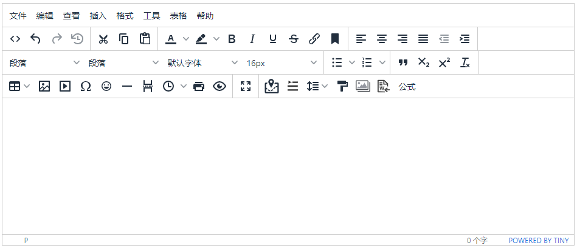

ZSSAER学习日志
ZSSAER学习日志算法设计描述算法复杂度常见算法栈栈的实现栈的应用后缀表达式队列队列的实现队列假溢出循环队列递归递归的特点递归与栈的关系数组二分查找移除元素滑动窗口法数列排序算法插入排序归并排序快速排序链表链表的类型链表存储方式删除节点性能分析移除链表元素问题设计链表反转链表哈希表常见的三种哈希结构两个数组的交集(SET)两数之和的下标(MAP)四数组相加树树的定义节点类型\节点间的关系二叉树二叉树的特点完全二叉树满二叉树斜二叉树存储二叉树获取验证码 easy-captchaMaven依赖使用方法Git版本管理Git 与 SVN 区别Git安装Linux 平台上安装Git 配置Git使用入门分支管理保存点cherry-pickMYSQL详解注意规范修改表修改表名增加表字段修改表字段删除表字段MySql数据管理外键(了解即可)物理外键(不建议使用)DML语言(全部记住)添加修改删除DQL查询语言联表查询JoinON详解自连接分页和排序子查询常用函数聚合函数及分组过滤事务1.事务简介2.事务四大特征/原则3.MYSQL
事务处理索引索引分类索引使用索引原则权限管理和备份用户管理Mysql备份数据库三大范式Mybatis XML映射文件详解基本SQL XML语句Select语句 -查询Insert、Update、Delete 语句Foreach语句Sql语句#{xxx}/${xxx} -字符串替换 语句ResultMap
-结果映射id & resultAssociation
-关联Collection -集合Discriminator -鉴定器动态
SQLif语句choose、when、otherwise语句trim、where、set语句TK.mybatis框架使用BaseMapper方法：IdsMapper方法：ConditionMapper方法：JWT（JSON Web Token)跨域身份验证结构解析使用JWT1.Maven依赖2.利用数据，生成对应Token3.使用对应Token，获取数据SpringBoot+Mybatis整合Maven依赖操作方法1.编写实体类2.编写mapper接口3.编写mapper
xml映射文件4.编写service接口5.编写service实现类6.编写controller文件7.配置property文件(或者yml文件)Mybatis逆向工程操作方法一.Maven依赖二.配置generatorConfig.xml文件三.编写生成器PageHelper 分页Maven依赖操作方法1.配置文件2.编写对应需要分页controller层方法Redis基础学习Linu下安装服务器打开服务器访问服务器基础知识数据类型1.StringSET命令GET命令GETSET命令KEYS命令STRLEN命令MSET命令2.HashHMSET命令HGETALL命令HGET命令HDEL命令HLEN命令3.ListLPUSH命令LRANGE命令LSET命令LLEN命令LIINDEX命令LPOP/RPOP命令RPOPLPUSH命令4.SetSADD命令SMEMBER命令SCARD命令SISMEMBER命令SREM命令SRANDMEMBER命令对比命令SDIFF命令SINTER命令SUNION命令5.ZsetZADD命令ZSCARD命令ZRANGE/ZREVRANGE命令三种特殊数据类型Geospatial
- 地理位置Geoadd - 添加地理位置Geopos -
查询地理位置Geodist - 计算地理之间距离Georadius - 寻找附近(通过经纬度)Georadiusbymember - 寻找附近(通过指定元素)Hyperloglog数据结构 - 基数统计Bitmaps -
位图(位存储)发布订阅SUBSCRIBE命令PUBLISH命令UNSUBSCRIBE命令事务事务执行步骤事务监控Redis的持久化RDB(Redis
DataBase)AOF(Append Only File)Redis主从复制配置环境层层链路哨兵模式JedisMaven依赖编码测试SpringBoot+RedisMaven依赖配置方法1.配置properties文件(yaml文件)中的redis环境参数2.配置RedisConfig类3.配置RedisUtil类4.创建实体类5.在Controller中使用（读写）MD5+Salt+Hash散列进行数据加密主要方法注册用户时Shiro安全框架主要功能细分功能Maven依赖快速入门语句SpringBoot继承ShiroMaven依赖创建Realm类创建ShiroConfig配置类ShiroSessionManager类Controller类Shiro跨域过滤Shiro+Thymeleaf页面整合常用标签：The has Permission tagThe
authenticated tagThe hasRole tag权限、角色访问控制方法一：直接在页面控制（以Thymeleaf为例）方法二：Controller代码层中控制方法三：代码注释控制JAVA设计模式OOP七大原则单例模式工厂模式Swagger简介SpringBoot集成Swagger配置SwaggerSwagger配置扫描接口配置API的分组扫描实体类ThymeleafMaven依赖首次使用语法规则thymeleaf公共页面元素抽取Vue环境配置vue.js基础Vue组件Axios异步通讯Slot插槽自定义事件WebPack打包Vue-router路由路由嵌套路由参数传递1.通过路由直接获取参数值2.通过props进行获取参数路由重定向参数检验ElementUI在单个页面设置Body背景颜色:单个页面设置显示标题1.修改项目title2.单个页面设置不同标题设置404页面路由钩子在钩子函数中使用异步请求Vue前端传输表单设置VUE页面切换动画Vue常见问题Vue3创建项目Setup()响应式变量reactive声明响应式状态变量ref声明响应式状态变量reactive和ref区别响应式watch独立的 computed 属性Provide
/ Inject (依赖注入)使用响应式property修改响应式property总结深入slot插槽插槽备用内容插槽具名插槽渲染作用域独占默认插槽写法插槽Prop的解构具名插槽的缩写模板引用SpringBoot Result对象一：定义响应码枚举二：创建返回对象Result实体（泛型）四：返回结果数据格式封装 / 响应结果生成工具五：返回Result功能测试maven pom文件配置UUID（通用唯一识别码）UUID生成工具类RESTful项目登录模块的实现配置跨域访问配置类实现方法Ehcache 缓存ehcache 和 redis 比较Maven引入依赖项目整合阿里云对象存储服务-OSS基本概念OSS与文件系统的对比Java API使用DockerNuxt.js安装和运行修改默认端口号项目文件全局css文件设置路由功能动态路由跳转默认模板和默认模块默认模板默认布局自定义404页面Front-End
前端设计position(定位)static:静态定位relative:相对定位fixed:固定定位absolute:绝对定位sticky:粘性定位重叠元素浮动和清除float 属性clear 属性Flexbox
布局模块TweenMax(GSAP)动画引用/导入TweenLite和TweenMax区别TweenMax对象.play()动画结构TweenMax.to()TweenMax.from()TweenMax.fromTo()TweenMax.staggerTo()TweenMax.staggerFromTo()TweenMax.delayedCall()TweenMax.set()3D效果动画参数repeatdelay实例属性.timelineLocomotive
Scroll(视差滚动)安装\引用使用ECharts
-可视化图表库安装Vue组件引用ECharts
主要属性组成系列（series）组件（component）Vue3组件复用使用dataset来管理数据维度（dimension）
TinyMCE富文本编辑器TinyMCE是否收费Vue下快速使用更多插件
算法设计
算法（Algorithm）是指用来操作数据、解决程序问题的一组方法。对于同一个问题，使用不同的算法，也许最终得到的结果是一样的，但在过程中消耗的资源和时间却会有很大的区别。
如何去衡量不同算法之间的优劣呢？
主要还是从算法所占用的「时间」和「空间」两个维度去考量。
- 时间维度：是指执行当前算法所消耗的时间，我们通常用「时间复杂度」来描述。
- 空间维度：是指执行当前算法需要占用多少内存空间，我们通常用「空间复杂度」来描述。
描述算法复杂度
在描述算法复杂度时,经常用到o(1), o(n), o(logn), o(nlogn)来表示对应算法的时间复杂度, 这里进行归纳一下它们代表的含义: 这是算法的时空复杂度的表示。不仅仅用于表示时间复杂度，也用于表示空间复杂度。
O后面的括号中有一个函数，指明某个算法的耗时/耗空间与数据增长量之间的关系。其中的n代表输入数据的量。
线性阶O(n)，就代表数据量增大几倍，耗时也增大几倍。比如常见的遍历算法。
平方阶O(n^2)，就代表数据量增大n倍时，耗时增大n的平方倍，这是比线性更高的时间复杂度。比如冒泡排序，就是典型的O(n^2)的算法，对n个数排序，需要扫描n×n次。
对数阶O(logn)，当数据增大n倍时，耗时增大logn倍（这里的log是以2为底的，比如，当数据增大256倍时，耗时只增大8倍，是比线性还要低的时间复杂度）。二分查找就是O(logn)的算法，每找一次排除一半的可能，256个数据中查找只要找8次就可以找到目标。
线性对数阶O(nlogn)，就是n乘以logn，当数据增大256倍时，耗时增大256*8=2048倍。这个复杂度高于线性低于平方。归并排序就是O(nlogn)的时间复杂度。
常数阶O(1)就是最低的时空复杂度了，也就是耗时/耗空间与输入数据大小无关，无论输入数据增大多少倍，耗时/耗空间都不变。 哈希算法就是典型的O(1)时间复杂度，无论数据规模多大，都可以在一次计算后找到目标（不考虑冲突的话）
常见算法
1、排序算法：快速排序、归并排序、计数排序 2、搜索算法：回溯、递归、剪枝 3、图论：最短路径、最小生成树、网络流建模 4、动态规划：背包问题、最长子序列、计数问题 5、基础技巧：分治、倍增、二分法、贪心算法
数据结构：
1、数组和链表 2、栈与队列 3、树和图 4、哈希表 5、大/小跟堆，可并堆 6、字符串：字典树、后缀树
栈
栈（stack）是限制插入和删除只能在一个位置上进行的表，该位置是表的末端叫做栈的顶（top），对栈的基本操作有push(进栈)和pop(出栈),前者相当于插入，后者则是删除最后插入的元素。
一般的模型是，存在某个元素位于栈顶，而该元素是唯一可见元素。

栈的实现
因为栈是一个表，因此能够实现表的方法都可以实现栈，ArrayList和LinkedList都可以支持栈操作。
xxxxxxxxxx
Stack<TreeNode> stack = new Stack<TreeNode>();
栈的应用
栈在现实中应用场景很多，大家在刷题时就可以注意到，很多题目都可以用栈来解决的。
比较常用的情景，数字表达式的求值。
后缀表达式
又被称之为逆波兰表示.
普通四则运算中括号也是其中的一部分，先乘除后加减使运算变的复杂.使用后缀表达式则可以无需考虑括号.
将中缀表达式(普通)转为后缀表达式:
中缀:9 + ( 3 - 1 ) * 3 + 10 / 2
后缀:9 3 1 - 3 * + 10 2 / +
转换规则:
1.从左到右遍历中缀表达式的每个数字和符号，若是数字就输出（直接成为后缀表达式的一部分，不进入栈）
2.若是符合则判断其与栈顶符号的优先级，是右括号 或 重复出现且低于栈顶的元素，则栈顶元素依次出栈并输出，直到重复元素出栈完毕，当前再元素入栈。
3.遵循以上两条直到输出后缀表达式为止。

计算规则:
中缀:9 + ( 3 - 1 ) * 3 + 10 / 2=20
后缀:9 3 1 - 3 * + 10 2 / +
1.从左到右遍历表达式的每个数字和符号，如果是数字就进栈
2.如果是符号就将栈顶的两个数字出栈，用下位元素与栈顶元素进行计算,并将结果入栈，一直到获得最终结果。

队列
像栈一样，队列（queue）也是表。
然而使用队列时插入在一端进行而删除在另一端进行，遵守先进先出的规则。所以队列的另一个名字是（FIFO）。

队列的实现
队列我们在树的层次遍历时经常使用，后面我们写到树的时候会给大家整理框架。队列同样也可以由数组和LinkedList实现，刷题时比较常用的方法是
xxxxxxxxxx
Queue<TreeNode> queue = new LinkedList<TreeNode>();
队列假溢出
数组长度为5，我们放入了[1,2,3,4,5],我们将1，2出队，此时如果继续加入6时，因为数组末尾元素已经被占用，再向后加则会溢出，但是我们的下标0，和下标1还是空闲的。所以我们把这种现象叫做“假溢出”。
例如，我们在学校里面排队洗澡一人一个格，当你来到澡堂发现前面还有两个格，但是后面已经满了，你是去前面洗，还是等后面格子的哥们洗完再洗？肯定是去前面的格子洗。除非澡堂的所有格子都满了。我们才会等。
使用循环队列可以解决假溢出问题.
循环队列
用来解决假溢出的方法就是后面满，就再从头开始，也就是头尾相接的循环，我们把队列的这种头尾相接的顺序存储结构成为循环队列。

队列为空时front == rear，队列满时也是front == rear，区分满和空:
当队列为空时，front==rear,当队列满是我们保留一个元素空间，也就是说，队列满时，数组内还有一个空间。再根据以下公式则能够判断队列满没满了。
(rear+1)%queuesize==front
其中queuesize,代表队列的长度，上图为5。我们来判断上面两张图是否满。（4+1）%5==0，（1+1）%5==3 所以两种情况都是满的。

递归
递归，在计算机科学中是指一种通过重复将问题分解为同类的子问题而解决问题的方法。简单来说，递归表现为函数调用函数本身。
递归最恰当的比喻，就是查词典。我们使用的词典，本身就是递归，为了解释一个词，需要使用更多的词。当你查一个词，发现这个词的解释中某个词仍然不懂，于是你开始查这第二个词，可惜，第二个词里仍然有不懂的词，于是查第三个词，这样查下去，直到有一个词的解释是你完全能看懂的，那么递归走到了尽头，然后你开始后退，逐个明白之前查过的每一个词，最终，你明白了最开始那个词的意思。
简单的代码说明:
xxxxxxxxxx
public int sum(int n) {
//终止条件
if (n <= 1) {
return 1;
}
//自身调用
return sum(n - 1) + n;
}
递归的特点
递归有两个显著的特征,终止条件和自身调用:
- 自身调用：原问题可以分解为子问题，子问题和原问题的求解方法是一致的，即都是调用自身的同一个函数。
- 终止条件：递归必须有一个终止的条件，即不能无限循环地调用本身。
递归与栈的关系


数组
二分查找
二分查询法就是讲数据进行两份化处理. 左边区域left 右边区域right.再取中间值,进行比较,判断要求数据在哪个区域
大家写二分法经常写乱，主要是因为对区间的定义没有想清楚，区间的定义就是不变量。要在二分查找的过程中，保持不变量，就是在while寻找中每一次边界的处理都要坚持根据区间的定义来操作，这就是循环不变量规则。
写二分法，区间的定义一般为两种，左闭右闭即[left, right]，或者左闭右开即[left, right)。
例题:给定一个 n 个元素有序的（升序）整型数组 nums 和一个目标值 target ，写一个函数搜索 nums 中的 target，如果目标值存在返回下标，否则返回 -1。
示例 1:
xxxxxxxxxx输入: nums = [-1,0,3,5,9,12], target = 9输出: 4解释: 9 出现在 nums 中并且下标为 4
示例 2:
xxxxxxxxxx输入: nums = [-1,0,3,5,9,12], target = 2输出: -1解释: 2 不存在 nums 中因此返回 -1
提示：
- 你可以假设 nums 中的所有元素是不重复的。
- n 将在 [1, 10000]之间。
- nums 的每个元素都将在 [-9999, 9999]之间。
假设存在数组：1,2,3,4,7,9,10中查找元素2.

xxxxxxxxxx
public static int twolinkSearch(int[] nums, int target) {
//当 target 小于nums[0] 或者nums[nums.length - 1]时返回-1
if (target < nums[0] || target > nums[nums.length - 1]) {
return -1;
}
int left = 0;
int right = nums.length - 1;
while (left <= right) {
int mid = left + ((right - left) / 2); // 防止溢出 等同于(left + right)/2
if (nums[mid] ==target)
return mid;
else if (nums[mid] < target) // 中间数小于目标值,则目标值在右半区
left=mid+1;
else if (nums[mid]>target) // 中间数大于目标值,则目标值在左半区
return right=mid-1;
}
return -1;
}
移除元素
要知道数组的元素在内存地址中是连续的，不能单独删除数组中的某个元素，只能覆盖。
例题:给你一个数组 nums 和一个值 val，你需要 原地 移除所有数值等于 val 的元素，并返回移除后数组的新长度。
提示:不要使用额外的数组空间，你必须仅使用 O(1) 额外空间并原地修改输入数组。
示例 1:
给定 nums = [3,2,2,3], val = 3, 函数应该返回新的长度 2, 并且 nums 中的前两个元素均为 2。 你不需要考虑数组中超出新长度后面的元素。
示例 2:
给定 nums = [0,1,2,2,3,0,4,2], val = 2, 函数应该返回新的长度 5, 并且 nums 中的前五个元素为 0, 1, 3, 0, 4。
暴力循环解法:

使用两层for循环，一个for循环遍历数组元素 ，第二个for循环更新数组。
xxxxxxxxxx
// 时间复杂度：O(n^2)
// 空间复杂度：O(1)
public static int foreachDeleteVar(int[] nums,int target){
int length = nums.length;
for (int i=0;i<length;i++){
if (nums[i]==target){ // 发现需要移除的元素，就将后面数组集体向前移动一位,进行覆盖操作
for (int j=i+1;j<length;j++){
nums[j-1]=nums[j];
}
i--; // 因为下表i以后的数值都向前移动了一位，所以i也向前移动一位
length--; // 此时数组的大小-1
}
}
return length;
}
双指针法:
双指针法（快慢指针法）： 通过一个快指针和慢指针在一个for循环下完成两个for循环的工作。

双指针法（快慢指针法）在数组和链表的操作中是非常常见的，很多考察数组、链表、字符串等操作的面试题，都使用双指针法。
xxxxxxxxxx
// 时间复杂度：O(n)
// 空间复杂度：O(1)
public static int fastSlowIndexDeleteVar(int[] nums, int target) {
int fast = 0;
int slow;
for (slow = 0; fast < nums.length; fast++) {
if (nums[fast] != target) {
nums[slow] = nums[fast];
slow++;
}
}
return slow;
}
滑动窗口法
所谓滑动窗口，就是不断的调节子序列的起始位置和终止位置，从而得出我们要想的结果。通常使用在求和的数组上.
滑动窗口也可以理解为双指针法的一种！只不过这种解法更像是一个窗口的移动，所以叫做滑动窗口更适合一些。
例题:给定一个含有 n 个正整数的数组和一个正整数 s ，找出该数组中满足其和 ≥ s 的长度最小的 连续 子数组，并返回其长度。如果不存在符合条件的子数组，返回 0。
示例：
输入：s = 7, nums = [2,3,1,2,4,3] 输出：2 解释：子数组 [4,3] 是该条件下的长度最小的子数组。
使用滑动窗口法:

本题中实现滑动窗口，主要确定如下三点：
- 窗口内是什么？
- 如何移动窗口的起始位置？
- 如何移动窗口的结束位置？
窗口就是 满足其和 ≥ s 的长度最小的 连续 子数组。
窗口的起始位置如何移动：如果当前窗口的值大于s了，窗口就要向前移动了（也就是该缩小了）。
窗口的结束位置如何移动：窗口的结束位置就是遍历数组的指针，窗口的起始位置设置为数组的起始位置就可以了。
xxxxxxxxxx
public static int miniSubLen(int[] nums, int target) {
int start = 0;
int sum = 0;
int result = Integer.MAX_VALUE;
for (int end = 0;end < nums.length;end++){
sum += nums[end];
while (sum >= target){ //判断结果是否大于或等于目标值
result = Math.min(result,end - start + 1); //判断结果的数组长度,如果更小则替代原结果
sum -= nums[start++]; //减掉开始指针的值,并将开始指针向前移动
}
}
return result == Integer.MAX_VALUE ? 0 : result;
}
数列排序算法
进行数列排序算法:
插入排序

每次将一个数字插入一个有序的数组里，成为一个长度更长的有序数组，有限次操作以后，数组整体有序。
xxxxxxxxxx
/**
* 时间复杂度：O(N^2)
* 空间复杂度：O(1)
*/
public int[] sortArray(int[] nums) {
int len = nums.length;
// 循环不变量：将 nums[i] 插入到区间 [0, i) 使之成为有序数组
for (int i = 1; i < len; i++) {
int temp = nums[i]; // 提前将其当前指针的值存储
int j = i; //用作遍历当前指针前的元素的指针
//判断前一个数是否大于当前数, 注意边界 j > 0
while (j > 0 && nums[j - 1] > temp) {
nums[j] = nums[j - 1];
j--;
}
nums[j] = temp;
}
return nums;
}
在小区间内执行排序任务的时候，可以转向使用「插入排序」。
归并排序
归并这个词语的含义就是合并，并入的意思.
归并排序使用的就是分治思想。顾名思义就是分而治之，将一个大问题分解成若干个小的子问题来解决。
将原数组分区域,分别排序,借助额外空间，合并分区域的有序数组，得到更长的有序数组.

而其中的归并主要实现思想为:

通过双指针从左自右比较两个指针指向的值,将较小的一方存入大集合中,存入之后较小一方的指针向前移动,并继续比较，直到某一小集合的元素全部都存到大集合中。

当某一小集合元素全部放入大集合中(指针到尾部无法继续后)，则需将另一小集合中剩余的所有元素存到大集合中.
xxxxxxxxxx
/**
* 对数组 nums 的子区间 [left, right] 进行归并排序
* @param nums
* @param left
* @param right
* @param temp
*/
private void mergeSort(int[] nums, int left, int right, int[] temp) {
// 对小区域的数组进行插入排序
if (right - left <= INSERTION_SORT_THRESHOLD) {
insertionSort(nums, left, right);
return;
}
int mid = left + (right - left) / 2;
// 分成两部分进行继续归并排序
mergeSort(nums, left, mid, temp);
mergeSort(nums, mid + 1, right, temp);
// 如果第一部分的尾部 小于或等于 第二部分的头部 则无需合并排序
if (nums[mid] <= nums[mid + 1]) {
return;
}
//合并小区域数组排序
mergeOfTwoSortedArray(nums, left, mid, right, temp);
}
/**
* 合并两个有序数组：先把值复制到临时数组，再合并回去
* @param nums
* @param left
* @param mid
* @param right
* @param temp
*/
public void mergeOfTwoSortedArray(int nums[], int left, int mid, int right, int[] temp) {
System.arraycopy(nums, left, temp, left, right + 1 - left); // 备份原数组至temp数组
int i = left; //指针i从已排序第一部分头部开始
int j = mid + 1; //指针i从已排序第二部分头部开始
for (int k = left; k <= right; k++) {
if (i == mid + 1) { //指针i到达已排序第一部分尾部
nums[k] = temp[j];
j++;
} else if (j == right + 1) { //指针i到达已排序第二部分尾部
nums[k] = temp[i];
i++;
}else if (temp[i]<=temp[j]){
// 注意写成 < 就丢失了稳定性（相同元素原来靠前的排序以后依然靠前）
nums[k]=temp[i];
i++;
}else {
// temp[i] > temp[j]
nums[k] = temp[j];
j++;
}
}
}
| 算法名称 | 最好时间复杂度 | 最坏时间复杂度 | 平均时间复杂度 | 空间复杂度 | 是否稳定 |
|---|---|---|---|---|---|
| 归并排序 | O(nlogn) | O(nlogn) | O(nlogn) | O(n) | 稳定 |
快速排序
快速排序也是一种分治的排序算法.它将数组通过切分(partition)分成两个子数组,将两部分独立地排序.快速排序和归并排序是互补的.
快速排序基本思想:
1.先从数组中找一个基准数
2.让其他比它大的元素移动到数列一边，比他小的元素移动到数列另一边，从而把数组拆解成两个部分。
3.再对左右区间重复第二步，直到各区间只有一个数。
在快速排序中,首先随机打乱数组排序.然后取出切分元素,它把数组大于小于它的进行划分.

然后分别将左右部分循环进行快速排序,

一边循环到只有大小一为止,排序到最后直接合并即可(不需要像归并排序最后还需要合并排序).
- 版本 1：基本版本：把等于切分元素的所有元素分到了数组的同一侧，但可能会造成递归树倾斜；
xxxxxxxxxx
/**
* 快速排列
* @param nums
* @param left
* @param right
*/
public void quickSort(int[] nums, int left, int right) {
// 判断是否 长度是否为0 ,为0则为排序完毕的元素
if (right - left + 1 <= 0){
return;
}
//获取切点元素位置
int pIndex = partition(nums, left, right);
quickSort(nums, left, pIndex - 1); //左侧
quickSort(nums, pIndex + 1, right); //右侧
}
/**
* 切分数组
*
* @param nums
* @param left
* @param right
*/
private int partition(int[] nums, int left, int right) {
//获取随机下标数(切分元素)
int randomIndex = new Random().nextInt(right - left + 1) + left;
swap(nums, left, randomIndex); //将头部与切分元素进行交换
// 切分元素值
int pivot = nums[left];
// 切分元素下标位置
int less = left;
for (int i = left + 1; i <= right; i++) {
if (nums[i] < pivot) { //指针的值小于切分值
less++;
swap(nums, i, less); //切分值与其互换位置
}
}
swap(nums, left, less);
return less;
}
/**
* 交换两个值位置
*/
private void swap(int[] nums, int index1, int index2) {
int temp = nums[index1];
nums[index1] = nums[index2];
nums[index2] = temp;
}
版本2:双指针法 - 把等于切分元素的所有元素等概率地分到了数组的两侧，避免了递归树倾斜，递归树相对平衡；
xxxxxxxxxx
/**
* 快速排列
*
* @param nums
* @param left
* @param right
*/
public void quickSort(int[] nums, int left, int right) {
if (left < right) {
int pIndex =partition(nums,left,right);
quickSort(nums,left,pIndex-1);
quickSort(nums,pIndex+1,right);
}
}
public int partition(int[] nums, int left, int right) {
int randomIndex = left + new Random().nextInt(right - left + 1);
swap(nums, randomIndex, left);
int pivot = nums[left];
// 两个指针:一个从前到后,一个从后向前
int less = left + 1;
int greater = right;
while (true){
while (less<=right&&nums[less]<pivot){
less++;
}
while (greater>left&& nums[greater]>pivot){
greater--;
}
// 当小指针大于或等于大指针退出循环
if (less>=greater){
break;
}
// 当less指针大于等于 且greater指针小于等于时,同时双指针移动
swap(nums,less,greater);
less++;
greater--;
}
swap(nums,left,greater);
return greater;
}
public void swap(int[] nums, int index1, int index2) {
int temp = nums[index1];
nums[index1] = nums[index2];
nums[index2] = temp;
}
链表
链表是一种通过指针串联在一起的线性结构，每一个节点是又两部分组成，一个是数据域一个是指针域（存放指向下一个节点的指针）
最后一个节点的指针域指向null（空指针的意思）。
链接的入口点称为列表的头结点也就是head。

####
链表的类型
1.单链表 同上图,单链表中的节点只能指向节点的下一个节点。
2.双链表:每一个节点有两个指针域，一个指向下一个节点，一个指向上一个节点。所以双链表 既可以向前查询也可以向后查询。

3.循环链表:顾名思义，就是链表首尾相连。循环链表可以用来解决约瑟夫环问题。

链表存储方式
数组是在内存中是连续分布的，但是链表在内存中可不是连续分布的。
链表是通过指针域的指针链接在内存中各个节点。
所以链表中的节点在内存中不是连续分布的 ，而是散乱分布在内存中的某地址上，分配机制取决于操作系统的内存管理。
删除节点
只要将节点的next指针 指向删除的节点后的下一个节点就可以了。
Java、Python，就有自己的内存回收机制，就不用自己手动内存释放了。但C++里最好是再手动释放这个删除的节点，释放这块内存。
删除最后一个节点时,需要从头节点查找到第四个节点通过next指针进行删除操作，查找的时间复杂度是O(n)。
性能分析

数组在定义的时候，长度就是固定的，如果想改动数组的长度，就需要重新定义一个新的数组。
链表的长度可以是不固定的，并且可以动态增删， 适合数据量不固定，频繁增删，较少查询的场景。
移除链表元素问题
例题：删除链表中等于给定值 val 的所有节点。
示例 1： 输入：head = [1,2,6,3,4,5,6], val = 6 输出：[1,2,3,4,5]
示例 2： 输入：head = [], val = 1 输出：[]
示例 3： 输入：head = [7,7,7,7], val = 7 输出：[]
移除操作，就是让节点next指针直接指向下下一个节点就可以了.
但如果删除的是头结点的话:
- 直接使用原来的链表来进行删除操作。
移除头结点和移除其他节点的操作是不一样的，因为链表的其他节点都是通过前一个节点来移除当前节点，而头结点没有前一个节点。
所以头结点移除，只要将头结点向后移动一位就可以，这样就从链表中移除了一个头结点。
xxxxxxxxxx
public void removeVal(String val) {
if (head != null && val.equals(head.getData())) {
head = head.getNext();
}
if (head == null) {
return;
}
Node pre = head;
Node cur = head.getNext();
while (cur != null) {
if (val.equals(cur.getData())) {
pre.setNext(cur.getNext());
size--;
} else {
pre = cur;
}
cur = cur.getNext();
}
}
- 设置一个虚拟头结点在进行删除操作。

xxxxxxxxxx
public ListNode removeElements(ListNode head, int val) {
if (head == null) {
return head;
}
// 因为删除可能涉及到头节点，所以设置dummy节点，统一操作
ListNode dummy = new ListNode(-1, head);
ListNode pre = dummy;
ListNode cur = head;
while (cur != null) {
if (cur.val == val) {
pre.next = cur.next;
} else {
pre = cur;
}
cur = cur.next;
}
return dummy.next;
}
设计链表
例题:
在链表类中实现这些功能：
- get(index)：获取链表中第 index 个节点的值。如果索引无效，则返回-1。
- addAtHead(val)：在链表的第一个元素之前添加一个值为 val 的节点。插入后，新节点将成为链表的第一个节点。
- addAtTail(val)：将值为 val 的节点追加到链表的最后一个元素。
- addAtIndex(index,val)：在链表中的第 index 个节点之前添加值为 val 的节点。如果 index 等于链表的长度，则该节点将附加到链表的末尾。如果 index 大于链表长度，则不会插入节点。如果index小于0，则在头部插入节点。
- deleteAtIndex(index)：如果索引 index 有效，则删除链表中的第 index 个节点。

分析:这道题目设计链表的五个接口：
- 获取链表第index个节点的数值
- 在链表的最前面插入一个节点
- 在链表的最后面插入一个节点
- 在链表第index个节点前面插入一个节点
- 删除链表的第index个节点
链表操作的两种方式：
- 直接使用原来的链表来进行操作。
- 设置一个虚拟头结点在进行操作。
为了方便,采用的设置一个虚拟头结点更好.
实现
单链表:
xxxxxxxxxx
/**
* @description: 单链表
* @author: Zhaotianyi
* @time: 2021/6/16 15:47
*/
public class Node {
private String data;
private Node next;
public Node(String data) {
this.data = data;
}
public Node getNext() {
return next;
}
public void setNext(Node next) {
this.next = next;
}
public String getData() {
return data;
}
}
/**
* @description: TODO
* @author: Zhaotianyi
* @time: 2021/6/16 16:10
*/
public class LinkList {
int size; //链表长度
Node head; //虚拟头结点
/**
* 初始化链表
*/
public LinkList(){
size=0;
head = new Node("null data");
}
/**
* 获取指定位置节点数值
* @param index
* @return
*/
public String get(int index){
// Index非法返回
if (index < 0 || index >= size){
return "Failed Index";
}
Node currentNode =head; //查询从头部节点开始
//包含一个虚拟头节点，所以查找第 index+1 个节点
for (int i = 0; i <= index; i++) {
currentNode = currentNode.getNext();
}
return currentNode.getData();
}
/**
* 向指定位置添加相关数据节点
* @param index
* @param val
*/
public void addAtIndex(int index,String val){
if (index > size){
return;
}
if (index < 0){
index = 0;
}
size++; //添加后链表数量自增
//找到要添加节点的前一个节点
Node pred = head; //查询从头部节点开始
for (int i = 0;i < index;i++){
pred = head.getNext();
}
Node addNode = new Node(val);
addNode.setNext(pred.getNext()); //新增节点的指针指向前节点的指针
pred.setNext(addNode); //前节点指针改为新增指针 实现插入节点
}
/**
* 向链表头部插入数据节点
* @param val
*/
public void addAtHead(String val){
addAtIndex(0,val);
}
/**
* 向链表尾部插入数据节点
* @param val
*/
public void addAtTail(String val){
addAtIndex(size,val);
}
/**
* 删除指定位置节点
* @param index
*/
public void deleteAtIndex(int index){
if (index >= size || index < 0){
return;
}
size--; //删除后链表数量自减
Node pred =head;
for (int i = 0; i < index; i++) {
pred = pred.getNext();
}
pred.setNext(pred.getNext().getNext());
}
}
双链表:
xxxxxxxxxx
/**
* 多链表
* @description: TODO
* @author: Zhaotianyi
* @time: 2021/6/16 16:43
*/
public class MyLinkedList {
class ListNode {
int val;
ListNode next,prev;
ListNode(int x) {val = x;}
}
int size; //链表长度
ListNode head,tail; //哨兵节点 [头部节点,尾部节点]
/** Initialize your data structure here. */
public MyLinkedList() {
size = 0;
head = new ListNode(0);
tail = new ListNode(0);
head.next = tail;
tail.prev = head;
}
/** Get the value of the index-th node in the linked list. If the index is invalid, return -1. */
public int get(int index) {
if(index < 0 || index >= size){return -1;}
ListNode cur = head;
// 通过判断 index < (size - 1) / 2 来决定是从头结点还是尾节点遍历，提高效率
if(index < (size - 1) / 2){
for(int i = 0; i <= index; i++){
cur = cur.next;
}
}else{
cur = tail;
for(int i = 0; i <= size - index - 1; i++){
cur = cur.prev;
}
}
return cur.val;
}
/** Add a node of value val before the first element of the linked list. After the insertion, the new node will be the first node of the linked list. */
public void addAtHead(int val) {
ListNode cur = head;
ListNode newNode = new ListNode(val);
newNode.next = cur.next;
cur.next.prev = newNode;
cur.next = newNode;
newNode.prev = cur;
size++;
}
/** Append a node of value val to the last element of the linked list. */
public void addAtTail(int val) {
ListNode cur = tail;
ListNode newNode = new ListNode(val);
newNode.next = tail;
newNode.prev = cur.prev;
cur.prev.next = newNode;
cur.prev = newNode;
size++;
}
/** Add a node of value val before the index-th node in the linked list. If index equals to the length of linked list, the node will be appended to the end of linked list. If index is greater than the length, the node will not be inserted. */
public void addAtIndex(int index, int val) {
if(index > size){return;}
if(index < 0){index = 0;}
ListNode cur = head;
for(int i = 0; i < index; i++){
cur = cur.next;
}
ListNode newNode = new ListNode(val);
newNode.next = cur.next;
cur.next.prev = newNode;
newNode.prev = cur;
cur.next = newNode;
size++;
}
/** Delete the index-th node in the linked list, if the index is valid. */
public void deleteAtIndex(int index) {
if(index >= size || index < 0){return;}
ListNode cur = head;
for(int i = 0; i < index; i++){
cur = cur.next;
}
cur.next.next.prev = cur;
cur.next = cur.next.next;
size--;
}
}
反转链表
题意：反转一个单链表。
如果再定义一个新的链表，实现链表元素的反转，其实这是对内存空间的浪费。
其实只需要改变链表的next指针的指向，直接将链表反转 ，而不用重新定义一个新的链表.

使用双指针方法.
首先定义一个cur指针，指向头结点，再定义一个pre指针，初始化为null。
反转前将cur中节点原指向节点进行备份,然后进行替换操作,最后将备份节点作为cur进行指向下一个节点,循环操作. prev则为新的反转后的链表.
xxxxxxxxxx
/**
* 反转链表
*/
public void reverseList() {
Node prev = null;
Node cur = head;
Node temp = null;
while (cur != null) {
temp = cur.getNext(); //临时保存下一个节点
cur.setNext(prev);
prev = cur;
cur = temp;
}
head = prev;
}
哈希表
哈希表是根据关键码的值而直接进行访问的数据结构。
直白来讲其实数组就是一张哈希表。哈希表中关键码就是数组的索引下表，然后通过下表直接访问数组中的元素.
使用环境:一般哈希表都是用来快速判断一个元素是否出现集合里。
哈希表的检索时间复杂度为O(1).
常见的三种哈希结构
- 数组
- set （集合）
- map(映射)
其中JAVA中
HashMap:底层采用哈希表,无序,不可重复
HashSet:底层采用哈希表,无序,不可重复 存储时，会采用链式结构进行存储。
TreeSet:底层采用红黑树,有序,不可重复 存储时，会采用链式结构进行存储。
当我们遇到了要快速判断一个元素是否出现集合里的时候，就要考虑哈希法。
但是哈希法也是牺牲了空间换取了时间，因为我们要使用额外的数组，set或者是map来存放数据，才能实现快速的查找。
两个数组的交集(SET)
利用set的不可重复存储的特性,适合计算交集;
遍历数组,将其值添加至set中,然后在下一个数组中遍历选择相同的属性
xxxxxxxxxx
/**
* 返回两数值交集
*
* @param nums1
* @param nums2
* @return
*/
public static int[] interScection(int[] nums1, int[] nums2) {
if (nums1 == null || nums2 == null || nums1.length == 0 || nums2.length == 0) {
return new int[0];
}
Set<Integer> set1 = new TreeSet<>();
Set<Integer> set2 = new TreeSet<>();
for (int n : nums1) {
set1.add(n);
}
for (int n : nums2) {
if (set1.contains(n)) {
set2.add(n);
}
}
int[] ints = new int[set2.size()];
int index = 0;
for (int n : set2) {
ints[index++] = n;
}
return ints;
}
两数之和的下标(MAP)
给定一个整数数组 nums 和一个目标值 target，请你在该数组中找出和为目标值的那 两个 整数，并返回他们的数组下标。你可以假设每种输入只会对应一个答案。但是，数组中同一个元素不能使用两遍。
示例:
给定 nums = [2, 7, 11, 15], target = 9
因为 nums[0] + nums[1] = 2 + 7 = 9
所以返回 [0, 1]
暴力的解法是两层for循环查找，时间复杂度是O(n^2)。
map是一种key value的存储结构，可以用key保存数值，用value在保存数值所在的下标。

xxxxxxxxxx
public static int[] twoSum(int[] nums, int val) {
int[] ints = new int[2];
if (nums == null || nums.length == 0) {
return ints;
}
HashMap<Integer, Integer> map = new HashMap<>();
for (int i = 0; i < nums.length; i++) {
int temp = val - nums[i];
if (map.containsKey(temp)) {
ints[0] = i;
ints[1] = map.get(temp); //获取满足值的下标位置
break;
}
map.put(nums[i], i); //将key设为值,value设为下标位置
}
return ints;
}
四数组相加
给定四个包含整数的数组列表 A , B , C , D ,计算有多少个元组 (i, j, k, l) ，使得 A[i] + B[j] + C[k] + D[l] = 0。
例如:
输入: A = [ 1, 2] B = [-2,-1] C = [-1, 2] D = [ 0, 2] 输出: 2 解释: 两个元组如下:
- (0, 0, 0, 1) -> A[0] + B[0] + C[0] + D[1] = 1 + (-2) + (-1) + 2 = 0
- (1, 1, 0, 0) -> A[1] + B[1] + C[0] + D[0] = 2 + (-1) + (-1) + 0 = 0
xxxxxxxxxx
public static int fourSumConunt(int[] nums1, int[] nums2, int[] nums3, int[] nums4) {
HashMap<Integer, Integer> map = new HashMap<>();
int temp;
int res = 0;
//统计两个数组中的元素之和，同时统计出现的次数，放入map
for (int i : nums1) {
for (int j : nums2) {
temp = i + j; // 相加的值进行存储
if (map.containsKey(temp)) {
map.put(temp, map.get(temp) + 1); //相同的值的话,计数加一
} else {
map.put(temp, 1); //第一次出现的值记录
}
}
}
//统计剩余的两个元素的和，在map中找是否存在相加为0的情况，同时记录次数
for (int i : nums3) {
for (int j : nums4) {
temp = i + j;
if (map.containsKey(-temp)){ //判断是否存在有其相反的值, 与其相加为0
res += map.get(-temp); //出现计数累加
}
}
}
return res;
}
树
树的定义
树是 n （n >= 0） 个节点的有限集。 n = 0 时 我们称之为空树, 空树是树的特例。
在任意一棵非空树中：
- 有且仅有一个特定的节点称为根（Root）的节点
- 当 n > 1 时，其余节点可分为 m （m > 0）个
互不相交的有限集T1、T2、........Tm，其中每一个集合本身又是一棵树，并且称为根的子树。

有且仅有一个特定的节点称为根节点，也就是上图中的橙色节点。
当节点数目大于 1 时，除根节点以外的节点，可分为 m 个互不相交的有限集 T1,T2........Tm。
例如上图中，我们将根节点以外的节点，分为了 T1 （2，3，4，5，6，7），T2（8，9）两个有限集。
那么 T1 （绿色节点）和 T2（蓝色节点）就是根节点（橙色节点）的子树。
树定义:除根节点以外的节点，所有的子树节点不能相交。

上图中(A) , (B) 符合树的定义，（C）, (D) 不符合，这是因为 (C) , (D) 它们都有相交的子树。
节点类型\节点间的关系
孩子节点/子节点:一个节点含有的子树的根节点称为该节点的子节点.
例如:1的子节点为2,8
节点的度:一个节点含有的子节点的个数称之为该节点的度.
例如:1节点的度为2,2节点的度为2,4节点的度为3.
树的度:一棵树中,最大的节点的度称之为树的度.
例如:该树的度为3,因为节点4的度最大为3.
叶节点/终端节点:度为0的节点.
例如:5,6,7,3,9节点都被称为叶节点或者终端节点
内部节点/非终端节点:除根节点外,度不为0的节点.
例如;2,4,8节点
双亲节点/父节点:若一个节点含有子节点,则这个节点称为其子节点的父节点.
例如:4的父节点为2,8为9的父节点.
兄弟节点:具有相同父节点的节点互称为兄弟节点.
例如:3父节点为2,4父节点也为2.所以 3节点的兄弟节点为2 反之亦然.
节点的层次:见下图,从根开始定义,第一层,第二层...

堂兄第节点:双亲在同一层的节点互为堂兄弟节点.
例如:4和9,3和9
节点的祖先:从根到该节点所经过分支上的所有节点.
例如:节点5的祖先为4,2,1节点
节点的子孙:以某节点为根的子树中任一节点都称为该节点的子孙.
例如:节点2的子孙为3,4,5,6,7
树的高度/深度:树中节点的最大层次.
例如:上图树的高度为4
节点的深度:根节点到这个节点所经历的边的个数,也就是节点的层次-1
例如:节点4的深度为2
节点的高度:节点到叶子节点的最大边数.
例如:节点2到叶子节点3的边数为1,到其他叶子节点(节点5,6,7)的边数为2,所以节点2的高度为2.
森林: m(m>=0) 颗互不相交的树的集合
注意:节点的高度和深度可能容易记混
所以 在求深度时，从上往下测量，求高度时，从下往上测量，节点的高度和深度也是如此。
二叉树
二叉树前提是一棵树，也就是需要满足我们树的定义的同时，还需要满足要求:
-
每个节点
最多有两个子节点，分别是左子节点和右子节点。(二叉树并不是必须要求每个节点都有两个子节点,也可以仅有一个左子节点，或者仅有一个右子节点。)
二叉树的特点
-
每个节点最多有两棵子树，也就是说二叉树中不存在度大于 2 的节点，节点的度可以为 0，1，2。
-
左子树和右子树是有顺序的,有左右之分。
-
假如只有一棵子树 ，也要区分它是左子树还是右子树
完全二叉树
叶子结点只能出现在最下层和次下层，且最下层的叶子结点集中在树的左部。
可以这样理解，除了最后一层，其他层的节点个数都是满的，而且最后一层的叶子节点必须靠左。

所以上图中(A）（B）为完全二叉树，（C）（D）不是完全二叉树.
满二叉树
指在一棵二叉树中，所有分支节点都存在左子树和右子树，并且所有的叶子都在同一层,这种树我们称之为完全二叉树.
所以满二叉树也为完全二叉树的一种。

所以上图中只有(B)是满二叉树.
斜二叉树
斜二叉树也就是斜的二叉树.
所有的节点只有左子树的称为左斜树,所有节点只有右子树的二叉树称为右斜树.

存储二叉树
二叉树多采用两种方法进行存储: 基于数组的顺序存储法 和 基于指针的二叉链式存储法
数组存储完全二叉树:

其中节点与下标含有关系:
数组中，某节点（非叶子节点）的下标为 i ,
那么其左子节点下标为 2*i（这里可以直接通过相乘得到左孩子, 也就是为什么空出第一个位置, 如果从 0 开始存，则需要 2i+1 才行）, 右子节点为
2*i+1，其父节点为 i/2(余数不管) 。
当存储完全二叉树时,我们用数组存储,无疑是最省内存的.
但是当二叉树为斜二叉树时的话使用数组进行存储的话就会浪费存储空间(如下图)!

链式存储结构:因为二叉树的每个节点, 最多有两个孩子, 所以我们只需为每个节点定义一个数据域,两个指针域(前,后)即可,其结构如下.

其中val 为节点的值, left 指向左子节点, right 指向右子节点.
xxxxxxxxxx
public class BinaryTree {
int val;
BinaryTree left;
BinaryTree right;
BinaryTree() {}
BinaryTree(int val) { this.val = val; }
BinaryTree(int val, BinaryTree left, BinaryTree right) {
this.val = val;
this.left = left;
this.right = right;
}
}
当对树 1, 2, 3, 4, 5, 6, 7 使用链式存储结构进行存储,即为下面这种情况.

获取验证码 easy-captcha
Maven依赖
xxxxxxxxxx
<!-- 验证码easy-captcha -->
<dependency>
<groupId>com.github.whvcse</groupId>
<artifactId>easy-captcha</artifactId>
<version>1.6.2</version>
</dependency>
使用方法
xxxxxxxxxx
// 算数类型验证码
ArithmeticCaptcha captcha = new ArithmeticCaptcha(130, 48);
// 中文类型
ChineseCaptcha captcha = new ChineseCaptcha(130, 48);
xxxxxxxxxx
// 几位数运算，默认为两位
captcha.setLen(2);
// 获取运算的公式：3+2=?
captcha.getArithmetixcString();
// 获取运算的结果：5
String value = captcha.text();
xxxxxxxxxx
String key = UuidUtil.createUuid();
// 存入redis并设置过期时间为5分钟
RedisUtil.set(key, value, 600);
HashMap<String, String> captchaMap = new HashMap<String, String>(2);
captchaMap.put("captchaKey", key);
captchaMap.put("image", captcha.toBase64());
// 将key和验证码base64返回给前端
return Result.success(captchaMap);
AJAX 刷新验证码
xxxxxxxxxx
function refreshcode(obj)
{
obj.src="/captcha?id="+Math.random();
};
xxxxxxxxxx
<img src="/captcha" width="105px" height="45px" onclick="refreshcode(this)" />
Git版本管理
Git 是一个开源的分布式版本控制系统，用于敏捷高效地处理任何或小或大的项目,适合单人,多人合作开发。
Git 是 Linus Torvalds 为了帮助管理 Linux 内核开发而开发的一个开放源码的版本控制软件。
无论是国外的GitHub.GitLab,还是国内的Gitee都是Git项目代码管理网站.
Git 与 SVN 区别
Git和SVN都是项目版本控制软件,但一些区别:
Git 是分布式的，SVN 不是：这是 Git 和其它非分布式的版本控制系统，例如 SVN，CVS 等，最核心的区别。
Git 把内容按元数据方式存储，而 SVN 是按文件：所有的资源控制系统都是把文件的元信息隐藏在一个类似 .svn、.cvs 等的文件夹里。
Git 分支和 SVN 的分支不同：分支在 SVN 中一点都不特别，其实它就是版本库中的另外一个目录。
Git 没有一个全局的版本号，而 SVN 有：目前为止这是跟 SVN 相比 Git 缺少的最大的一个特征。
Git 的内容完整性要优于 SVN：Git 的内容存储使用的是 SHA-1 哈希算法。这能确保代码内容的完整性，确保在遇到磁盘故障和网络问题时降低对版本库的破坏。
在目前国内大部分公司优先使用Git为主,一部分对内公司采用SVN.
Git安装
Git 各平台安装包下载地址为：http://git-scm.com/downloads
Linux 平台上安装
Git 的工作需要调用 curl，zlib，openssl，expat，libiconv 等库的代码，所以需要先安装这些依赖工具。
在有 yum 的系统上（比如 Fedora）或者有 apt-get 的系统上（比如 Debian 体系），可以用下面的命令安装：
各 Linux 系统可以使用其安装包管理工具（apt-get、yum 等）进行安装：
xxxxxxxxxx$ yum install curl-devel expat-devel gettext-devel \openssl-devel zlib-devel$ yum -y install git-core$ git --versiongit version 1.7.1
Git 配置
Git 提供了一个叫做 git config 的工具，专门用来配置或读取相应的工作环境变量。
在 Windows 系统上，Git 会找寻用户主目录下的 .gitconfig 文件。主目录即 $HOME 变量指定的目录，一般都是 C:\Documents and Settings$USER。
Git 还会尝试找寻 /etc/gitconfig 文件，只不过看当初 Git 装在什么目录，就以此作为根目录来定位。
配置个人的用户名称和电子邮件地址：
xxxxxxxxxx
$ git config --global user.name "runoob"
$ git config --global user.email test@runoob.com
如果用了 --global 选项，那么更改的配置文件就是位于你用户主目录下的那个，以后你所有的项目都会默认使用这里配置的用户信息。
我们先来理解下 Git 工作区、暂存区和版本库概念：
- 工作区：就是你在电脑里能看到的目录。
- 暂存区：英文叫 stage 或 index。一般存放在 .git 目录下的 index 文件（.git/index）中，所以我们把暂存区有时也叫作索引（index）。
- 版本库：工作区有一个隐藏目录 .git，这个不算工作区，而是 Git 的版本库。
Git使用入门
使用Git前，需要先建立一个仓库(repository)。您可以使用一个已经存在的目录作为Git仓库或创建一个空目录,或者去克隆其他项目
1.使用命令在其项目文件夹下来创建Git项目,或者从其他项目下克隆下来
xxxxxxxxxx
git init #新建项目到文件夹
git clone [项目地址] #克隆其他项目到当前文件夹
2.设置该项目的远程服务器位置(可以在Github,Gitee上进行新建项目以便获取地址),以便之后上传文件(克隆项目跳过此步骤)
xxxxxxxxxxgit remote add origin [项目地址]
2.使用命令来添加需要提交的文件
xxxxxxxxxx
git add [文件名][文件名]... #添加指定文件到暂存区
git add [dir] #添加指定目录到暂存区，包括子目录
git add . #添加当前目录下的所有文件到暂存区
3.现在我们已经添加了这些文件，我们希望它们能够真正被保存在Git HEAD中。
xxxxxxxxxx
git commit -m "提交信息"
git commit -a # -a 参数设置后下次修改文件后不需要执行 git add 命令，直接来提交
4.现在我们修改之后可以进行推送到服务器中。
xxxxxxxxxx
git push -u origin master #将其HEAD区推出至远程服务器中的Master分支中
git push #将其推出至当前所在分支中
5.当远程服务器中代码更新后,你可以从远程服务器中获取最新代码并合并本地的版本。
xxxxxxxxxx
git pull #默认将当前分支更新合并
git pull origin master:feature_A #将远程服务器中的origin 的 master 分支拉取过来，与本地的 feature_A 分支合并。
6.获取历史提交版本信息
xxxxxxxxxx
git log
7.撤回版本
xxxxxxxxxxgit reset [版本值] #返回至指定版本(版本值只需要一部分头部即可)git reset HEAD^ #回退至上个版本
分支管理
几乎每一种版本控制系统都以某种形式支持分支。
使用分支意味着你可以从开发主线上分离开来，然后在不影响主线的同时继续工作。
用于多功能多人合作工作.
1.创建分支 切换分支:
xxxxxxxxxx
git branch [分支名] #创建分支
git checkout [分支名] #切换分支
git checkout -b [分支名] #创建并切换分支
2.删除分支
xxxxxxxxxx
git branch -d [分支名]
3.合并分支:一旦某分支有了独立内容，你终究会希望将它合并回到你的主分支。 你可以使用以下命令将任何分支合并到当前分支中去
xxxxxxxxxxgit merge [分支名] #将其分支内容合并到当前分支
但不是每次合并都会非常成功,如果其中同一个文件内容之间有区别,则会发生冲突.这时Git会将其两分支文件合并并标记冲突位置.
手动解决冲突后使用git add来告知Git文件冲突已解决.并提交保存
xxxxxxxxxxgit add [文件名]git commit -m [信息]
保存点
在进行合并分支操作时,一般都会出现代码冲突,为了安全起见,一般可以使用设置保存点方式来进行合并测试.
方式步骤:
-
确保你在正确的分支上并且你有一个干净的工作状态(暂存区)。
xxxxxxxxxxgit statusxxxxxxxxxx# On branch masternothing to commit (working directory clean) -
创建一个新的分支作为保存点,但不要切换到它.
xxxxxxxxxxgit branch savepoint -
进行合并操作等
xxxxxxxxxxgit merge spiffy_new_feature -
切换到您的可视化工具并预测刷新时其视图将如何变化。
-
对结果满意吗？
如果满意,删除保存点
xxxxxxxxxxgit branch -d savepoint如果不满意,将分支重置到保存点
xxxxxxxxxxgit reset --hard savepoint如果要清理，现在可以使用
git branch -d savepoint
cherry-pick
对于多分支的代码库，将代码从一个分支转移到另一个分支是常见需求。
这时分两种情况。一种情况是，你需要另一个分支的所有代码变动，那么就采用合并（git merge）。
另一种情况是，你只需要部分代码提交的变动（某几个提交），这时可以采用 Cherry-pick命令。

如果您目前在此图中的 H提交点,并输入了git cherry-pick E[SHA],你将获取E提交点到H后面

同理,你可以连续获取并合并多个提交点,你输入类似git cherry-pick C D E，你会在完成后得到这个：

但其中C D E 必须是按由前到后的先后顺序来的,否则会合并会报错.
MYSQL详解
注意规范
注意:所有的创建和删除操作尽量添加 IF EXISTS 语句进行判断,以免报错.
- `` :反引号,字段名必须使用它包裹;
- -- info :单行注释,注意其--后必须空出一格才可以.
- /* info */ :多行注释.
- SQL关键语句大小写不敏感,但为了快速阅读以及排错,建议写小写.
- "" :引号,Default 默认语句和Comment 备注使用.
修改表
修改表名
xxxxxxxxxx
ALTER TABLE 表名 RENAME AS 新表名 ;
ALTER TABLE teacher RENAME AS student ;
增加表字段
xxxxxxxxxx
ALTER TABLE 表名 ADD 字段名 列属性 ;
ALTER TABLE teacher ADD age int(10) ;
修改表字段
xxxxxxxxxx
ALTER TABLE 表名 MODIFY 字段名 新的列属性[] ; -- 只能修改字段列的属性以及约束,不能修改字段名
ALTER TABLE teacher MODIFY age int(12) ;
xxxxxxxxxx
ALTER TABLE 表名 CHANGE 字段名 新字段名 新的列属性[] ; -- 字段名及列属性都能修改
ALTER TABLE teacher CHANGE age age1 int(13) ;
删除表字段
xxxxxxxxxx
ALTER TABLE 表名 DROP 字段名 ;
ALTER TABLE teacher DROP age ;
MySql数据管理
外键(了解即可)
物理外键(不建议使用)
方法一:创建表时,增加约束.
不能单独删除被外键关系的表.
方法二:ALTER TABEL 表名 ADD CONSTRAINT '约束名' FOREIGN KEY('列名') REFERENCES '表名'('列名')
DML语言(全部记住)
数据库意义:数据存储,数据管理
DML语言:数据操作语言
添加
xxxxxxxxxx
-- 插入单行数据
INSERT INTO 表名 (字段1,字段2,字段3,...) VALUES (值1,值2,值3,...);
INSERT INTO 表名 VALUES (值1,值2,值3,...); -- 必须输入表所有字段值,并且位置一一对应,否则报错.
-- 插入多行数据
INSERT INTO 表名 (字段1,字段2,字段3,...) VALUES (值1,值2,值3,...),(值1,值2,值3,...),...
修改
xxxxxxxxxx
UPDATE `表名` SET `字段` = `值` WHERE 条件...
UPDATE `表名` SET `字段` = `值`; -- 无条件时默认修改所有列数据
UPDATE `表名` SET `字段` = `值` , `字段` = `值` WHERE 条件... -- 修改多个字段值
删除
xxxxxxxxxx
DELETE FROM 表名 WHERE 条件...
TRUNCATE 表名 -- 清空表所有数据
TRUNCATE删除所有数据时会将 自增字段 计数归零,而DELETE 则不会.
TRUNCATE删除所有数据不会影响事务.
DELETE删除问题: 重启数据库,在INNODB中,自增列从1开始(内存丢失).
在MyISAM中,自增列不会丢失计数.
DQL查询语言
DQL:Data query language -数据查询语言

xxxxxxxxxx
SELECT * FROM 表名; -- 查询表中所有字段数据
SELECT 字段1,字段2,字段3,... FROM 表名;
SELECT `字段1` AS 别名1,字段2 AS 别名2,字段3 AS 别名3,... FROM 表名; -- 以别名查询出来字段数据
-- 函数Concat(a,b)将a与b两结果想拼接
SELECT CONCAT('姓名',StudentName) AS 新名字 FROM student;
-- Distinct去重
SELECT DISTINCT 字段 FROM 表名;
联表查询JoinON详解


思路:
1.分析需求,分析查询的字段来自那些表,(连接查询)
2.确定使用那种连接查询? 7种
确定交叉点(这两表那些数据是相同的)
判断的条件: 表1 字段1=表2 字段2
xxxxxxxxxx
-- join on 连接查询
-- where 等值查询
SELECT s.studentNo,studentName,subjectNo,studentResult
FROM student (AS)s -- AS 可以省略
INNER JOIN/ LEFT JOIN/ RIGHT JOIN result (AS)r
WHERE/ ON s.studentNo=r.studentNo
SELECT s.studentNo,studentName,subjectName,studentResult
FROM student (AS)s -- AS 可以省略
RIGHT JOIN result (AS)r
ON s.studentNo=r.studentNo
INNER JOIN subject sub
ON r.subjectNO=sub.subjectNO
-- 连接查询可以重叠查询
| 操作 | 描述 |
|---|---|
| inner join | 如果表中至少有一个匹配,返回所有值 |
| left join | 即使右表中没有匹配的数据,也会从左表中返回 |
| right join | 即使左表中没有匹配的数据,也会从右表中返回 |
自连接
自己的表和自己的表连接, 核心:一张表拆为两条一样的表

xxxxxxxxxx
-- 把一张表看出两张一模一样的表
SELECT a.categoryName AS'父栏目',b.categoryName AS '子栏目'
FROM category AS a,category AS b
WHERE a.categoryid=b.pid

分页和排序
分页:limit 排序:order by
Order by:通过字段排序:升序 ASC ,降序 DESC
xxxxxxxxxx
SELECT 字段1,字段2,...
FROM 表名
WHERE 条件
ORDER BY 字段 (ASC/ DESC)
Limit 起始值,显示个数 (起始值首项为0)
xxxxxxxxxx
SELECT 字段1,字段2,...
FROM 表名
WHERE 条件
Limit 0,5 -- 从第一条数据开始,显示5条数据
-- 设定每页显示5条数据
--第一页 limit 0,5 (1-1)*5
--第二页 limit 5,5 (2-1)*5
--第三页 limit 10,5 (3-1)*5
--第N页 limit (N-1)*PageSize,PageSize
--[PageSize:页面大小,(N-1)*PageSize:起始值,N:当前页]
子查询
常用函数
ABS(-8) --绝对值 CEILING(9.4) --向上取整 FLOOR(9.4) --向下取整
RAND() --返回一个0-1之间的随机数 CHAR_LENGTH('scarf') --返回字符串的长度 CONCAT('2','3') --拼接字符串
REPLACE('2333','23','41') --替换指定字符串内容 SUBSTR('safer',1,3) --返回指定位置字符串(字符串,截取位置,截取长度)
聚合函数及分组过滤
GROUP BY 字段:通过字段来分组
COUNT():查询表中记录条数
COUNT(字段) -- 会忽略所有的NULL值
COUNT(*) -- 不会忽略NULL值,本质 是计算行数
COUNT(1) -- 不会忽略NULL值,本质是计算行数
SUM(字段):计算所有行总和
AVG(字段):计算所有行平均分
MAX(字段):查询所有行中最高分
MIN(字段):查询所有行中最低分
WHERE 条件中不能包含聚合函数.聚合函数过滤 需要使用 HAVING
xxxxxxxxxx
SELECT SubjectName,AVG(studentResult) AS '平均分'
FROM result
GROUP BY SubjectNo
HAVING 平均分>80
事务
1.事务简介
(1)在 MySQL 中只有使用了 Innodb 数据库引擎的数据库或表才支持事务。 (2)事务处理可以用来维护数据库的完整性，保证成批的 SQL 语句要么全部执行，要么全部不执行。 (3)事务用来管理 insert,update,delete 语句。
(4)Mysql自动默认开启事务自动提交.
xxxxxxxxxx
SET autocommit = 0 /* 关闭 */
SET autocommit = 1 /* 开启(默认) */
2.事务四大特征/原则
一般来说，事务是必须满足4个条件（ACID）：：原子性（Atomicity，或称不可分割性）、一致性（Consistency）、隔离性（Isolation，又称独立性）、持久性（Durability）。
原子性：一个事务（transaction）中的所有操作，要么全部完成，要么全部失败,不会只发生其中一个动作。
一致性：在事务开始结束前后数据结果要保证一定一致.
隔离性：数据库允许多个并发事务同时对其数据进行读写和修改的能力，多个并发事务不会互相影响。
事务隔离分为不同级别:
- 脏读:指一个事务读取了另一个事务未提交的数据.
- 不可重复读:在一个事务读取数据时,多次读取结果不同.(不一定错误,只是场合不对)
- 幻读(虚读):在一个事务读取了别的事务插入的数据,导致前后读取不一致.
持久性：事务处理结束后的数据不会随外界原因而导致数据丢失,一旦事务提交不可逆。
3.MYSQL 事务处理
手动处理事务

0.关闭事务自动提交
xxxxxxxxxx
SET autocommit = 0
1.事务开启
xxxxxxxxxx
START TRANSACTION -- 标记一个事务的开始,从这之后的SQL语句都在一个事务内.
2.提交事务 :持久化 (成功的话)
xxxxxxxxxx
COMMIT
3.回滚事务 :回到之前的样子(失败的话)
xxxxxxxxxx
ROLLBACk
3.事务结束
xxxxxxxxxx
SET TRANSACTION = 1
4.保存点
xxxxxxxxxx
SAVEPOINT xxx1(保存点名) -- 设置一个叫xxx1的事务保存点
ROLLBACK TO SAVEPOINT xxx1(保存点名) -- 回滚到xxx1保存点
RELEASE SAVEPOINT xxx1(保存点名) -- 撤销xxx1保存点
索引
索引是帮助Mysql高效获取数据的数据结构.
但索引的缺点：会降低更新表的速度，如对表进行INSERT、UPDATE和DELETE。因为更新表时，MySQL不仅要保存数据，还要保存一下索引文件。
索引分类
-
主键索引 (PRIMARY KEY)
- 唯一标识,主键不可重复,只能有一个列为主键
-
唯一索引 (UNIQUE KEY)
- 避免重复的列出现,唯一索引可以重复,多个列可以标识为 唯一索引
-
常规索引 (KEY/INDEX)
- 默认的index,key关键字来设置
-
全文索引(FULL TEXT)
- 在特定的数据库才有,MyISAM
-
快速定位数据
索引使用
-- 在创建表时给字段添加索引
-- 创建完毕后,添加索引
xxxxxxxxxx
SHOW INDEX FROM 表名 -- 显示表中的所有索引
ALTER TABLE 表名 ADD FULLTEXT/UNIQUE 索引名(字段名) -- 修改表结构,添加一个全文索引
CREATE INDEX/UNIQUE INDEX 索引名 ON 表名 (字段名) -- 在一个表中添加一个常规索引
/*在创建表时添加索引*/
CREATE TABLE mytable(
ID INT NOT NULL,
username VARCHAR(16) NOT NULL,
INDEX/UNIQUE [索引名] (username(length)) -- 如果是CHAR，VARCHAR类型，length可以小于字段实际长度；如果是BLOB和TEXT类型，必须指定 length。
);
DROP INDEX [索引名] ON 表名; -- 删除索引
xxxxxxxxxx
-- 插入100万条数据
CREATE FUNCTION mock_date()
Returns INT
DELIMITER $$ -- 写函数之前必须写,标志
BEGIN
DECLARE num INT DEFAULT 1000000;
DECLARE i INT DEFAULT 0;
WHILE i<num DO
-- 插入语句
INSERT INTO 表名(字段1,字段2,...) VALUES(CONCAT('值1',i),CONCAT('值2',i),...);
SET i=i+1;
END WHILE;
RETURN i;
END;
索引原则
- 索引不是越多越好,表中数据非常的时才考虑.
- 不要对进程变动数据加索引
- 小数据量的表不需要加索引
- 索引一般加载常用来查询的字段上!
索引的数据结构:
Hash 类型的索引
Btree :InnoDB默认的默认索引类型
权限管理和备份
用户管理
用户表: mysql.user表
本质:对这张表进行增删改查
xxxxxxxxxx
CREATE USER 用户名 IDENTIFIED BY '密码' -- 创建一个默认用户
SET PASSWORD= PASSWORD('密码') -- 修改当前用户密码
SET PASSWORD FROM 用户名= PASSWORD('密码') -- 修改指定用户密码
RENAME USER 用户名 To 新用户名 -- 修改指定用户名
GRANT ALL PRIVILEGES ON *.* TO 用户名 -- 给指定用户授权所有权限(除了给别人授权)在所有数据库中所有表
SHOW GRANT FOR 用户名 -- 查看指定用户权限
REVOKE ALL PRIVILEGES ON *.* FROM 用户名 -- 撤销指定用户所有权限在所有数据库中所有表
DROP USER 用户名 -- 删除指定用户
Mysql备份
1.直接拷贝data文件夹下的物理文件
2.使用可视化工具手动导出
3.使用命令行导出 mysqldump 命令行
xxxxxxxxxxmysqldump -h`mysql地址` -u`用户名` -p`密码` 数据库名 表名 表2 表3 ... >物理磁盘位置:/文件名.sql(导出地址)
数据库三大范式
为什么需要数据库范式化?
-
信息重复
-
更新异常
-
插入异常
- 无法正常显示信息
-
删除异常
- 丢失有效信息
第一范式(1NF)
原子性: 保证每列不可再分
第二范式(2NF)
前提:满足第一范式
每张表只描述一个事情
第三范式(3NF)
前提:满足第一范式和第二范式
确保数据表中每列数据和主键直接相关,而不能间接相关.
规范性和性能的问题:
关联查询的表不能成过三张表
- 考虑商业化需求和目标(成本,用户体验)数据库的性能更加重要
- 规范性能的问题的时候,需要适当考虑一下示范性
- 故意给某些表增加一些冗余的字段(从多表查询变单表查询)
- 故意增加一些计算列(大数据量降低为小数据量的查询:索引)
Mybatis XML映射文件详解
基本SQL XML语句
Select语句 -查询
xxxxxxxxxx
<select
id="selectPerson"
parameterType="int"
resultType="hashmap"
resultMap="personResultMap"
flushCache="false"
useCache="true"
timeout="10"
fetchSize="256"
statementType="PREPARED"
resultSetType="FORWARD_ONLY">
...
</select>
| 属性 | 描述 |
|---|---|
| id | 在命名空间中唯一的标识符，可以被用来引用这条语句。 |
| parameterMap | 将会传入这条语句的参数的类全限定名或别名。这个属性是可选的。 |
| resultType | 期望从这条语句中返回结果的类全限定名或别名。 注意，如果返回的是集合，那应该设置为集合包含的类型，而不是集合本身的类型。 |
| resultMap | 对外部 resultMap 的命名引用。esultType 和 resultMap 之间只能同时使用一个。 |
| flushCache | 将其设置为 true 后，只要语句被调用，都会导致本地缓存和二级缓存被清空。 |
| useCache | 将其设置为 true 后，将会导致本条语句的结果被二级缓存缓存起来。 |
| timeout | 抛出异常之前，驱动程序等待数据库返回请求结果的秒数。 |
Insert、Update、Delete 语句
| 属性 | 描述 |
|---|---|
| id | 在命名空间中唯一的标识符，可以被用来引用这条语句。 |
parameterType |
将会传入这条语句的参数的类全限定名或别名。这个属性是可选的。 |
flushCache |
将其设置为 true 后，只要语句被调用，都会导致本地缓存和二级缓存被清空，默认值：（对 insert、update 和 delete 语句）true。 |
| useGeneratedKeys | 支持自动生成主键的字段，需要再填写keyProperty 设置（仅适用于 insert 和 update） |
| keyProperty | 指定能够唯一识别对象的属性（仅适用于 insert 和 update） |
Foreach语句
xxxxxxxxxx
<foreach item="item" collection="list" separator=",">
(#{item.username}, #{item.password}, #{item.email}, #{item.bio})
</foreach>
- item：集合中元素迭代时的别名，该参数为必选。
- index：在list和数组中,index是元素的序号，在map中，index是元素的key，该参数可选
- open：foreach代码的开始符号，一般是(和close=")"合用。常用在in(),values()时。该参数可选
- separator：元素之间的分隔符，例如在in()的时候，separator=","会自动在元素中间用“,“隔开，避免手动输入逗号导致sql错误，如in(1,2,)这样。该参数可选。
- collection: 要做foreach的对象，作为入参时，List对象默认用"list"代替作为键，数组对象有"array"代替作为键，Map对象没有默认的键。当然在作为入参时可以使用@Param("keyName")来设置键，设置keyName后，list,array将会失效。
Sql语句
xxxxxxxxxx
<sql id="userColumns"> ${alias}.id,${alias}.username,${alias}.password </sql>
这个 SQL 片段可以在其它语句中使用。
xxxxxxxxxx
<select id="selectUsers" resultType="map">
select
<include refid="userColumns"><property name="alias" value="t1"/></include>,
<include refid="userColumns"><property name="alias" value="t2"/></include>
from some_table t1
cross join some_table t2
</select>
#{xxx}/${xxx} -字符串替换 语句
使用 #{} 参数语法，会在 SQL 语句中直接插入一个转义的字符串。更安全，更迅速，通常也是首选做法。
使用 ${} 参数语法,直接会在 SQL 语句中直接插入一个不转义的字符串。但用这种方式接受用户的输入，并用作语句参数是不安全的，会导致潜在的 SQL 注入攻击。
xxxxxxxxxx
#{property,javaType=int,jdbcType=NUMERIC}
和MyBatis 的其它部分一样，几乎总是可以根据参数对象的类型确定 javaType，除非该对象是一个
HashMap。这个时候，你需要显式指定 javaType
来确保正确的类型处理器（TypeHandler）被使用。
JDBC 要求，如果一个列允许使用 null 值，并且会使用值为 null 的参数，就必须要指定 JDBC 类型（jdbcType）。
对于数值类型，还可以设置 numericScale 指定小数点后保留的位数。
当 SQL 语句中的元数据（如表名或列名）是动态生成的时候，字符串替换将会非常有用。 举个例子，如果你想 select
一个表任意一列的数据时，不需要这样写：
xxxxxxxxxx
("select * from user where id = #{id}")
User findById(("id") long id);
("select * from user where name = #{name}")
User findByName(("name") String name);
("select * from user where email = #{email}")
User findByEmail(("email") String email);
// 其它的 "findByXxx" 方法
...
而是可以只写这样一个方法：
xxxxxxxxxx
("select * from user where ${column} = #{value}")
User findByColumn(("column") String column, ("value") String value);
其中 ${column} 会被直接替换，而 #{value} 会使用
? 预处理。
ResultMap -结果映射
ResultMap 元素是 MyBatis 中最重要最强大的元素。在为一些比如连接的复杂语句编写映射代码的时候，一份 ResultMap 能够代替实现同等功能的数千行代码。其设计思想是，对简单的语句做到零配置，对于复杂一点的语句，只需要描述语句之间的关系就行了。
xxxxxxxxxx
<!-- 非常复杂的结果映射 -->
<resultMap id="detailedBlogResultMap" type="Blog">
<constructor>
<idArg column="blog_id" javaType="int"/>
</constructor>
<result property="title" column="blog_title"/>
<association property="author" javaType="Author">
<id property="id" column="author_id"/>
<result property="username" column="author_username"/>
<result property="password" column="author_password"/>
<result property="email" column="author_email"/>
<result property="bio" column="author_bio"/>
<result property="favouriteSection" column="author_favourite_section"/>
</association>
<collection property="posts" ofType="Post">
<id property="id" column="post_id"/>
<result property="subject" column="post_subject"/>
<association property="author" javaType="Author"/>
<collection property="comments" ofType="Comment">
<id property="id" column="comment_id"/>
</collection>
<collection property="tags" ofType="Tag" >
<id property="id" column="tag_id"/>
</collection>
<discriminator javaType="int" column="draft">
<case value="1" resultType="DraftPost"/>
</discriminator>
</collection>
</resultMap>
constructor - 用于在实例化类时，注入结果到构造方法中
idArg- ID 参数；标记出作为 ID 的结果可以帮助提高整体性能arg- 将被注入到构造方法的一个普通结果
id – 一个 ID 结果；标记出作为 ID 的结果可以帮助提高整体性能
result – 注入到字段或 JavaBean 属性的普通结果
association– 一个复杂类型的关联；许多结果将包装成这种类型
- 嵌套结果映射 – 关联可以是
resultMap元素，或是对其它结果映射的引用
collection – 一个复杂类型的集合
- 嵌套结果映射 – 集合可以是
resultMap元素，或是对其它结果映射的引用
discriminator – 使用结果值来决定使用哪个 resultMap
-
case– 基于某些值的结果映射 -
嵌套结果映射 –
case也是一个结果映射，因此具有相同的结构和元素；或者引用其它的结果映射
id & result
xxxxxxxxxx
<id property="id" column="post_id"/>
<result property="subject" column="post_subject"/>
这些元素是结果映射的基础。id 和 result 元素都将一个列的值映射到一个简单数据类型（String, int, double, Date 等）的属性或字段。
| 属性 | 描述 |
|---|---|
property |
映射到列结果的字段或属性。如果 JavaBean 有这个名字的属性（property），会先使用该属性。否则 MyBatis 将会寻找给定名称的字段（field）。 |
column |
数据库中的列名，或者是查询、修改、删除时的列的别名。 |
javaType |
一个 Java 类的全限定名，或一个类型别名（关于内置的类型别名，可以参考上面的表格）。 如果你映射到一个 JavaBean，MyBatis 通常可以推断类型。 |
jdbcType |
JDBC 类型，所支持的 JDBC 类型参见这个表格之后的“支持的 JDBC 类型”。 只需要在可能执行插入、更新和删除的且允许空值的列上指定 JDBC 类型。 |
Association -关联
关联（association）元素处理“有一个”类型的关系。 比如，在我们的示例中，一个博客有一个用户。关联结果映射和其它类型的映射工作方式差不多。
你需要指定目标属性名以及属性的javaType（很多时候 MyBatis 可以自己推断出来），在必要的情况下你还可以设置 JDBC 类型。
关联的不同之处是，你需要告诉 MyBatis 如何加载关联。MyBatis 有两种不同的方式加载关联：
- 嵌套 Select 查询：通过执行另外一个 SQL 映射语句来加载期望的复杂类型。
- 嵌套结果映射：使用嵌套的结果映射来处理连接结果的重复子集。
- 关联的嵌套 Select 查询
| 属性 | 描述 |
|---|---|
column |
数据库中的列名，或者是查询、修改、删除时的列的别名。 |
select |
用于加载复杂类型属性的映射语句的 ID。 |
xxxxxxxxxx
<resultMap id="blogResult" type="Blog">
<association property="author" column="author_id" javaType="Author" select="selectAuthor"/>
</resultMap>
<select id="selectAuthor" resultType="Author">
SELECT * FROM AUTHOR WHERE ID = #{id}
</select>
<select id="selectBlog" resultMap="blogResult">
SELECT * FROM BLOG WHERE ID = #{id}
</select>
两个 select 查询语句：一个用来加载博客（Blog），另外一个用来加载作者（Author），而且博客的结果映射描述了应该使用 selectAuthor
语句加载它的 author 属性。
方式虽然很简单，但这个方法会导致成百上千的 SQL 语句被执行。影响SQL性能。
- 关联的嵌套结果映射
xxxxxxxxxx
<resultMap id="blogResult" type="Blog">
<id property="id" column="blog_id" />
<result property="title" column="blog_title"/>
<association property="author" column="blog_author_id" javaType="Author" resultMap="authorResult"/>
</resultMap>
<resultMap id="authorResult" type="Author">
<id property="id" column="author_id"/>
<result property="username" column="author_username"/>
<result property="password" column="author_password"/>
<result property="email" column="author_email"/>
<result property="bio" column="author_bio"/>
</resultMap>
上面的示例使用了外部的结果映射元素来映射关联。这使得 Author 的结果映射可以被重用。博客（Blog）作者（author）的关联元素委托名为 “authorResult” 的结果映射来加载作者对象的实例。
id 元素在嵌套结果映射中扮演着非常重要的角色。你应该总是指定一个或多个可以唯一标识结果的属性。
也可以所有的结果映射放在一个具有描述性的结果映射元素中。 直接将结果映射作为子元素嵌套在内。
xxxxxxxxxx
<resultMap id="blogResult" type="Blog">
<id property="id" column="blog_id" />
<result property="title" column="blog_title"/>
<association property="author" javaType="Author">
<id property="id" column="author_id"/>
<result property="username" column="author_username"/>
<result property="password" column="author_password"/>
<result property="email" column="author_email"/>
<result property="bio" column="author_bio"/>
</association>
</resultMap>
Collection -集合
xxxxxxxxxx
<collection property="posts" ofType="domain.blog.Post">
<id property="id" column="post_id"/>
<result property="subject" column="post_subject"/>
<result property="body" column="post_body"/>
</collection>
一个博客（Blog）只有一个作者（Author)。但一个博客有很多文章（Post)。
xxxxxxxxxx
private List<Post> posts;
映射嵌套结果集合到一个 List 中，可以使用集合元素。 和关联元素一样，可以使用嵌套 Select 查询，或基于连接的嵌套结果映射集合。
- 集合的嵌套 Select 查询
xxxxxxxxxx
<resultMap id="blogResult" type="Blog">
<collection property="posts" javaType="ArrayList" column="id" ofType="Post" select="selectPostsForBlog"/>
</resultMap>
<select id="selectBlog" resultMap="blogResult">
SELECT * FROM BLOG WHERE ID = #{id}
</select>
<select id="selectPostsForBlog" resultType="Post">
SELECT * FROM POST WHERE BLOG_ID = #{id}
</select>
在一般情况下，MyBatis 可以推断 javaType 属性，因此并不需要填写。
- 集合的嵌套结果映射
xxxxxxxxxx
<resultMap id="blogResult" type="Blog">
<id property="id" column="blog_id" />
<result property="title" column="blog_title"/>
<collection property="posts" ofType="Post" resultMap="blogPostResult" columnPrefix="post_"/>
</resultMap>
<resultMap id="blogPostResult" type="Post">
<id property="id" column="id"/>
<result property="subject" column="subject"/>
<result property="body" column="body"/>
</resultMap>
其中columnPrefix属性其含义是将XXX自动添加到它下面的column中。
Discriminator -鉴定器
一个数据库查询可能会返回多个不同的结果集（但总体上还是有一定的联系的）。 鉴别器（discriminator）元素就是被设计来应对这种情况的，另外也能处理其它情况，例如类的继承层次结构。 鉴别器的概念很好理解——它很像 Java 语言中的 switch 语句。
xxxxxxxxxx
<resultMap id="vehicleResult" type="Vehicle">
...
<discriminator javaType="int" column="vehicle_type">
<case value="1" resultMap="carResult"/>
<case value="2" resultMap="truckResult"/>
<case value="3" resultMap="vanResult"/>
<case value="4" resultMap="suvResult"/>
</discriminator>
</resultMap>
<resultMap id="carResult" type="Car">
<result property="doorCount" column="door_count" />
</resultMap>
动态 SQL
MyBatis 3 替换了之前的大部分元素，大大精简了元素种类，现在要学习的元素种类比原来的一半还要少。
if语句
xxxxxxxxxx<if test="title != null">XXX</if>
如果传入了 “title” 参数，那么就会额外输出XXX内容。
choose、when、otherwise语句
xxxxxxxxxx
<choose>
<when test="title != null">
XXX
</when>
<when test="author != null and author.name != null">
XXX
</when>
<otherwise>
XXX
</otherwise>
</choose>
MyBatis 提供了 choose 元素，它有点像 Java 中的 switch 语句。
trim、where、set语句
xxxxxxxxxx
<where>
<if test="state != null">
XXX
</if>
<if test="title != null">
XXX
</if>
<if test="author != null and author.name != null">
XXX
</if>
</where>
TK.mybatis框架使用
xxxxxxxxxx
<dependency>
<groupId>tk.mybatis</groupId>
<artifactId>mapper-spring-boot-starter</artifactId>
<version>2.0.3-beta1</version>
</dependency>
<dependency>
<groupId>tk.mybatis</groupId>
<artifactId>mapper</artifactId>
<version>4.0.0</version>
</dependency>
创建BaseMapper接口继承Mapper
xxxxxxxxxx
public interface BaseMapper<T> extends Mapper<T>, ConditionMapper<T> IdsMapper<T>,
InsertListMapper<T>{
}
创建对应Dao层接口,例如
xxxxxxxxxx
public interface SysUserMapper extends BaseMapper<SysUser> {
....
}
BaseMapper
方法：
xxxxxxxxxx
/**
* 保存一个实体，null属性也会保存
*
* @param record
* @return
*/
int insert(T record);
/**
* 保存一个实体，null属性不会保存
*
* @param record
* @return
*/
int insertSelective(T record);
/**
* 根据实体属性作为条件进行删除，查询条件使用等号
*/
int delete(T record);
/**
* 根据主键更新属性不为null的值
*/
int updateByPrimaryKeySelective(T record);
/**
* 根据实体中的属性值进行查询，查询条件使用等号
*/
List<T> select(T record);
/**
* 查询全部结果，select(null)方法能达到同样的效果
*/
List<T> selectAll();
/**
* 根据实体中的属性进行查询，只能有一个返回值，有多个结果是抛出异常，查询条件使用等号
*/
T selectOne(T record);
/**
* 根据实体中的属性查询总数，查询条件使用等号
*/
int selectCount(T record);
IdsMapper
方法：
xxxxxxxxxx
/**
* 根据主键@Id进行查询，多个Id以逗号,分割
* @param id
* @return
*/
List<T> selectByIds(String ids);
/**
* 根据主键@Id进行删除，多个Id以逗号,分割
* @param id
* @return
*/
int deleteByIds(String ids);
ConditionMapper
方法：
/**
* 根据Condition条件进行查询
*/
public List
xxxxxxxxxx
/**
* 根据Condition条件进行查询
*/
public int selectCountByCondition(Object condition);
/**
* 根据Condition条件删除数据，返回删除的条数
*/
public int deleteByCondition(Object condition);
/**
* 根据Condition条件更新实体`record`包含的全部属性，null值会被更新，返回更新的条数
*/
public int updateByCondition(T record, Object condition);
/**
* 根据Condition条件更新实体`record`包含的全部属性，null值会被更新，返回更新的条数
*/
public int updateByConditionSelective(T record, Object condition);
其中传入的Object condition应为tk.mybatis.mapper.entity.Condition
JWT（JSON Web Token)跨域身份验证
结构： heard.payload.singnature
标头.有效负载.签名
结构解析
1.标头（heard）：包含令牌的类型以及使用的签名算法。
2.有效负载（payload）：包含实体和其他数据的声明。尽管它可以防止被篡改，但任何人依然可以读取这些签名的信息。 除非加密，否则不要在 JWT 的有效载荷或头部元素中放入秘密信息。
3.签名（singnature）：签名用于验证消息是否在整个过程中被更改。对于使用私钥签名的令牌，它还可以验证 JWT 的发送方是否是它所说的那个发送方。
使用JWT
1.Maven依赖
xxxxxxxxxx
<dependency>
<groupId>com.auth0</groupId>
<artifactId>java-jwt</artifactId>
<version>3.11.0</version>
</dependency>
2.利用数据，生成对应Token
xxxxxxxxxx
Calendar instance = Calendar.getInstance();
instance.add(Calendar.SECOND,20);
String token = JWT.create()
.withHeader(map) //设置header
.withClaim("userId", 21) //设置payload
.withClaim("userName", "xxx")
.withExpiresAt(instance.getTime()) //指定令牌过期时间
.sign(Algorithm.HMAC256("@QWER@"));//设置singnature 其中使用HMAC256算法
3.使用对应Token，获取数据
xxxxxxxxxx
JWTVerifier jwtVerifier = JWT.require(Algorithm.HMAC256("@QWER@")).build(); //获取对应Jwt算法解析器
//解析对应Token，获得解码后的Jwt
DecodedJWT decodedJWT = jwtVerifier.verify("eyJ0eXAiOiJKV1QiLCJhbGciOiJIUzI1NiJ9" +
".eyJ1c2VyTmFtZSI6Inh4eCIsImV4cCI6MTYwMzc2NTU4MCwidXNlcklkIjoyMX0" +
".cHJX4xoGPFBI8Qgk6me_44F1y_lunIDS9V0DJfLudw8");
//获取对应Token中数据
System.out.println(decodedJWT.getClaim("userId").asInt());
System.out.println(decodedJWT.getClaim("userName").asString());
SpringBoot+Mybatis整合
Maven依赖
xxxxxxxxxx
<!--mysql数据库驱动-->
<dependency>
<groupId>mysql</groupId>
<artifactId>mysql-connector-java</artifactId>
<scope>runtime</scope>
</dependency>
<!--mybatis-->
<dependency>
<groupId>org.mybatis.spring.boot</groupId>
<artifactId>mybatis-spring-boot-starter</artifactId>
<version>2.1.0</version>
</dependency>
<!-- https://mvnrepository.com/artifact/com.alibaba/druid -->
<dependency>
<groupId>com.alibaba</groupId>
<artifactId>druid</artifactId>
<version>1.2.5</version>
</dependency>
操作方法
application.yml文件配置
xxxxxxxxxx
spring
datasource
usernameroot
password123456
#?serverTimezone=UTC解决时区的报错
urljdbcmysql//localhost3306/springboot?serverTimezone=UTC&useUnicode=true&characterEncoding=utf-8
driver-class-namecom.mysql.cj.jdbc.Driver
typecom.alibaba.druid.pool.DruidDataSource
#Spring Boot 默认是不注入这些属性值的，需要自己绑定
#druid 数据源专有配置
initialSize5
minIdle5
maxActive20
maxWait60000
timeBetweenEvictionRunsMillis60000
minEvictableIdleTimeMillis300000
validationQuerySELECT 1 FROM DUAL
testWhileIdletrue
testOnBorrowfalse
testOnReturnfalse
poolPreparedStatementstrue
#配置监控统计拦截的filters，stat:监控统计、log4j：日志记录、wall：防御sql注入
#如果允许时报错 java.lang.ClassNotFoundException: org.apache.log4j.Priority
#则导入 log4j 依赖即可，Maven 地址：https://mvnrepository.com/artifact/log4j/log4j
filtersstat,wall,log4j
maxPoolPreparedStatementPerConnectionSize20
useGlobalDataSourceStattrue
connectionPropertiesdruid.stat.mergeSql=true;druid.stat.slowSqlMillis=500
1.编写实体类
xxxxxxxxxx
(name = "SYS_ORDER") //声明此对象映射到数据库的数据表
public class SysOrder implements Serializable {
private static final long serialVersionUID = 2688088497753868718L;
//主键字段
private String merchantOrderNo;
private String merchantNo;
private Integer amount;
...
public String getMerchantOrderNo() {
return merchantOrderNo;
}
public void setMerchantOrderNo(String merchantOrderNo) {
this.merchantOrderNo = merchantOrderNo;
}
public String getMerchantNo() {
return merchantNo;
}
public void setMerchantNo(String merchantNo) {
this.merchantNo = merchantNo;
}
...
}
2.编写mapper接口
xxxxxxxxxx
//指定这是一个操作数据库的mapper
public interface SysOrderMapper extends BaseMapper<SysOrder> {
BizDataDTO getBizDataByOrderNo(("merchantOrderNo") String merchantOrderNo);
List<SysOrderDTO> queryOrderData(("orderQueryRequest") OrderQueryRequest orderQueryRequest);
SysOrderDTO getOrderByOrderNo(("merchantOrderNo") String merchantOrderNo);
...
}
3.编写mapper xml映射文件
xxxxxxxxxx
<mapper namespace="cn.com.bosssoftcq.ipp.mapper.SysOrderMapper">
<resultMap id="BaseResultMap" type="cn.com.bosssoftcq.ipp.model.doo.SysOrder">
<id column="MERCHANT_ORDER_NO" jdbcType="VARCHAR" property="merchantOrderNo" />
<result column="MERCHANT_NO" jdbcType="VARCHAR" property="merchantNo" />
<result column="AMOUNT" jdbcType="DECIMAL" property="amount" />
</resultMap>
...
<select id="getOrderByOrderNo"
parameterType="java.lang.String" resultMap="orderWithBizList">
SELECT
so.*,bi.biz_ID,bi.sys_type
FROM
sys_order so,sys_order_biz bi
where
so.merchant_order_no = bi.merchant_order_no
and so.MERCHANT_ORDER_NO = #{merchantOrderNo,jdbcType=VARCHAR}
</select>
...
</mapper>
4.编写service接口
xxxxxxxxxx
public interface SysOrderService extends BaseService<SysOrder>{
PageInfoBO queryOrderData(OrderQueryRequest orderQueryRequest);
Result cancelOrderByMerchantOrderNo(String merchantOrderNo);
...
}
5.编写service实现类
xxxxxxxxxx
//需要在接口实现类中使用@Service注解，才能被SpringBoot扫描
public class SysOrderServiceImpl extends BaseServiceImpl<SysOrder> implements SysOrderService {
private static final Logger log = LoggerFactory.getLogger(SysOrderServiceImpl.class);
private SysOrderMapper orderMapper;
private EduBizSplitDataMapper eduBizSplitDataMapper;
...
public PageInfoBO queryOrderData(OrderQueryRequest orderQueryRequest) {
//如果是super则查询所有，否则上查下
UserDTO user = UserUtil.getUser();
if (user.isSuperAdmin()){
orderQueryRequest.setDeptId(null);
}else{
orderQueryRequest.setDeptId(user.getDeptId());
}
PageHelper.startPage(orderQueryRequest.getPage(),orderQueryRequest.getLimit());
List<SysOrderDTO> orders = orderMapper.queryOrderData(orderQueryRequest);
if (!orders.isEmpty()) {
PageInfo<SysOrderDTO> pageInfo = new PageInfo<>(orders);
return new PageInfoBO(pageInfo.getTotal(), pageInfo.getList());
}
return null;
}
...
}
6.编写controller文件
xxxxxxxxxx
public class OrderController {
private static final Logger LOGGER = LoggerFactory.getLogger(OrderController.class);
private SysOrderService sysOrderService;
("/order/queryData")
public Result queryOrderData(OrderQueryRequest orderQueryRequest) {
return Result.success(sysOrderService.queryOrderData(orderQueryRequest));
}
}
7.配置property文件(或者yml文件)
xxxxxxxxxx
mybatis
# Mybatis配置Mapper路径
mapper-locationsclasspathmapping/*.xml
# Mybatis配置Model类对应
type-aliases-packagecn.com.bosssoftcq.ipp.model
Mybatis逆向工程
操作方法
一.Maven依赖
xxxxxxxxxx
<dependency>
<groupId>org.mybatis.generator</groupId>
<artifactId>mybatis-generator-core</artifactId>
<version>1.3.7</version>
</dependency>
二.配置generatorConfig.xml文件
xxxxxxxxxx
<generatorConfiguration>
<context id="sakila" targetRuntime="MyBatis3">
<!-- 生成的Java文件的编码 -->
<property name="javaFileEncoding" value="UTF-8" />
<!-- 格式化java代码 -->
<property name="javaFormatter"
value="org.mybatis.generator.api.dom.DefaultJavaFormatter" />
<!-- 格式化XML代码 -->
<property name="xmlFormatter"
value="org.mybatis.generator.api.dom.DefaultXmlFormatter" />
<!-- 使用tkMapper插件 -->
<plugin type="tk.mybatis.mapper.generator.MapperPlugin">
<!-- <property name="mappers" value="tk.mybatis.mapper.common.Mapper,tk.mybatis.mapper.hsqldb.HsqldbMapper"/> -->
<!-- value可以为默认的,也可以为用户定义的tkMapper实体类 -->
<property name="mappers" value="tk.mybatis.mapper.common.Mapper"/>
<!-- caseSensitive默认false，当数据库表名区分大小写时，可以将该属性设置为true -->
<property name="caseSensitive" value="true"/>
</plugin>
<commentGenerator>
<!-- 是否去除自动生成的注释 true：是 ： false:否 -->
<property name="suppressAllComments" value="true" />
<!-- 是否生成注释代时间戳 -->
<property name="suppressDate" value="true" />
</commentGenerator>
<!--数据库连接的信息：驱动类、连接地址、用户名、密码 -->
<jdbcConnection driverClass="com.mysql.cj.jdbc.Driver"
connectionURL="jdbc:mysql://localhost:3306/23?useSSL=false&useUnicode=false&characterEncoding=UTF8"
userId="root"
password="200428">
</jdbcConnection>
<javaTypeResolver>
<!-- 把jdbc对应的日期类型转成java8中的LocateDateTime类型 -->
<property name="useJSR310Types" value="true"/>
</javaTypeResolver>
<!-- targetProject:生成PO类的位置 -->
<javaModelGenerator targetPackage="com.example.seconddemowebrestfulcrud.entity"
targetProject=".\src\main\java">
<!-- 从数据库返回的值被清理前后的空格 -->
<property name="trimStrings" value="true"/>
</javaModelGenerator>
<!-- targetProject:mapper映射文件生成的位置 -->
<sqlMapGenerator targetPackage="mapper"
targetProject=".\src\main\resources"/>
<!-- targetPackage：mapper接口生成的位置 -->
<javaClientGenerator type="XMLMAPPER"
targetPackage="com.example.seconddemowebrestfulcrud.mapper"
targetProject=".\src\main\java"/>
<!--生成service,serviceImpl-->
<javaServiceGenerator targetPackage="com.shsoft.platform.service" targetProject="src/main/java"
implementationPackage="com.shsoft.platform.service">
</javaServiceGenerator>
<!-- 指定数据库表 -->
<table schema="23" tableName="user_info"
domainObjectName="User"
enableCountByExample="false"
enableDeleteByExample="false" enableSelectByExample="false"
enableUpdateByExample="false">
<!-- 如果设置为true，生成的entity类会直接使用column本身的名字，而不会再使用驼峰命名方 -->
<property name="useActualColumnNames" value="false" />
<!-- 生成的SQL中的表名将不会包含schema和catalog前缀 -->
<property name="ignoreQualifiersAtRuntime" value="true" />
</table>
</context>
</generatorConfiguration>
三.编写生成器
xxxxxxxxxx
public class Generator {
public void generator() throws Exception {
List<String> warnings = new ArrayList<String>();
boolean overwrite = true;
/**指向逆向工程配置文件*/
File configFile = new File("D:\\first-app-demo\\second-demo-web-restfulcrud\\src\\main\\resources\\generator" +
"\\generatorConfig.xml");
ConfigurationParser parser = new ConfigurationParser(warnings);
Configuration config = parser.parseConfiguration(configFile);
DefaultShellCallback callback = new DefaultShellCallback(overwrite);
MyBatisGenerator myBatisGenerator = new MyBatisGenerator(config,
callback, warnings);
myBatisGenerator.generate(null);
}
public static void main(String[] args) throws Exception {
try {
Generator generatorSqlmap = new Generator();
generatorSqlmap.generator();
} catch (Exception e) {
e.printStackTrace();
}
}
}
最后，运行其中main方法即可生成POJO实体类、Mapper接口、Xml映射文件。
PageHelper 分页
Maven依赖
xxxxxxxxxx
<dependency>
<groupId>com.github.pagehelper</groupId>
<artifactId>pagehelper-spring-boot-starter</artifactId>
<version>1.3.0</version>
</dependency>
操作方法
1.配置文件
xxxxxxxxxx
pagehelper
# 指定分页插件使用哪种方言
helperDialectmysql
# 分页合理化，默认值为false。当该参数设置为 true 时，pageNum<=0 时会查询第一页，pageNum>pages，会查询最后一页。
reasonabletrue
...
2.编写对应需要分页controller层方法
xxxxxxxxxx
/**
* 会员管理
*/
("/manageMember")
public String manageMember((defaultValue = "1") int pageNum,
(defaultValue = "10") int pageSize,
Model model){
// 设置查询分页大小
PageHelper.startPage(pageNum,pageSize);
// 装入PageInfo容器中
PageInfo pageInfo=new PageInfo(adminMemberService.selectAllUser());
model.addAttribute("pageInfo",pageInfo);
return "adminMemberManage";
}
public PageInfoBO queryOrderData(OrderQueryRequest orderQueryRequest) {
//如果是super则查询所有，否则上查下
UserDTO user = UserUtil.getUser();
if (user.isSuperAdmin()){
orderQueryRequest.setDeptId(null);
}else{
orderQueryRequest.setDeptId(user.getDeptId());
}
PageHelper.startPage(orderQueryRequest.getPage(),orderQueryRequest.getLimit());
//查询数据
List<SysOrderDTO> orders = orderMapper.queryOrderData(orderQueryRequest);
if (!orders.isEmpty()) {
PageInfo<SysOrderDTO> pageInfo = new PageInfo<>(orders);
// pageInfo.getTotal ：获取总条数
//pageInfo.getList ：获取数据
return new PageInfoBO(pageInfo.getTotal(), pageInfo.getList());
}
return null;
}
}
Redis基础学习
什么是NoSql
NoSql=not only Sql
泛指非关系型数据库,web2.0互联网诞生,传统的关系型数据库难以对付Web2.0时代.尤其超大规模的高并发社区.
关系型数据库:表格,行列记录.(POI)
NoSQL的特点:
1.方便扩展(数据之间没有关系)
2.大数据量高性能(Redis 一秒写8万次,读取11万)
Redis是开源的一个内存数据库，数据保存在内存中，但是我们都知道内存的数据变化是很快的，也容易发生丢失。
幸好Redis还为我们提供了持久化的机制，分别是RDB(Redis DataBase)和AOF(Append Only File)。
Linu下安装
一.将安装文件包复制到 opt 文件夹下解压
二.安装C++环境包
xxxxxxxxxx
yum install gcc-c++
三.进入redis文件夹 运行 make 命令 ,然后在运行 make install 命令.
Redis默认安装路径 'usr/local/bin/'
四.将Redis配置文件复制到Redis默认安装路径usr/local/bin/下. 之后就使用这个作为配置文件启动.
五.Redis默认不是后台启动的.需要修改配置文件
xxxxxxxxxxdaemonize yes
六.启动Redis服务.
七.查看redis服务打开端口状态
xxxxxxxxxxps -ef|grep redis
服务器
打开服务器
xxxxxxxxxxredis-server.exe (/.../redis.conf)
访问服务器
xxxxxxxxxxredis-cli.exe -h 服务器IP -p 端口号(默认6379)
基础知识
Redis默认有16个数据库
默认使用第0个数据库. 可以使用select进行切换数据库
xxxxxxxxxxselect (2) # 切换数据库dbsize # 查看数据库大小flushdb # 清空当前数据库flushall # 清空全部数据库exists (key) #判断是否存在key,返回0,1exists (key) (数据库名) #移动key到指定数据库中,返回0,1expire (key) (秒数) #设置key的过期时间,返回0,1 key过期后会自动为null
Redis是单线程(Redis6.0支持多线程).Redis是基于 内存操作,CPU不是Redis的性能瓶颈,Redis的瓶颈是根据机器的内存和网络带宽.
Redis将所有的数据放在内存中的,所有说使用单线程性能最高.
数据类型
Redis支持5类数据类型:
String（字符串）
hash（散列）
list（列表）
set（集合）
zset（有序集合）
1.String
string 是 redis 最基本的类型，一个 key 对应一个 value。
string 类型是二进制安全的。意思是 redis 的 string 可以包含任何数据。比如jpg图片或者序列化的对象。
string 类型的单个值最大能存储 512MB。
xxxxxxxxxx
set user:1:xx {name=aa,age=32,emil=231432@qq.com}
SET命令
设置指定 key 的值
xxxxxxxxxxSET -key- -value-
GET命令
获取指定 key 的值
xxxxxxxxxxGET -key-
GETSET命令
将给定 key 的值设为 value ，并返回 key 的旧值
xxxxxxxxxxGETSET -key- -value-
KEYS命令
查询当前数据库所有key
xxxxxxxxxxKEYS *
STRLEN命令
返回 key 所储存的字符串值的长度
xxxxxxxxxxSTRLEN -key-
MSET命令
同时设置一个或多个 key-value 对
xxxxxxxxxxMSET -key1- -value1- -key2- -value2- ...
2.Hash
hash 哈希 是一个键值(key=>value)对集合，string 类型的 field 和 value 的映射表。
hash 特别适合用于存储对象。
每个 hash 可以存储 232 - 1 键值对（40多亿）。
HMSET命令
为指定key设置hash表
xxxxxxxxxxHMSET -key- -field1- -value1- -field2- -value2- ...
HGETALL命令
遍历整个key的hash表内容
xxxxxxxxxxHGETALL -key-
HGET命令
获取某个key中指定hash表内容
xxxxxxxxxxHGET -key- -field-
HDEL命令
删除整个key中的某个field以及对应value
xxxxxxxxxxHDEL -key- -field-
HLEN命令
获取hash表中字段的数量
xxxxxxxxxxHLEN -key-
3.List
List列表是简单的字符串列表，按照插入顺序排序。你可以添加一个元素到列表的头部（左边）或者尾部（右边）。
LPUSH命令
将一个或多个值插入到列表头部。
xxxxxxxxxxLPUSH -key- -value1- -value2- ...
LRANGE命令
根据指定长度获取对应list中值
xxxxxxxxxxLRANGE key -start index- -stop index-
LSET命令
通过索引来设置元素的值。
xxxxxxxxxxLSET -key- -index- -value-
LLEN命令
获取列表长度。
xxxxxxxxxxLLEN -key-
LIINDEX命令
通过索引获取列表中的元素。
xxxxxxxxxxLINDEX -key- -index-
LPOP/RPOP命令
删除最后一个元素/删除第一个元素
xxxxxxxxxxLPOP -key-RPOP -key-
RPOPLPUSH命令
删除第一个元素并将其添加到另一个List列表中
xxxxxxxxxxRPOPLPUSH -key- -other key-
4.Set
Set 是 string 类型的无序集合。
Set不允许内容重复。
集合是通过哈希表实现的，所以添加，删除，查找的复杂度都是 0或者1
SADD命令
添加一个 string 元素到 key 对应的 set 集合中，成功返回 1，如果元素已经在集合中返回 0。
xxxxxxxxxxSADD -key- -value1- -value2- ...
SMEMBER命令
返回集合中的所有的成员。
xxxxxxxxxxSMEMBER -key-
SCARD命令
命令返回集合中元素的数量。
xxxxxxxxxxSCARD -key-
SISMEMBER命令
判断成员元素是否是集合的成员。返回 0或者1
xxxxxxxxxxSISMEMBER -key- -value-
SREM命令
移除set集合中的指定元素
xxxxxxxxxxSREM -key- -value-
SRANDMEMBER命令
在指定集合中随机获取指定个数的成员
xxxxxxxxxxSRANDMEMBER -key- -size(默认为1)-
对比命令
SDIFF命令
展示出两集合中的差集
xxxxxxxxxxSDIFF -key1- -key2-
SINTER命令
展示出两集合中的交集
xxxxxxxxxxSINTER -key1- -key2-
SUNION命令
展示出两集合中的并集
xxxxxxxxxxSUNION -key1- -key2-
5.Zset
有序集合和集合一样也是 string 类型元素的集合,且不允许重复的成员。
不同的是每个元素都会关联一个 double 类型的分数。
redis 正是通过分数来为集合中的成员进行从小到大的排序。
有序集合的成员是唯一的,但分数(score)却可以重复。
分数值可以是整数值或双精度浮点数。
ZADD命令
向有序集合添加一个或多个成员，或者更新已存在成员的分数
xxxxxxxxxxZADD -key- -score1- -value1- -score2- -value2- ...
ZSCARD命令
计算集合中元素的数量。
xxxxxxxxxxZSCARD -key-
ZRANGE/ZREVRANGE命令
通过索引区间返回有序集合指定区间内的成员
xxxxxxxxxxZRANGE/ZREVRANGE -key- -minScore- -maxScore- (-withscores-)
三种特殊数据类型
Geospatial - 地理位置
Geospatial 可以推算地理位置信息,两地之间距离 ,方圆几里的人.
GEOSPATIAL的底层原理是ZSET. 所以也可以使用ZSET的命令
Geoadd - 添加地理位置
xxxxxxxxxx
# 两极无法添加,通常我们使用java程序一次性导入
Geoadd -表名- -东经- -北纬- -列名- [-东经- -北纬- -列名-]...
Geoadd china:city 106.73 31.86 bazhong
Geopos - 查询地理位置
xxxxxxxxxx
# 获取指定的城市的经纬度
geopos -表名- -列名-
geopos china:city shanghai
Geodist - 计算地理之间距离
单位:
- M 表示 单位为米 (默认)
- KM 表示 单位为千米
- MI表示 单位为英里
- FT 表示 单位为英寸
xxxxxxxxxxGeodist -表名- -列名1- -列名2- [单位]Geodist china:city chengdu bazhong km
Georadius - 寻找附近(通过经纬度)
xxxxxxxxxxGeoradius -表名- -经度- -纬度- -半径距离- [单位] [withcoord/withdist] [count 数量]Georadius china:city 110 30 500 km count 3
Georadiusbymember - 寻找附近(通过指定元素)
xxxxxxxxxxGeoradiusbymember -表名- -列名- -半径距离- [单位]Georadiusbymember china:city bazhong 1000 km
Hyperloglog数据结构 - 基数统计
Redis Hyperloglog - 基数统计.
基数:不可重复的元素,可以接受误差.
网页的UV(一个人访问网站多次,依旧算一个人的数据量)
传统的方式,set保存用户的id,然后就可以统计set中的元素数量作为访问标准,会消耗大量的资源,比较麻烦.
Hyperloglog的优点:
- 占用的内存固定,2^64大小元素,只需要12KB内存存储.
xxxxxxxxxx
PFADD mykey a b c d e f g h i j k # 创建第一组元素
(integer) 1
PFCOUNT mykey # 统计第一组元素基数数量
(integer) 11
PFADD mykey2 a b c d p q l # 创建第二组元素
(integer) 1
PFCOUNT mykey2 # 统计第二组元素基数数量
(integer) 7
# PFMERGE(合并log) -newkey- -key1- -key2-
PFMERGE mykey3 mykey mykey2 # 合并第一组元素和第二组元素
OK
PFCOUNT mykey3 # 统计第三组元素基数数量
(integer) 15
如果允许容错,那么一定可以使用Hyperloglog. 但如果不允许容错,那使用SET或者自己的数据类型即可 .
Bitmaps - 位图(位存储)
统计用户信息,活跃,不活跃,登录,未登录,打卡,未打卡...两种状态所有Bitmaps!
Bitmaps数据结构,二进制记录,只有0,1 两种状态.
365天的数据状态=365 bit 1字节=8bit 46个字节即可.
xxxxxxxxxx
# Setbit -表名- -时间- -状态(0\1)-
127.0.0.1:6379> setbit sign 0 1 # 周一 打卡
(integer) 0
127.0.0.1:6379> setbit sign 1 0 # 周二 未打卡
(integer) 0
127.0.0.1:6379> setbit sign 2 1 # 周三 打卡
(integer) 0
127.0.0.1:6379> setbit sign 3 1 # 周四 打卡
(integer) 0
127.0.0.1:6379> setbit sign 4 0 # 周五 未打卡
(integer) 0
127.0.0.1:6379> getbit sign 4 # 查询周五打卡状态
(integer) 0
127.0.0.1:6379> bitcount sign # 查询所有打卡次数(只统计1)
(integer) 3
发布订阅
发布订阅 (pub/sub) 是一种消息通信模式：发送者 (pub) 发送消息，订阅者 (sub) 接收消息。

当有新消息通过 PUBLISH 命令发送给频道 channel1 时， 这个消息就会被发送给订阅它的三个客户端：

SUBSCRIBE命令
订阅给定的一个或多个频道的信息。
xxxxxxxxxxSubscribe -channel1- -channel2- ....
PUBLISH命令
将信息推送到指定的频道。
xxxxxxxxxxPublish -channel- -message-
UNSUBSCRIBE命令
退订指定频道。
xxxxxxxxxxUnsubscribe -channel1- -channel2-
事务
Redis的事务本质:一组命令的集合. 一个事务中所有的命令都会被序列化,在事务执行过程中,会按照顺序执行!
Redis单条命令保证原子性,但Redis的事务不包证原子性!
-Redis事务没有隔离级别的概念-
事务执行步骤
- 开启事务(multi)
- 命令入队(...)
- 执行事务(exec) / 撤销事务(discard)
事务监控
悲观锁:无论什么操作都认为会存在问题,随时都会上锁
乐观锁:无论什么操作都不会认为会存在问题,随时都不上锁.更新数据时会判断一下,在此期间是否修改过数据,
获取Version.更新时对比Version,没变则更新成功,否则失败.
测试多线程修改值,使用watch可以当作redis的乐观锁的操作.unwatch取消乐观锁.
Redis的持久化
面试和工作,持久化都是重点!
RDB(Redis DataBase)
指定的时间间隔内将内存中的数据集快照 写入磁盘中,恢复时就将快照读取到内存中.
Redis会单独创建一个(fork)子进程来进行持久化,先将数据写入一个临时文件中,再用这个临时文件替换上场持久化好的文件.
整个过程主进程不会进行任何IO操作的,这就确保了极高的性能.
RDB缺点:最后一次持久化后的数据宕机可能丢失.
Redis默认持久化就是RDB ,一般情况下不需要修改这个配置!
RDB保存的文件是dump.rdb 在工作环境我们会将该文件进行备份.

RDB触发机制:
1.save的规则满足情况下触发RDB持久化规则.
2.执行了flushall命令,也会触发RDB持久化规则.
3.退出Redis,也会触发RDB持久化规则
如何恢复RDB文件:
1.将需要恢复的RDB文件放置到redis启动的文件目录下就可以,redis启动时就会自动检查dump.rdb文件并恢复其中的数据.
2.查看需要存放的位置
xxxxxxxxxx
127.0.0.1:6379> config get dir
1) "dir"
2) "D:\\redis" # 如果在这个目录下查找dump.rdb,启动就会自动恢复其中的数据.
RDB优点:
1.适合大规模的数据恢复!
2.对数据完整性要求不高!
RDB缺点:
1.需要一定时间间隔进行操作.最后一次持久化后的数据宕机可能丢失.
2.fork进程的时候,会占用一定的内容空间.
AOF(Append Only File)
AOF:将我们的所有命令都记录下来(history),恢复时就把history文件全部执行一次!
原理:以日志的形式记录每个操作,将Redis执行过的每个指令记录下来(读取操作不记录),只需增加文件,不许改写文件.Redis重启后根据日志文件进行全部执行以达到恢复内容.
AOF默认不开启.需要手动在config配置文件配置.
xxxxxxxxxx
appendonly yes # 开启AOF
AOF保存的是appendonly.aof文件(在config配置文件配置)
xxxxxxxxxx
appendfilename "appendonly.aof" # 保存为appendonly.aof文件
AOF持久化策略(在config配置文件配置)
xxxxxxxxxx
appendfsync everysec # AOF每一秒写一次
no-appendfsync-on-rewrite no # AOF不重写,保证数据安全性
AOF默认文件无限追加,文件会越来越大.
如果AOF文件存在错误,Redis则不能正常启动服务.
Redis给我们通过了redis-check-aof工具.可以对错误的AOF文件进行恢复.但被破坏的数据会被丢失.
xxxxxxxxxx
redis-check-aof --fix appendonly.aof # 修复AOF文件
AOF优点:
1.每一步修改都会被同步,文件完整性更好!
2.默认每秒同步一次
3.从不同步,效率最高.
AOF缺点:
1.相对于数据文件来说,AOF远远大于RDB,修复速度比RDB慢.
2.AOF运行效率比RDB慢.所以Redis默认配置RDB持久化,而非AOF持久化.
Redis主从复制
概率:
指一台Redis服务器的数据,复制到其他Redis服务器. 前者被称为主节点(master/leader),后者称为从节点(slave/follower).
主从复制,读写分离,数据的复制是单向的,只能从主节点到从节点. Master以写为主,Slave以读为主.
主从复制作用主要包括:
1.数据冗余:主从复制实现数据的热备份,是持久化以外的数据冗余方式.
2.故障恢复:当主节点出现的问题时.可以由从节点通过服务,实现快速的故障恢复.
3.负载均衡:配合读写分离,分担服务器负担.
4.高可用(集群)基石:主从复制还是哨兵模式和集群能够实施的基础.
在工程项目中一般要配置三个Redis服务器(一主二从) ,来保证基本使用.
== 单台Redis最大使用内存不应超过20GB ==
主要是公司中,主从复制就必须要使用,因为真实项目不可能单机使用Redis!
配置环境
xxxxxxxxxx
127.0.0.1:6379> info replication #查看该服务器信息
# Replication
role:master # 主节点
connected_slaves:0 #没有从机,单机
master_replid:b5bc2229c79b87ab1925372736a6684ff1a0332c
master_replid2:0000000000000000000000000000000000000000
master_repl_offset:0
second_repl_offset:-1
repl_backlog_active:0
repl_backlog_size:1048576
repl_backlog_first_byte_offset:0
repl_backlog_histlen:0
1.复制多个config配置文件,以启动多个服务器
2.修改各个配置文件的port端口号(为了本机测试不冲突,不易相同)
3.修改配置文件中log 文件名(为了本机测试不冲突,名称不易相同)
4.修改配置文件中pid 名称(为了本机测试不冲突,名称不易相同)
5.修改配置文件中RDB的dump.rdb文件名(为了本机测试不冲突,名称不易相同)
6.利用配置文件启动多个Redis服务器.
默认情况下,每台Redis服务器都是主节点;一般情况下只配置从节点,不用配置主节点.
xxxxxxxxxx
# slaveof 服务器IP 端口号
127.0.0.1:6380> slaveof 127.0.0.1 6379 # 配置127.0.0.1 6379接口下的服务器为主节点
OK
注:真实的主从配置是在Config配置文件中配置,使用slaveof命令只是暂时的.
xxxxxxxxxx
# slaveof <masterip> <masterport> # 使用时去掉前'#'即可
==主从复制细节==
主节点可以进行写入操作,从节点只能读取操作.
主机断开,从机依然连接到主机,依旧可以进行读取操作.
如果使用命令行配置主从关系,从机打开服务器将会断开主从关系,恢复为主节点.此时服务器的数据将为断开前主节点的数据.
恢复主从关系其主节点将会发送sync同步命令,其主节点数据就可以继续读写.
层层链路
当 一个从节点 其 主节点 为 另一个主节点的从节点 时,后者依旧为从节点.

删除主从关系:
xxxxxxxxxx
127.0.0.1:6380> slaveof no one # 删除之前设置的主从关系,恢复为主节点
OK
哨兵模式
自动切换主从关系的模式.
主从切换的模式方法是:当主服务器宕机后,需要手动把一台服务器切换为主服务器 ,费时.
而Redis2.8后支持Sentinel(哨兵)框架解决该问题.
哨兵模式能够后台监控主机是否故障,如果故障了会根据投票数 自动将从库转换为主库.
哨兵模式是一个特殊的模式,是一个独立的进程,需要独立运行.
其原理是哨兵通过发送命令,等待Redis服务器响应,从而监控多个Redis实例.

然而一个哨兵进程监控Redis服务器,也有可能出现问题,为此,可以使用多个哨兵进行监控. 各个哨兵之间还会进行监控,从而形成多哨兵模式.

配置哨兵模式:
1.配置哨兵配置文件 sentinel.conf
xxxxxxxxxx
------- 简易配置 ----------
# sentinel monitor 被监控的名称 主机地址 端口 1(投票制)
sentinel monitor myredis 127.0.0.1 6379 1
------- 全部默认 ----------
# 这个是Redis6379配置内容，其他文件同理新增然后改一下端口即可，26380
#当前Sentinel服务运行的端口
protected-mode no
port 26381
# 哨兵监听的主服务器 后面的1表示主机挂掉以后进行投票，只需要1票就可以从机变主机
sentinel monitor mymaster 127.0.0.1 6379 2
# 3s内mymaster无响应，则认为mymaster宕机了 默认为30s
sentinel down-after-milliseconds mymaster 3000
#如果10秒后,mysater仍没启动过来，则启动failover
sentinel failover-timeout mymaster 10000
# 执行故障转移时， 最多有1个从服务器同时对新的主服务器进行同步
sentinel parallel-syncs mymaster 1
# 设置哨兵sentinel 连接主从的密码 注意必须为主从设置一样的验证密码，没有的话不用设置
sentinel auth-pass mymaster 123456
2.启动哨兵.
xxxxxxxxxx
# Windows下启动哨兵模式
redis-server sentinel.conf --sentinel
# Linux下启动哨兵模式
redis-sentinel sentinel.conf
如果此时Master节点断开了,这是就会在其中从机中投票选出新主机(Master节点).
可以从哨兵日志查看出新主节点服务器.
xxxxxxxxxx
[16196] 03 Apr 13:15:00.092 * +failover-state-wait-promotion slave 127.0.0.1:6381 127.0.0.1 6381 @ myredis 127.0.0.1 6379 # 6379端口主节点断开
[16196] 03 Apr 13:15:01.079 # +promoted-slave slave 127.0.0.1:6381 127.0.0.1 6381 @ myredis 127.0.0.1 6379
[16196] 03 Apr 13:15:01.079 # +failover-state-reconf-slaves master myredis 127.0.0.1 6379
[16196] 03 Apr 13:15:01.150 * +slave-reconf-sent slave 127.0.0.1:6380 127.0.0.1 6380 @ myredis 127.0.0.1 6379
[16196] 03 Apr 13:15:02.140 * +slave-reconf-inprog slave 127.0.0.1:6380 127.0.0.1 6380 @ myredis 127.0.0.1 6379
[16196] 03 Apr 13:15:02.140 * +slave-reconf-done slave 127.0.0.1:6380 127.0.0.1 6380 @ myredis 127.0.0.1 6379
[16196] 03 Apr 13:15:02.211 # +failover-end master myredis 127.0.0.1 6379
[16196] 03 Apr 13:15:02.211 # +switch-master myredis 127.0.0.1 6379 127.0.0.1 6381 # 主节点切换为6381端口服务器
[16196] 03 Apr 13:15:02.212 * +slave slave 127.0.0.1:6380 127.0.0.1 6380 @ myredis 127.0.0.1 6381
[16196] 03 Apr 13:15:02.212 * +slave slave 127.0.0.1:6379 127.0.0.1 6379 @ myredis 127.0.0.1 6381
如果原主节点服务器重启后,其原主节点服务器只能当做新主节点服务器的从机.
哨兵模式优点:
1.哨兵集群,基于主从复制的模式,所有的主从配置优点它全都有.
2.主从可以切换,故障可以转移,系统的可用性更好.
3.哨兵模式就是主从模式的升级,手动到自动.
哨兵模式缺点:
1.Redis不好在线扩容,集群容量一旦到达上限,在线扩容就十分麻烦.
2.实现哨兵模式的配置很麻烦.
Jedis
Jedis是Redis官方推荐的Java连接开发工具.使用Java操作Redis的中间键.
Maven依赖
xxxxxxxxxx
<!--导入jedis包-->
<!-- https://mvnrepository.com/artifact/redis.clients/jedis -->
<dependency>
<groupId>redis.clients</groupId>
<artifactId>jedis</artifactId>
<version>3.3.0</version>
</dependency>
<!--导入fastjson包-->
<!-- https://mvnrepository.com/artifact/com.alibaba/fastjson -->
<dependency>
<groupId>com.alibaba</groupId>
<artifactId>fastjson</artifactId>
<version>1.2.75</version>
</dependency>
编码测试
-
连接数据库
xxxxxxxxxx//1.创建一个Jedis对象Jedis jedis = new Jedis("127.0.0.1",6379);System.out.println(jedis.ping()); -
操作命令
xxxxxxxxxxJSONObject jsonObject=new JSONObject();jsonObject.put("hello","world");jsonObject.put("name","zssaer");//开启redis事务Transaction multi=jedis.multi();String jsonString = jsonObject.toJSONString();try {multi.set("user1",jsonString);multi.exec();} catch (Exception e) {multi.discard();e.printStackTrace();}finally {System.out.println(jedis.get("user1"));jedis.close();} -
断开连接
xxxxxxxxxxjedis.close(); //关闭连接
SpringBoot+Redis
在SpringBoot2.x后,原来使用的Jedis被替换成了lettuce.
Jedis:底层采用的是直连方式,多个线程操作是不安全的. 多线程连接操作需要使用jedis-pool连接池!更像BIO模式
lettuce:采用netty,实例可以在多个线程中共享,不存在线程不安全的情况.可以减少线程数量.更像NIO模式.
Maven依赖
xxxxxxxxxx
<dependency>
<groupId>org.springframework.boot</groupId>
<artifactId>spring-boot-starter-data-redis</artifactId>
<version>2.3.0.RELEASE</version>
</dependency>
<dependency>
<groupId>com.fasterxml.jackson.core</groupId>
<artifactId>jackson-databind</artifactId>
<dependency>
<groupId>com.fasterxml.jackson.core</groupId>
<artifactId>jackson-annotations</artifactId>
</dependency>
</dependency>
RedisAutoConfiguration源码分析:
xxxxxxxxxx
(name = {"redisTemplate"}) //我们可以自己定义个redisTemplate来替换这个默认的!
(RedisConnectionFactory.class)
public RedisTemplate<Object, Object> redisTemplate(RedisConnectionFactory redisConnectionFactory) {
//默认的RedisTemplate 没有过多设置,redis对象都是需要序列化!
//两个泛型都是object,object类型,我们后使用需要强制转换<String,object>
RedisTemplate<Object, Object> template = new RedisTemplate();
template.setConnectionFactory(redisConnectionFactory);
return template;
}
(RedisConnectionFactory.class)
public StringRedisTemplate stringRedisTemplate(RedisConnectionFactory redisConnectionFactory) {
StringRedisTemplate template = new StringRedisTemplate();
template.setConnectionFactory(redisConnectionFactory);
return template;
}
RedisTemplate使用:
xxxxxxxxxx
//opsForValue 操作String
//opsForList 操作List
//opsForSet 操作Set
//opsForHash 操作Hash
//opsForZset 操作Zset
redisTemplate.opsForValue().set("mykey","myvalue");
System.out.println(redisTemplate.opsForValue().get("mykey"));
配置方法
1.配置properties文件(yaml文件)中的redis环境参数
xxxxxxxxxx
# Redis数据库索引（默认为0）
spring.redis.database=0
# Redis服务器地址
spring.redis.host=localhost
# Redis服务器连接端口
spring.redis.port=6379
# Redis服务器连接密码（默认为空）
spring.redis.password=123456
#连接池最大连接数（使用负值表示没有限制）
spring.redis.jedis.pool.max-active=8
# 连接池最大阻塞等待时间（使用负值表示没有限制）
spring.redis.jedis.pool.max-wait=-1
# 连接池中的最大空闲连接
spring.redis.jedis.pool.max-idle=8
# 连接池中的最小空闲连接
spring.redis.jedis.pool.min-idle=0
# 连接超时时间（毫秒）
spring.redis.timeout=300
2.配置RedisConfig类
以下配置类直接copy使用即可
xxxxxxxxxx
/**
* Redis配置类
*/
//开启注解
public class RedisConfig extends CachingConfigurerSupport {
/**
* retemplate相关配置
* @param factory
* @return
*/
public RedisTemplate<String, Object> redisTemplate(RedisConnectionFactory factory) {
RedisTemplate<String, Object> template = new RedisTemplate<>();
// 配置连接工厂
template.setConnectionFactory(factory);
//使用Jackson2JsonRedisSerializer来序列化和反序列化redis的value值（默认使用JDK的序列化方式）
Jackson2JsonRedisSerializer jacksonSeial = new Jackson2JsonRedisSerializer(Object.class);
ObjectMapper om = new ObjectMapper();
// 指定要序列化的域，field,get和set,以及修饰符范围，ANY是都有包括private和public
om.setVisibility(PropertyAccessor.ALL, JsonAutoDetect.Visibility.ANY);
// 指定序列化输入的类型，类必须是非final修饰的，final修饰的类，比如String,Integer等会跑出异常
om.enableDefaultTyping(ObjectMapper.DefaultTyping.NON_FINAL);
jacksonSeial.setObjectMapper(om);
// 值采用json序列化
template.setValueSerializer(jacksonSeial);
//使用StringRedisSerializer来序列化和反序列化redis的key值
template.setKeySerializer(new StringRedisSerializer());
// 设置hash key 和value序列化模式
template.setHashKeySerializer(new StringRedisSerializer());
template.setHashValueSerializer(jacksonSeial);
template.afterPropertiesSet();
return template;
}
/**
* 对hash类型的数据操作
*
* @param redisTemplate
* @return
*/
public HashOperations<String, String, Object> hashOperations(RedisTemplate<String, Object> redisTemplate) {
return redisTemplate.opsForHash();
}
/**
* 对redis字符串类型数据操作
*
* @param redisTemplate
* @return
*/
public ValueOperations<String, Object> valueOperations(RedisTemplate<String, Object> redisTemplate) {
return redisTemplate.opsForValue();
}
/**
* 对链表类型的数据操作
*
* @param redisTemplate
* @return
*/
public ListOperations<String, Object> listOperations(RedisTemplate<String, Object> redisTemplate) {
return redisTemplate.opsForList();
}
/**
* 对无序集合类型的数据操作
*
* @param redisTemplate
* @return
*/
public SetOperations<String, Object> setOperations(RedisTemplate<String, Object> redisTemplate) {
return redisTemplate.opsForSet();
}
/**
* 对有序集合类型的数据操作
*
* @param redisTemplate
* @return
*/
public ZSetOperations<String, Object> zSetOperations(RedisTemplate<String, Object> redisTemplate) {
return redisTemplate.opsForZSet();
}
}
3.配置RedisUtil类
以下工具类直接copy使用即可
xxxxxxxxxx
/**
* TODO(控制RedisTemplate封装)
*/
public class RedisUtil {
private RedisTemplate<String, Object> redisTemplate;
public RedisUtil(RedisTemplate<String, Object> redisTemplate) {
this.redisTemplate = redisTemplate;
}
/**
* 指定缓存失效时间
* @param key 键
* @param time 时间(秒)
* @return
*/
public boolean expire(String key,long time){
try {
if(time>0){
redisTemplate.expire(key, time, TimeUnit.SECONDS);
}
return true;
} catch (Exception e) {
e.printStackTrace();
return false;
}
}
/**
* 根据key 获取过期时间
* @param key 键 不能为null
* @return 时间(秒) 返回0代表为永久有效
*/
public long getExpire(String key){
return redisTemplate.getExpire(key,TimeUnit.SECONDS);
}
/**
* 判断key是否存在
* @param key 键
* @return true 存在 false不存在
*/
public boolean hasKey(String key){
try {
return redisTemplate.hasKey(key);
} catch (Exception e) {
e.printStackTrace();
return false;
}
}
/**
* 删除缓存
* @param key 可以传一个值 或多个
*/
("unchecked")
public void del(String ... key){
if(key!=null&&key.length>0){
if(key.length==1){
redisTemplate.delete(key[0]);
}else{
redisTemplate.delete(CollectionUtils.arrayToList(key));
}
}
}
//============================String=============================
/**
* 普通缓存获取
* @param key 键
* @return 值
*/
public Object get(String key){
return key==null?null:redisTemplate.opsForValue().get(key);
}
/**
* 普通缓存放入
* @param key 键
* @param value 值
* @return true成功 false失败
*/
public boolean set(String key,Object value) {
try {
redisTemplate.opsForValue().set(key, value);
return true;
} catch (Exception e) {
e.printStackTrace();
return false;
}
}
/**
* 普通缓存放入并设置时间
* @param key 键
* @param value 值
* @param time 时间(秒) time要大于0 如果time小于等于0 将设置无限期
* @return true成功 false 失败
*/
public boolean set(String key,Object value,long time){
try {
if(time>0){
redisTemplate.opsForValue().set(key, value, time, TimeUnit.SECONDS);
}else{
set(key, value);
}
return true;
} catch (Exception e) {
e.printStackTrace();
return false;
}
}
/**
* 递增
* @param key 键
* @param delta 要增加几(大于0)
* @return
*/
public long incr(String key, long delta){
if(delta<0){
throw new RuntimeException("递增因子必须大于0");
}
return redisTemplate.opsForValue().increment(key, delta);
}
/**
* 递减
* @param key 键
* @param delta 要减少几(小于0)
* @return
*/
public long decr(String key, long delta){
if(delta<0){
throw new RuntimeException("递减因子必须大于0");
}
return redisTemplate.opsForValue().increment(key, -delta);
}
//================================Map=================================
/**
* HashGet
* @param key 键 不能为null
* @param item 项 不能为null
* @return 值
*/
public Object hget(String key,String item){
return redisTemplate.opsForHash().get(key, item);
}
/**
* 获取hashKey对应的所有键值
* @param key 键
* @return 对应的多个键值
*/
public Map<Object,Object> hmget(String key){
return redisTemplate.opsForHash().entries(key);
}
/**
* HashSet
* @param key 键
* @param map 对应多个键值
* @return true 成功 false 失败
*/
public boolean hmset(String key, Map<String,Object> map){
try {
redisTemplate.opsForHash().putAll(key, map);
return true;
} catch (Exception e) {
e.printStackTrace();
return false;
}
}
/**
* HashSet 并设置时间
* @param key 键
* @param map 对应多个键值
* @param time 时间(秒)
* @return true成功 false失败
*/
public boolean hmset(String key, Map<String,Object> map, long time){
try {
redisTemplate.opsForHash().putAll(key, map);
if(time>0){
expire(key, time);
}
return true;
} catch (Exception e) {
e.printStackTrace();
return false;
}
}
/**
* 向一张hash表中放入数据,如果不存在将创建
* @param key 键
* @param item 项
* @param value 值
* @return true 成功 false失败
*/
public boolean hset(String key,String item,Object value) {
try {
redisTemplate.opsForHash().put(key, item, value);
return true;
} catch (Exception e) {
e.printStackTrace();
return false;
}
}
/**
* 向一张hash表中放入数据,如果不存在将创建
* @param key 键
* @param item 项
* @param value 值
* @param time 时间(秒) 注意:如果已存在的hash表有时间,这里将会替换原有的时间
* @return true 成功 false失败
*/
public boolean hset(String key,String item,Object value,long time) {
try {
redisTemplate.opsForHash().put(key, item, value);
if(time>0){
expire(key, time);
}
return true;
} catch (Exception e) {
e.printStackTrace();
return false;
}
}
/**
* 删除hash表中的值
* @param key 键 不能为null
* @param item 项 可以使多个 不能为null
*/
public void hdel(String key, Object... item){
redisTemplate.opsForHash().delete(key,item);
}
/**
* 判断hash表中是否有该项的值
* @param key 键 不能为null
* @param item 项 不能为null
* @return true 存在 false不存在
*/
public boolean hHasKey(String key, String item){
return redisTemplate.opsForHash().hasKey(key, item);
}
/**
* hash递增 如果不存在,就会创建一个 并把新增后的值返回
* @param key 键
* @param item 项
* @param by 要增加几(大于0)
* @return
*/
public double hincr(String key, String item,double by){
return redisTemplate.opsForHash().increment(key, item, by);
}
/**
* hash递减
* @param key 键
* @param item 项
* @param by 要减少记(小于0)
* @return
*/
public double hdecr(String key, String item,double by){
return redisTemplate.opsForHash().increment(key, item,-by);
}
//============================set=============================
/**
* 根据key获取Set中的所有值
* @param key 键
* @return
*/
public Set<Object> sGet(String key){
try {
return redisTemplate.opsForSet().members(key);
} catch (Exception e) {
e.printStackTrace();
return null;
}
}
/**
* 根据value从一个set中查询,是否存在
* @param key 键
* @param value 值
* @return true 存在 false不存在
*/
public boolean sHasKey(String key,Object value){
try {
return redisTemplate.opsForSet().isMember(key, value);
} catch (Exception e) {
e.printStackTrace();
return false;
}
}
/**
* 将数据放入set缓存
* @param key 键
* @param values 值 可以是多个
* @return 成功个数
*/
public long sSet(String key, Object...values) {
try {
return redisTemplate.opsForSet().add(key, values);
} catch (Exception e) {
e.printStackTrace();
return 0;
}
}
/**
* 将set数据放入缓存
* @param key 键
* @param time 时间(秒)
* @param values 值 可以是多个
* @return 成功个数
*/
public long sSetAndTime(String key,long time,Object...values) {
try {
Long count = redisTemplate.opsForSet().add(key, values);
if(time>0) {
expire(key, time);
}
return count;
} catch (Exception e) {
e.printStackTrace();
return 0;
}
}
/**
* 获取set缓存的长度
* @param key 键
* @return
*/
public long sGetSetSize(String key){
try {
return redisTemplate.opsForSet().size(key);
} catch (Exception e) {
e.printStackTrace();
return 0;
}
}
/**
* 移除值为value的
* @param key 键
* @param values 值 可以是多个
* @return 移除的个数
*/
public long setRemove(String key, Object ...values) {
try {
Long count = redisTemplate.opsForSet().remove(key, values);
return count;
} catch (Exception e) {
e.printStackTrace();
return 0;
}
}
//===============================list=================================
/**
* 获取list缓存的内容
* @param key 键
* @param start 开始
* @param end 结束 0 到 -1代表所有值
* @return
*/
public List<Object> lGet(String key, long start, long end){
try {
return redisTemplate.opsForList().range(key, start, end);
} catch (Exception e) {
e.printStackTrace();
return null;
}
}
/**
* 获取list缓存的长度
* @param key 键
* @return
*/
public long lGetListSize(String key){
try {
return redisTemplate.opsForList().size(key);
} catch (Exception e) {
e.printStackTrace();
return 0;
}
}
/**
* 通过索引 获取list中的值
* @param key 键
* @param index 索引 index>=0时， 0 表头，1 第二个元素，依次类推；index<0时，-1，表尾，-2倒数第二个元素，依次类推
* @return
*/
public Object lGetIndex(String key,long index){
try {
return redisTemplate.opsForList().index(key, index);
} catch (Exception e) {
e.printStackTrace();
return null;
}
}
/**
* 将list放入缓存
* @param key 键
* @param value 值
* @return
*/
public boolean lSet(String key, Object value) {
try {
redisTemplate.opsForList().rightPush(key, value);
return true;
} catch (Exception e) {
e.printStackTrace();
return false;
}
}
/**
* 将list放入缓存
* @param key 键
* @param value 值
* @param time 时间(秒)
* @return
*/
public boolean lSet(String key, Object value, long time) {
try {
redisTemplate.opsForList().rightPush(key, value);
if (time > 0) {
expire(key, time);
}
return true;
} catch (Exception e) {
e.printStackTrace();
return false;
}
}
/**
* 将list放入缓存
* @param key 键
* @param value 值
* @return
*/
public boolean lSet(String key, List<Object> value) {
try {
redisTemplate.opsForList().rightPushAll(key, value);
return true;
} catch (Exception e) {
e.printStackTrace();
return false;
}
}
/**
* 将list放入缓存
* @param key 键
* @param value 值
* @param time 时间(秒)
* @return
*/
public boolean lSet(String key, List<Object> value, long time) {
try {
redisTemplate.opsForList().rightPushAll(key, value);
if (time > 0) {
expire(key, time);
}
return true;
} catch (Exception e) {
e.printStackTrace();
return false;
}
}
/**
* 根据索引修改list中的某条数据
* @param key 键
* @param index 索引
* @param value 值
* @return
*/
public boolean lUpdateIndex(String key, long index,Object value) {
try {
redisTemplate.opsForList().set(key, index, value);
return true;
} catch (Exception e) {
e.printStackTrace();
return false;
}
}
/**
* 移除N个值为value
* @param key 键
* @param count 移除多少个
* @param value 值
* @return 移除的个数
*/
public long lRemove(String key,long count,Object value) {
try {
Long remove = redisTemplate.opsForList().remove(key, count, value);
return remove;
} catch (Exception e) {
e.printStackTrace();
return 0;
}
}
}
4.创建实体类
xxxxxxxxxx
public class User implements Serializable {
private Integer id;
private String username;
private String password;
public Integer getId() {
return id;
}
...
}
其中实体类必须继承其Serializable 类实现其序列化
5.在Controller中使用（读写）
xxxxxxxxxx
private static int ExpireTime = 60; //设置redis存储的过期时间为60s
private RedisUtil redisUtil;
/**
* 写入数据至Redis
* @param key Key值
* @param value
* @return
*/
("set")
public boolean redisSet(String key,String value){
User user=new User();
user.setId(6);
user.setUsername("Ray");
user.setPassword("55151");
return redisUtil.set(key,user,ExpireTime);
}
/**
* 读取Redis中的键值
* @param key Key值
* @return
*/
("get")
public Object redisget(String key){
return redisUtil.get(key);
}


MD5+Salt+Hash散列进行数据加密
对于存储重要信息内容（如密码、支付码）时，为了用户信息的安全性，必须使用数据加密。
其中MD5+Salt+Hash散列 加密方式比较流行且简便。
主要方法
注册用户时
xxxxxxxxxx
public class User {
private Integer id;
private String username;
private String password;
//保存注册时随机盐值，以确保登录时解密
private String salt;
...
}
xxxxxxxxxx
public class SaltUtils {
/**
* 生成随机Salt的静态方法，以确保Salt不固定
* @param n
* @return
*/
public static String getSalt(int n){
char[] chars = "ABCDEFGHIJKLMNOPQRSTYUWXWZabcdefghijklmnopqrstyuwxwz0123456789!@#$%^&*()".toCharArray();
StringBuffer sb=new StringBuffer();
for (int i = 0; i < n; i++) {
char c=chars[new Random().nextInt(chars.length)];
sb.append(c);
}
return sb.toString();
}
}
xxxxxxxxxx
/**
* 以下步骤多在Service层实现
*/
//1.生成随机盐
//2.将随机盐保存到数据
String salt = SaltUtils.getSalt(8);
//明文密码进行MD5 + salt + hash散列次数
Md5Hash md5Hash = new Md5Hash(password,salt,1024);
//将用户输入的密码进行16进制化
password=md5Hash.toHex();
Shiro安全框架
Apache Shiro是一个强大且易用的Java安全框架,执行身份验证、授权、密码和会话管理。使用Shiro的易于理解的API,您可以快速、轻松地获得任何应用程序,从最小的移动应用程序到最大的网络和企业应用程序。
主要功能
shiro主要有三大功能模块：
- Subject：主体，一般指用户。
- SecurityManager：安全管理器，管理所有Subject，可以配合内部安全组件。(类似于SpringMVC中的DispatcherServlet)
- Realms：用于进行权限信息的验证，一般需要自己实现。
细分功能
- Authentication：身份认证/登录(账号密码验证)。
- Authorization：授权，即角色或者权限验证。
- Session Manager：会话管理，用户登录后的session相关管理。
- Cryptography：加密，密码加密等。
- Web Support：Web支持，集成Web环境。
- Caching：缓存，用户信息、角色、权限等缓存到如redis等缓存中。
- Run As：允许一个用户假装为另一个用户（如果他们允许）的身份进行访问。
- Remember Me：记住我，登录后，下次再来的话不用登录了。
Maven依赖
xxxxxxxxxx
<!--shiro-->
<dependency>
<groupId>org.apache.shiro</groupId>
<artifactId>shiro-spring</artifactId>
<version>1.7.1</version>
</dependency>
快速入门语句
xxxxxxxxxx
// 得到DefaultSecurityManager对象
DefaultSecurityManager defaultSecurityManager=new DefaultSecurityManager();
// 读取ini配置文件
IniRealm iniRealm=new IniRealm("classpath:shiro.ini");
// 配置DefaultSecurityManager对象
defaultSecurityManager.setRealm(iniRealm);
// 获取SecurityUtils对象
SecurityUtils.setSecurityManager(defaultSecurityManager);
// 获取当前用户对象 Subject
Subject currentUser = SecurityUtils.getSubject();
// 通过当前用户获取Session
Session session = currentUser.getSession();
//判断用户是否被认证
currentUser.isAuthenticated()
//通过Token进行登录操作
currentUser.login(token)
//根据输入账户名和密码获取Token
UsernamePasswordToken token = new UsernamePasswordToken("lonestarr", "vespa");
//判断用户的身份
currentUser.hasRole("schwartz")
//判断用户拥有的权限
currentUser.isPermitted("lightsaber:wield")
//注销当前用户
currentUser.logout();
SpringBoot继承Shiro

Maven依赖
xxxxxxxxxx
<dependency>
<groupId>org.apache.shiro</groupId>
<artifactId>shiro-spring-boot-starter</artifactId>
<version>1.6.0</version>
</dependency>
创建Realm类
xxxxxxxxxx
public class CustomRealm extends AuthorizingRealm {
private LoginService loginService;
/**
* @MethodName doGetAuthorizationInfo
* @Description 权限配置类
* @Param [principalCollection]
* @Return AuthorizationInfo
* @Author WangShiLin
*/
protected AuthorizationInfo doGetAuthorizationInfo(PrincipalCollection principalCollection) {
//获取登录用户名
String name = (String) principalCollection.getPrimaryPrincipal();
//查询用户名称
User user = loginService.getUserByName(name);
//添加角色和权限
SimpleAuthorizationInfo simpleAuthorizationInfo = new SimpleAuthorizationInfo();
for (Role role : user.getRoles()) {
//添加角色
simpleAuthorizationInfo.addRole(role.getRoleName());
//添加权限
for (Permissions permissions : role.getPermissions()) {
//将用户拥有的权限加载到获取权限中
simpleAuthorizationInfo.addStringPermission(permissions.getPermissionsName());
}
}
return simpleAuthorizationInfo;
}
/**
* @MethodName doGetAuthenticationInfo
* @Description 认证配置类
* @Param [authenticationToken]
* @Return AuthenticationInfo
* @Author WangShiLin
*/
protected AuthenticationInfo doGetAuthenticationInfo(AuthenticationToken authenticationToken) throws AuthenticationException {
if (StringUtils.isEmpty(authenticationToken.getPrincipal())) {
return null;
}
//获取用户信息
String name = authenticationToken.getPrincipal().toString();
User user = loginService.getUserByName(name);
if (user == null) {
//这里返回后会报出对应异常
return null;
} else {
//这里验证authenticationToken和simpleAuthenticationInfo的信息
SimpleAuthenticationInfo simpleAuthenticationInfo = new SimpleAuthenticationInfo(name, user.getPassword().toString(),ByteSource.Util.bytes("x23*2d"),getName());
return simpleAuthenticationInfo;
}
}
创建Realm类继承AuthorizingRealm，重写doGetAuthorizationInfo（授权配置）、doGetAuthenticationInfo（认证配置）方法。
其中AuthenticationToken 用于收集用户提交的身份（如用户名）及凭据（如密码）。
其中ByteSource.Util.bytes方法为用户设置时的随机盐值。
创建ShiroConfig配置类
xxxxxxxxxx
public class ShiroConfig {
//将自己的验证方式加入容器
public CustomRealm myShiroRealm() {
CustomRealm myShiroRealm = new CustomRealm();
//设置realm hash验证
HashedCredentialsMatcher credentialsMatcher= new HashedCredentialsMatcher();
//使用加密方法
credentialsMatcher.setHashAlgorithmName("md5");
//散列次数
credentialsMatcher.setHashIterations(1024);
myShiroRealm.setCredentialsMatcher(credentialsMatcher);
return myShiroRealm;
}
//权限管理，配置主要是Realm的管理认证
public DefaultWebSecurityManager securityManager() {
DefaultWebSecurityManager securityManager = new DefaultWebSecurityManager();
securityManager.setSessionManager(sessionManager());
//绑定Reaml
securityManager.setRealm(myShiroRealm);
return securityManager;
}
//Filter工厂，设置对应的过滤条件和跳转条件
public ShiroFilterFactoryBean shiroFilterFactoryBean(SecurityManager securityManager) {
ShiroFilterFactoryBean shiroFilterFactoryBean = new ShiroFilterFactoryBean();
shiroFilterFactoryBean.setSecurityManager(securityManager);
Map<String, String> map = new HashMap<>();
//登出
map.put("/logout", "logout");
//对所有用户认证
map.put("/**", "authc");
//登录
shiroFilterFactoryBean.setLoginUrl("/login");
//首页
shiroFilterFactoryBean.setSuccessUrl("/index");
//错误页面，认证不通过跳转
shiroFilterFactoryBean.setUnauthorizedUrl("/error");
shiroFilterFactoryBean.setFilterChainDefinitionMap(map);
return shiroFilterFactoryBean;
}
// 必须使用session管理器，才能够解决前后端分离shiro的subject未认证的问题
public SessionManager sessionManager(){
//将我们继承后重写的shiro session 注册
ShiroSession shiroSession = new ShiroSession();
//如果后续考虑多tomcat部署应用，可以使用shiro-redis开源插件来做session 的控制，或者nginx 的负载均衡
shiroSession.setSessionDAO(new EnterpriseCacheSessionDAO());
return shiroSession;
}
/**
* Shiro生命周期处理器
*/
(name = "lifecycleBeanPostProcessor")
public LifecycleBeanPostProcessor lifecycleBeanPostProcessor() {
return new LifecycleBeanPostProcessor();
}
/**
* 开启Shiro的注解(如@RequiresRoles,@RequiresPermissions),需借助SpringAOP扫描使用Shiro注解的类,并在必要时进行安全逻辑验证
* 配置以下两个bean(DefaultAdvisorAutoProxyCreator(可选)和AuthorizationAttributeSourceAdvisor)即可实现此功能
*/
({"lifecycleBeanPostProcessor"})
public DefaultAdvisorAutoProxyCreator advisorAutoProxyCreator() {
DefaultAdvisorAutoProxyCreator advisorAutoProxyCreator = new DefaultAdvisorAutoProxyCreator();
advisorAutoProxyCreator.setProxyTargetClass(true);
return advisorAutoProxyCreator;
}
public AuthorizationAttributeSourceAdvisor authorizationAttributeSourceAdvisor() {
AuthorizationAttributeSourceAdvisor authorizationAttributeSourceAdvisor = new AuthorizationAttributeSourceAdvisor();
authorizationAttributeSourceAdvisor.setSecurityManager(securityManager());
return authorizationAttributeSourceAdvisor;
}
}
其中shiro内置过滤器：
xxxxxxxxxxanno：无需认证即可访问authc：必须认证才可以访问user ：不许拥有记住我功能才能访问perms：拥有对某个资源访问权限才能使用 （（perms认证必须放在authc认证前，否则无效））role：拥有某个角色权限才能访问
权限限定访问：
xxxxxxxxxxmap.put("/set","perms[user:set]"); //只限定拥有‘user:set’权限的用户访问
ShiroSessionManager类
xxxxxxxxxx
/**
* 目的: shiro 的 session 管理
* 自定义session规则，实现前后分离，在跨域等情况下使用token 方式进行登录验证才需要，否则没必须使用本类。
* shiro默认使用 ServletContainerSessionManager 来做 session 管理，它是依赖于浏览器的 cookie 来维护 session 的,
* 调用 storeSessionId 方法保存sesionId 到 cookie中
* 为了支持无状态会话，我们就需要继承 DefaultWebSessionManager
* 自定义生成sessionId 则要实现 SessionIdGenerator
*
*/
public class ShiroSession extends DefaultWebSessionManager {
/**
* 定义的请求头中使用的标记key，用来传递 token
*/
private static final String AUTH_TOKEN = "authToken";
private static final String REFERENCED_SESSION_ID_SOURCE = "Stateless request";
public ShiroSession() {
super();
//设置 shiro session 失效时间，默认为30分钟，这里现在设置为35分钟
setGlobalSessionTimeout(MILLIS_PER_MINUTE * 35);
}
/**
* 获取sessionId，原本是根据sessionKey来获取一个sessionId
* 重写的部分多了一个把获取到的token设置到request的部分。这是因为app调用登陆接口的时候，是没有token的，登陆成功后，产生了token,我们把它放到request中，返回结
* 果给客户端的时候，把它从request中取出来，并且传递给客户端，客户端每次带着这个token过来，就相当于是浏览器的cookie的作用，也就能维护会话了
* @param request ServletRequest
* @param response ServletResponse
* @return Serializable
*/
protected Serializable getSessionId(ServletRequest request, ServletResponse response) {
//获取请求头中的 AUTH_TOKEN 的值，如果请求头中有 AUTH_TOKEN 则其值为sessionId。shiro就是通过sessionId 来控制的
String sessionId = WebUtils.toHttp(request).getHeader(AUTH_TOKEN);
if (StringUtils.isEmpty(sessionId)){
//如果没有携带id参数则按照父类的方式在cookie进行获取sessionId
return super.getSessionId(request, response);
} else {
//请求头中如果有 authToken, 则其值为sessionId
request.setAttribute(ShiroHttpServletRequest.REFERENCED_SESSION_ID_SOURCE, REFERENCED_SESSION_ID_SOURCE);
//sessionId
request.setAttribute(ShiroHttpServletRequest.REFERENCED_SESSION_ID, sessionId);
request.setAttribute(ShiroHttpServletRequest.REFERENCED_SESSION_ID_IS_VALID, Boolean.TRUE);
return sessionId;
}
}
}
shiro认证是通过SessionId来进行判断是否认证.
在用户登录成功时获取SecurityUtils的Session ID(不是值)用作autoToken:
xxxxxxxxxx
Subject Usersubject = SecurityUtils.getSubject();
// shiro的sessionID
String authToken = (String) Usersubject.getSession().getId();
这个Session管理类是用作跨域访问时要求 前台request请求头部传递一个 token (内容为SessionId) 来认证其是否 认证通过.
Controller类
xxxxxxxxxx
public class LoginController {
("/login")
public String login(User user) {
if (StringUtils.isEmpty(user.getUserName()) || StringUtils.isEmpty(user.getPassword())) {
return "请输入用户名和密码！";
}
//用户认证信息
Subject subject = SecurityUtils.getSubject();
UsernamePasswordToken usernamePasswordToken = new UsernamePasswordToken(
user.getUserName(),
user.getPassword()
);
try {
//进行验证，这里可以捕获异常，然后返回对应信息
subject.login(usernamePasswordToken);
// subject.checkRole("admin");
// subject.checkPermissions("query", "add");
} catch (UnknownAccountException e) {
log.error("用户名不存在！", e);
return "用户名不存在！";
} catch (AuthenticationException e) {
log.error("账号或密码错误！", e);
return "账号或密码错误！";
} catch (AuthorizationException e) {
log.error("没有权限！", e);
return "没有权限";
}
return "login success";
}
...
}
1.用 SecurityUtils.getSubject()获取Subject类。
2.将用户输入进去的账户密码信息封装入UsernamePasswordToken类。
3.使用Subject类的login方法判断登录结果，并捕捉相关错误异常。
登录错误异常
-
UnknownAccountException: 用户名不存在
-
AuthenticationException: 账户或者密码错误
-
AuthorizationException: 没有权限
-
Account Exception : 账号异常
- ConcurrentAccessException: 并发访问异常（多个用户同时登录时抛出）
- UnknownAccountException:未知的账号
- ExcessiveAttemptsException: 认证次数超过限制
- DisabledAccountException: 禁用的账号
- LockedAccountException: 账号被锁定
- UnsupportedTokenException: 使用了不支持的Token
Shiro跨域过滤
xxxxxxxxxx
/**
* @description: Shiro跨域请求过滤
* @author: Zhaotianyi
* @time: 2021/5/18 15:56
*/
(urlPatterns = "/*",filterName = "shiroLoginFilter")
public class ShiroLoginFilter implements Filter {
private FilterConfig config = null;
public void init(FilterConfig config) throws ServletException {
this.config = config;
}
public void destroy() {
this.config = null;
}
public void doFilter(ServletRequest servletRequest, ServletResponse servletResponse, FilterChain filterChain) throws IOException, ServletException {
HttpServletResponse response = (HttpServletResponse) servletResponse;
HttpServletRequest request = (HttpServletRequest) servletRequest;
// 允许哪些Origin发起跨域请求,nginx下正常
// response.setHeader( "Access-Control-Allow-Origin", config.getInitParameter( "AccessControlAllowOrigin" ) );
response.setHeader( "Access-Control-Allow-Origin", "*" );
// 允许请求的方法
response.setHeader( "Access-Control-Allow-Methods", "HEAD,POST,GET,OPTIONS,DELETE,PUT" );
// 多少秒内，不需要再发送预检验请求，可以缓存该结果
response.setHeader( "Access-Control-Max-Age", "3600" );
// 表明它允许跨域请求包含xxx头
response.setHeader( "Access-Control-Allow-Headers", "*" );
//是否允许浏览器携带用户身份信息（cookie）
response.setHeader( "Access-Control-Allow-Credentials", "true" );
// response.setHeader( "Access-Control-Expose-Headers", "*" );
if (request.getMethod().equals( "OPTIONS" )) {
response.setStatus( 200 );
return;
}
filterChain.doFilter( servletRequest, response );
}
}
Shiro+Thymeleaf页面整合
Maven依赖：
xxxxxxxxxx
<!-- https://mvnrepository.com/artifact/com.github.theborakompanioni/thymeleaf-extras-shiro -->
<dependency>
<groupId>com.github.theborakompanioni</groupId>
<artifactId>thymeleaf-extras-shiro</artifactId>
<version>2.0.0</version>
</dependency>
Themeleaf页面头部加入 xmlns:shiro="http://www.pollix.at/thymeleaf/shiro" 开启代码提示。
xxxxxxxxxx
<html lang="en" xmlns:th="http://www.thymeleaf.org"
xmlns:shiro="http://www.pollix.at/thymeleaf/shiro">
...
</html>
常用标签：
The has Permission tag
shiro:hasPermission="xxx" 判断当前用户是否拥有xxx权限
xxxxxxxxxx
<div shiro:hasPermission="user:set"></div>
The authenticated tag
authenticated=“” 已经用户得到认证
xxxxxxxxxx
<a shiro:authenticated="" href="updateAccount.html">Update your contact information</a>
The hasRole tag
shiro:hasRole="xxx" 判断当前用户为xxx权限
xxxxxxxxxx
<a shiro:hasRole="administrator" href="admin.html">Administer the system</a>
权限、角色访问控制
方法一：直接在页面控制（以Thymeleaf为例）
xxxxxxxxxx
<!--拥有user:add权限的任何人才能看见-->
<div shiro:hasPermission="user:add:*">
<a th:href="@{/user/add}">Add</a>
</div>
<!--拥有admin角色才能看见-->
<div shiro:hasRole="admin">
<a th:href="@{/user/update}">Update</a>
</div>
方法二：Controller代码层中控制
xxxxxxxxxx
//获取当前用户
Subject subject = SecurityUtils.getSubject();
if (subject.hasRole("admin")) {
System.out.println("添加成功！");
}else{
System.out.println("添加失败！");
方法三：代码注释控制
xxxxxxxxxx
("/user/add")
("admin") //判断角色
("user:add:*") //判断权限
public String add() {
return "user/add";
}
JAVA设计模式
OOP七大原则
开：开闭原则
口：接口隔离原则
里：里氏替换原则
合：合成复用原则
最：最少知道原则（迪米特原则）
单：单一职责原则
依：依赖倒置原则
单例模式
单例模式（Singleton Pattern）是 Java 中最简单的设计模式之一.这种类型的设计模式属于创建型模式，它提供了一种创建对象的最佳方式。
注意：
-
1、单例类只能有一个实例。
-
2、单例类必须自己创建自己的唯一实例。
-
3、单例类必须给所有其他对象提供这一实例。
-
单例模式类的构造器必须为private私有化,并且需要内建一个实例,必为其提供一个Get实例的公共方法.
获取单例模式的类时只有通过使用该Get方法获取当前实例.
xxxxxxxxxx
public class SingleObject {
//创建 SingleObject 的一个对象
private static SingleObject instance = new SingleObject();
//让构造函数为 private，这样该类就不会被实例化
private SingleObject(){}
//获取唯一可用的对象
public static SingleObject getInstance(){
return instance;
}
public void showMessage(){
System.out.println("Hello World!");
}
}
工厂模式
工厂模式实现了创建者和调用者的分离
工厂模式分为: 简单工厂模式
工厂方法模式
抽象工厂模式
核心本质: 实例化对象不能使用new,而用工厂方法代替
将选择实现类,建立统一管理和控制.
工厂模式需要创建一个工厂类,用来返回对应需求的实体类.
xxxxxxxxxx
public class Rectangle implements Shape {
public void draw() {
System.out.println("Inside Rectangle::draw() method.");
}
}
xxxxxxxxxx
public class ShapeFactory {
//使用 getShape 方法获取形状类型的对象
//简单工厂模式
public Shape getShape(String shapeType){
if(shapeType == null){
return null;
}
if(shapeType.equalsIgnoreCase("CIRCLE")){
return new Circle();
} else if(shapeType.equalsIgnoreCase("RECTANGLE")){
return new Rectangle();
} else if(shapeType.equalsIgnoreCase("SQUARE")){
return new Square();
}
return null;
}
}
Swagger
简介
Swagger 是一个规范和完整的框架，用于生成、描述、调用和可视化 RESTful 风格的 Web 服务。
前后端分离 Vue+SpringBoot
1可以通过Swagger 给一些难以理解 的属性或者接口,增加注释信息.
2接口文档实时更新
3可以在线测试
SpringBoot集成Swagger
1.新建SpringBoot-Web项目
2.导入相Maven关依赖
xxxxxxxxxx
<!-- https://mvnrepository.com/artifact/io.springfox/springfox-swagger-ui -->
<dependency>
<groupId>io.springfox</groupId>
<artifactId>springfox-swagger-ui</artifactId>
<version>2.9.2</version>
</dependency>
<!-- https://mvnrepository.com/artifact/io.springfox/springfox-swagger2 -->
<dependency>
<groupId>io.springfox</groupId>
<artifactId>springfox-swagger2</artifactId>
<version>2.9.2</version>
</dependency>
3.编写一个Hello工程
4.配置Swagger Config
xxxxxxxxxx
//开启Swagger2
public class SwaggerConfig {
}
打开http://localhost:8080/swagger-ui.html

配置Swagger
Swagger的bean实例Docket;
xxxxxxxxxx
//开启Swagger2
public class SwaggerConfig {
public Docket docket(){
return new Docket(DocumentationType.SWAGGER_2)
.apiInfo(apiInfo());
}
//配置Swagger信息 apiInfo类
private ApiInfo apiInfo(){
Contact contact = new Contact("Zssaer", "https://baidu.com", "641348448@qq.com");
return new ApiInfo("Zssaer的Swagger API文档",
"Api Documentation",
"1.1",
"urn:tos",
contact,
"Apache 2.0",
"http://www.apache.org/licenses/LICENSE-2.0",
new ArrayList());
}
}
Swagger配置扫描接口
xxxxxxxxxx
public Docket docket(){
return new Docket(DocumentationType.SWAGGER_2)
.apiInfo(apiInfo())
//是否开启Swagger,默认为true
.enable(true/false)
.select()
//RequestHandlerSelectors,配置要扫描接口的方式
//basePackage:指定地址扫描
//any:扫描全部
//none:不扫描
//withClassAnnotation:扫描类上的注解,参数是一个注解的反射对象
//withMethodAnnotation:扫描方法上的注解
.apis(RequestHandlerSelectors.basePackage("com.example.swaggertest.controller")/.any/.none/
.withClassAnnotation/.withMethodAnnotation)
//过滤路径
.paths(PathSelectors.ant("/swaggertest/**"))
.build();
}
//配置Swagger扫描指定地址的Controller
Docket.select(RequestHandlerSelectors.basePackage(包名地址)).build()
Swagger只在生产环境中使用,不在发布时使用:
- 判断是否为生产环境 flag=false
- 注入enabel(false)
1.在application.properties表明使用的配置文件
xxxxxxxxxxspring.profiles.active=dev
使用对应的application-*.properties的配置文件 配置其他内容; *:spring.profiles.active的内容
2.在SwaggerConfig配置中进行判断
xxxxxxxxxx
public Docket docket(Environment environment){
//获取项目的开发环境:
//设置要显示的Swagger环境,可以规定多个环境
Profiles profiles=Profiles.of("dev","xx",...);
//通过environment.acceptsProfiles判断是否当前是否处在设定当中
boolean flag = environment.acceptsProfiles(profiles);
return new Docket(DocumentationType.SWAGGER_2)
.apiInfo(apiInfo())
//判断是否开启Swagger
.enable(flag)
.select()
//RequestHandlerSelectors,配置要扫描接口的方式
.apis(RequestHandlerSelectors.basePackage("com.example.swaggertest.controller"))
.build();
}
配置API的分组
xxxxxxxxxx
Docket(DocumentationType.SWAGGER_2)
.groupName("zty")
如需要配置多个分组,就需要多个Docket.
xxxxxxxxxx@Beanpublic Docket docket1() {return new Docket(DocumentationType.SWAGGER_2).groupName("zty1")}@Beanpublic Docket docket2() {return new Docket(DocumentationType.SWAGGER_2).groupName("zty2")}@Beanpublic Docket docket3() {return new Docket(DocumentationType.SWAGGER_2).groupName("zty3 ")}
扫描实体类
1.创建一个实体类
xxxxxxxxxx
//ApiModel:在Swagger中对其类进行注释
("用户实体类")
public class User {
//ApiModelProperty:在Swagger中对其属性进行注释
("用户名")
public String username;
("密码")
public String password;
}
2.在Swagger扫描的包中返回实体类,Swagger会自动将其导入Model中
xxxxxxxxxx
(tags = "用户管理")
public class HelloController {
//ApiOperation:在Swagger中对其方法进行注释
(value = "登录", notes = "用户登录")
("/user")
//@ApiParam:在Swagger中对其参数进行注释
public User user(("用户名") String username){
return new User();
}
}

Thymeleaf
Thymeleaf 是一个现代服务器端 Java 模板引擎，用于 web 和独立环境。
Maven依赖
xxxxxxxxxx
<!-- https://mvnrepository.com/artifact/org.springframework.boot/spring-boot-starter-thymeleaf -->
<dependency>
<groupId>org.springframework.boot</groupId>
<artifactId>spring-boot-starter-thymeleaf</artifactId>
<version>2.3.3.RELEASE</version>
</dependency>
首次使用
只要我们把HTML页面放在classpath:/templates/，thymeleaf就能自动渲染；
1.导入thymeleaf的名称空间
xxxxxxxxxx
<html lang="en" xmlns:th="http://www.thymeleaf.org">
2、使用thymeleaf语法；
xxxxxxxxxx
<html lang="en" xmlns:th="http://www.thymeleaf.org">
<head>
<meta charset="UTF-8">
<title>Title</title>
</head>
<body>
<h1>成功！</h1>
<!--th:text 将div里面的文本内容设置为 -->
<div th:text="${hello}">这是显示欢迎信息</div>
</body>
</html>
语法规则

th：任意html属性；来替换原生属性的值
1.表达式
${...}：获取变量值； 1）、获取对象的属性、调用方法 2）、使用内置的基本对象： #ctx : the context object. #vars: the context variables. #locale : the context locale. #request : (only in Web Contexts) the HttpServletRequest object. #response : (only in Web Contexts) the HttpServletResponse object. #session : (only in Web Contexts) the HttpSession object. #servletContext : (only in Web Contexts) the ServletContext object.
3）、内置的一些工具对象： #uris : methods for escaping parts of URLs/URIs #dates : methods for java.util.Date objects: formatting, component extraction, etc. #calendars : analogous to #dates , but for java.util.Calendar objects. #numbers : methods for formatting numeric objects. #strings : methods for String objects: contains, startsWith, prepending/appending, etc. #objects : methods for objects in general. #bools : methods for boolean evaluation. #arrays : methods for arrays. #lists : methods for lists. #sets : methods for sets. #maps : methods for maps.
*{...}：选择表达式：和${}在功能上是一样； 补充：配合 th:object="${session.user}：
xxxxxxxxxx
<div th:object="${session.user}">
<p>Name: <span th:text="*{firstName}">Sebastian</span>.</p>
<p>Surname: <span th:text="*{lastName}">Pepper</span>.</p>
<p>Nationality: <span th:text="*{nationality}">Saturn</span>.</p>
</div>
#{...}：获取国际化内容 @{...}：定义URL；
xxxxxxxxxx
<link href="asserts/css/dashboard.css" th:href="@{/asserts/css/dashboard.css}" rel="stylesheet">
~{...}：片段引用表达式
xxxxxxxxxx
<div th:insert="~{commons :: main}">...</div>
thymeleaf公共页面元素抽取
xxxxxxxxxx
1、抽取公共片段
<div th:fragment="copy">
© 2011 The Good Thymes Virtual Grocery
</div>
2、引入公共片段
<div th:insert="~{footer :: copy}"></div>
~{templatename::selector}：模板名::选择器
~{templatename::fragmentname}:模板名::片段名
3、默认效果：
insert的公共片段在div标签中
如果使用th:insert等属性进行引入，可以不用写~{}：
行内写法可以加上：[[~{}]];[(~{})]；
thymeleaf有三种引入公共片段的th属性：
th:insert：将公共片段整个插入到声明引入的元素中
th:replace：将声明引入的元素替换为公共片段
th:include：将被引入的片段的内容包含进这个标签中
三种方式的区别
xxxxxxxxxx
footer.html下设置th:fragment
<footer th:fragment="copy">
© 2011 The Good Thymes Virtual Grocery
</footer>
引入方式
<div th:insert="footer :: copy"></div>
<div th:replace="footer :: copy"></div>
<div th:include="footer :: copy"></div>
th:insert的效果
<div>
<footer>
© 2011 The Good Thymes Virtual Grocery
</footer>
</div>
th:replace的效果
<footer>
© 2011 The Good Thymes Virtual Grocery
</footer>
th:include的效果
<div>
© 2011 The Good Thymes Virtual Grocery
</div>
对于跨路径下引用:
xxxxxxxxxx
在commos下bar.html中:
<!--topbar-->
<nav class="navbar navbar-dark sticky-top bg-dark flex-md-nowrap p-0" th:fragment="topbar">
<a class="navbar-brand col-sm-3 col-md-2 mr-0" href="http://getbootstrap.com/docs/4.0/examples/dashboard/#">[[${session.loginUser}]]</a>
<input class="form-control form-control-dark w-100" type="text" placeholder="Search" aria-label="Search">
<ul class="navbar-nav px-3">
<li class="nav-item text-nowrap">
<a class="nav-link" href="http://getbootstrap.com/docs/4.0/examples/dashboard/#">Sign out</a>
</li>
</ul>
</nav>
<nav class="col-md-2 d-none d-md-block bg-light sidebar" id="sidebar">
<a class="nav-link active" th:class="${activeUri=='emps'?'nav-link active':'nav-link'}">
</a>
</nav>
在其他页面下引用
...
<div th:replace="commons/bar::topbar"></div>
<!--使用#id选择器,()可以传递参数-->
<div th:replace="commons/bar::#sidebar(activeUri='emps')"></div>
...
Vue
环境配置
一.下载Node.js
官方地址：https://nodejs.org/en/download/
二.设置nodejs prefix（全局）和cache（缓存）路径
在Node.js目录下新建node_global和node_cache两个文件夹

三.设置缓存文件夹
xxxxxxxxxx
npm config set cache "D:\vueProject\nodejs\node_cache"
四.设置全局模块存放路径
xxxxxxxxxx
npm config set prefix "D:\vueProject\nodejs\node_global"
五.设置环境变量
将其Node.js目录下node_global文件夹添加至Path中。
新增系统变量NODE_PATH，路径为Node.js目录下node_modules文件夹。
基于 Node.js 安装cnpm（淘宝镜像）
xxxxxxxxxxnpm install -g cnpm --registry=https://registry.npm.taobao.org
六.安装Vue
xxxxxxxxxx
cnpm install vue -g
七.安装vue命令行工具，即vue-cli 脚手架
xxxxxxxxxx
cnpm install vue-cli -g
利用vue-cli脚手架搭建新项目
在CMD定位至项目目录下输入
xxxxxxxxxx
vue init webpack-simple 项目名称（使用英文)
其中项目名称中不能使用大写.
CMD定位到工程目录下，安装该工程依赖的模块，这些模块将被安装在：项目名称\node_module目录下，node_module文件夹会被新建，而且根据package.json的配置下载该项目的modules
xxxxxxxxxx
cnpm install
八.运行Vue项目
xxxxxxxxxx
cnpm run dev / npm run dev
九.Vue打包上线
xxxxxxxxxx
npm run build
打包完成后，会生成 dist 文件夹，如果已经修改了文件路径，可以直接打开本地文件查看。 项目上线时，只需要将 dist 文件夹放到服务器就行了。
vue.js基础
属性绑定：
v-bind:xxx="aaa" / v-bind:title="message3"
将aaa内容绑定到XXX属性上
事件监听器：
v-on:xxx="aaa" / v-on:click="sayHi"
XXX属性进行监听，返回aaa内容
双向绑定：
v-model="XXX" / v-model="message"
将XXX进行view，model双向绑定到上，修改一处会同时变化
xxxxxxxxxx
<div id="main">
{{message}}
{{message2}}
<!-- 将message3内容绑定到title属性中 -->
<span v-bind:title="message3">
鼠标悬停几秒钟查看此处动态绑定的提示信息！
</span>
<!--foreach循环-->
<li v-for="(item,index) in items">
{{item.ms}}---{{index}}
</li>
<button v-on:click="sayHi">Click Me</button>
<!--model双向绑定-->
<input type="text" v-model="message">
<p></p>
<input type="radio" name="sex" value="男" v-model="sex" checked>男
<input type="radio" name="sex" value="女" v-model="sex">女
<p>选择了: {{sex}}</p>
</div>
<!--导入vue.js-->
<script src="https://cdn.jsdelivr.net/npm/vue@2.5.21/dist/vue.min.js"></script>
<script>
var vm=new Vue({
el:"#main",
data:{
message : "Hello,Vue!",
message2 : "Hello,World!",
message3 : "Hello,World!!!",
items : [
{ms : "ms1"},
{ms : "ms2"},
{ms : "ms3"}
],
sex : ""
},
// 方法必须定义在Vue的methods中
methods:{
sayHi:function(){
alert(this.message);
}
}
});
</script>
Vue组件
组件是可复用的Vue实例,就是一组可以自定义使用的模板,跟JSTL的自定义标签、Thymeleaf的th:fragment相似。
xxxxxxxxxx
// 定义一个Vue组件 名为 'demo'
Vue.component("demo",{
template : '<li>Hello,World</li>'
});
var vm= new Vue({
el : "#main"
});
xxxxxxxxxx
<div id="main">
<demo></demo>
</div>
Vue组件不能直接访问data层数据,需要绑定到template中的propos属性中。组件中可以带属性。
xxxxxxxxxx
<!--view层-->
<div id="main">
<!--template不能直接访问data层数据,需要绑定到template中的propos属性中-->
<demo v-for="item in items" v-bind:item1="item"></demo>
</div>
<script src="https://cdn.jsdelivr.net/npm/vue@2.5.21/dist/vue.min.js"></script>
<script>
// 定义一个Vue组件 名为 'demo' 内含一个'item1'的属性
Vue.component("demo",{
props : ['item1'],
template : '<li>{{item1}}</li>'
});
var vm= new Vue({
el : "#main",
data : {
items : ["Vue.js!","JavaScript","JQuery"]
}
});
</script>
Axios异步通讯
安装Axios:
xxxxxxxxxxnpm install --save axios vue-axios
Axios API:使用axios 可以传递其他链接下的数据,以及传递数据.
main.js中进行配置Axios:
xxxxxxxxxx
import axios from 'axios'
import VueAxios from 'vue-axios'
Vue.use(VueAxios, axios)
在前后端分离项目进行前后端链接通讯.
xxxxxxxxxx
<div id="vue">
<div>
{{info.name}}
{{info.address.city}}
<a v-bind:href="info.url">Baidu</a>
</div>
</div>
<script src="https://cdn.jsdelivr.net/npm/vue@2.5.21/dist/vue.min.js"></script>
<script src="https://unpkg.com/axios/dist/axios.min.js"></script>
<script>
var vm = new Vue({
el: "#vue",
data:{
info:null
},
mounted(){ //钩子函数
axios.get('../data.json').then(response=>(this.info=response.data));
}
});
</script>
data.json:
xxxxxxxxxx
{
"name":"test",
"url": "http://baidu.com",
"page": 1,
"isNonProfit":true,
"address": {
"street": "含光门",
"city":"陕西西安",
"country": "中国"
},
"links": [
{
"name": "bilibili",
"url": "https,://www.bilibili.com/"
},
{
"name": "4399",
"url": "https,://www.4399.com/"
},
{
"name": "百度",
"url": "https,://www.baidu.com/"
}
]
}
xxxxxxxxxx
mounted(){ //钩子函数
axios.get('../data.json').then(response=>(this.info=response.data));
}
Slot插槽
slot:可重复定义的组件
xxxxxxxxxx
<div id="main">
<todo>
<utitle slot="title-slot" :title="mytitle"></utitle>
<items slot="items-slot" v-for="item in myitems" :item="item"></items>
</todo>
</div>
<!--导入vue.js-->
<script src="https://cdn.jsdelivr.net/npm/vue@2.5.21/dist/vue.min.js"></script>
<script>
Vue.component("todo",{
template: '<div>\
<slot name="title-slot"></slot>\
<ul>\
<slot name="items-slot"></slot>\
</ul>\
</div>'
});
Vue.component("utitle",{
props:['title'],
template: '<div>{{title}}</div>'
});
Vue.component("items",{
props:['item'],
template: '<li>{{item}}</li>'
});
var vm=new Vue({
el: "#main",
data:{
mytitle: 'zssaer',
myitems: ["zty","sdf","gfr","rgg","sxc","oju","zty"]
}
});
</script>

在component中的template下
name为该插槽的名称,当一个组件存在多个slot时,使用name的值来区分.
在view中使用complete充当插槽时,定义slot="slot-name".
注意:在 2.6.0 中，我们为具名插槽和作用域插槽引入了一个新的统一的语法 (即 v-slot 指令)。它取代了
slot 和 slot-scope 这两个目前已被废弃但未被移除且仍在文档中的
attribute。
自定义事件
$emit( 自定义事件名, 参数 ):
$emit 绑定一个自定义事件event，当这个这个语句被执行到的时候，就会将参数arg传递给父组件，父组件通过@事件(v-on:事件) 进行监听并接收参数。
xxxxxxxxxx
<div id="main">
<todo>
<utitle slot="title-slot" :title="mytitle"></utitle>
<items slot="items-slot" v-for="(item,index) in myitems" :item="item" :index="index" @remove="removeItems(index)"></items>
</todo>
</div>
<!--导入vue.js-->
<script src="https://cdn.jsdelivr.net/npm/vue@2.5.21/dist/vue.min.js"></script>
<script>
Vue.component("todo",{
template: '<div>\
<slot name="title-slot"></slot>\
<ul>\
<slot name="items-slot"></slot>\
</ul>\
</div>'
});
Vue.component("utitle",{
props:['title'],
template: '<div>{{title}}</div>'
});
Vue.component("items",{
props:['item','index'],
template: '<li>{{index}}---{{item}} <button @click="remove">Delete</button></li>',
methods:{
remove: function () {
this.$emit('remove',this.index)
}
}
});
var vm=new Vue({
el: "#main",
data:{
mytitle: 'zssaer',
myitems: ["zty","sdf","gfr","rgg","sxc","oju","zty"]
},
methods:{
removeItems:function (index) {
console.log("删除了"+this.myitems[index]+"元素");
this.myitems.splice(index,1); //一次删除一个元素
}
}
});
WebPack打包
WebPack可以将其项目modules中的js文件全部打包为一个js文件.减少项目导入的资源量.
1.使用npm,安装webpack以及webpack-cli
xxxxxxxxxx
npm install webpack -g
npm install webpack-cli -g
2.在modules文件夹定义一个hello.js文件
xxxxxxxxxx
//暴露其方法,使其可以被外部调用. 相当于JAVA中的public修饰符
exports.sayHi = function () {
document.write("<h1>Hi!</h1>");
}
3.在modules文件夹定义入口文件main.js文件
xxxxxxxxxxvar hello = require("./hello"); //使用require方法调用其它module文件,并将其赋值给hello.相当于JAVA中的newhello.sayHi(); //使用其中的方法
2.在项目主目录下创建webpack.config.js文件
xxxxxxxxxx
module.exports = {
entry: './modules/main.js', //定义其js入口文件
// mode: 'development',
output: {
filename: "./js/bundle.js" //输出位置,其外自动为dist文件夹
}
};
3.使用webpack在项目主目录下打包
xxxxxxxxxx
webpack
Vue-router路由
1.在项目中安装vue-router(如果使用脚手架构建vue项目时安装了router的话可以跳过)
xxxxxxxxxx
npm install vue-router --save-dev
//cnpm install vue-router --save-dev
2.在src下新建router文件夹,并创建index.js文件进行配置Router. ('index.js'为Vue默认下的router文件)
xxxxxxxxxx
import Vue from 'vue'
import VueRouter from 'vue-router'
/*导入相关组件*/
import Content from '../components/Content'
import IndexPage from '../components/Index'
//安装路由
Vue.use(VueRouter);
//配置导出路由
export default new VueRouter({
routes:[
{
//路由路径 相当于Spring中的@RequestMapping
path:'/content',
name:'content',
//跳转的组件
component: Content
},
{
path:'/main',
name:'main',
component: IndexPage
}
]
});
注意:使用import引入component的话,会导致其项目打包时路由里的所有component都会打包在一个js中，造成进入首页时，需要加载的内容过多，时间相对比较长。
当你用require这种方式引入的时候，会将你的component分别打包成不同的js，加载的时候也是按需加载，只用访问这个路由网址时才会加载这个js。
xxxxxxxxxx
resolve => require(['../components/Index'], resolve),
xxxxxxxxxx
{
// 进行路由配置,规定'/'引入到home组件
path: '/',
component: resolve => require(['../components/Index'], resolve),
meta: {
title: 'home'
}
3.在入口main.js文件下导入,配置router
xxxxxxxxxx
import Router from './router' //Vue默认配置下会自动扫描router下的index文件
new Vue({
el: '#app',
//配置路由
router:Router,
})
4.在显示Vue下进行使用Router
xxxxxxxxxx
<template>
<div id="app">
<H1>ONEREPULIC OF THE POP ARTISTS FROM UNITED STATES OF AMERICA</H1>
<!-- 设置Router超链接,相当于a -->
<router-link to="/content">CONTENT</router-link>
<router-link to="/main">INDEX</router-link>
<!-- 展示Router内容 -->
<router-view></router-view>
</div>
</template>
<script>
export default {
name: 'App',
}
</script>
在方法中进行路由转发跳转导航:
xxxxxxxxxx
// 使用vue-router路由到指定页面,该方式叫做编程式导航
this.$router.push("/main");
路由嵌套
在一个页面中部分切换显示内容,而不跳转新页面. 做到局部刷新,则可以使用Vue-router的路由嵌套方法. 如导航栏点击切换主内容,页面局部刷新,导航栏部分不变,主内容改变.
xxxxxxxxxx
...
<el-submenu index="1">
<template slot="title"><i class="el-icon-message"></i>用户管理</template>
<el-menu-item index="1-1">
<!-- 设置路由跳转链接 -->
<router-link to="/user/profile">个人信息</router-link>
</el-menu-item>
<el-menu-item index="1-2">
<!-- 设置路由跳转链接 -->
<router-link to="/user/list">用户列表</router-link>
</el-menu-item>
</el-submenu>
...
<el-main>
<!-- 在该部分进行路由显示 -->
<router-view />
</el-main>
在路由配置文件下:
xxxxxxxxxx
routes:[
{
path:'/main',
component: resolve => require(['../views/Main.vue'],resolve),
// 嵌套路由,做到局部刷新
children:[
{
path:'/user/profile',
component: resolve => require(['../views/user/Profile.vue'],resolve)
},
{
path:'/user/list',
component: resolve => require(['../views/user/List.vue'],resolve)
},
]
},
]
路由参数传递
路由跳转时,可以传递参数.
xxxxxxxxxx
<router-link :to="{name:'UserProfile',params:{id:23}}">个人信息</router-link>
在路由配置中:
xxxxxxxxxx
{
path:'/main',
component: resolve => require(['../views/Main.vue'],resolve),
// 嵌套路由
children:[
{
// 后续添加:参数名,以实现参数传递
path:'/user/profile:id',
//定义其路由名
name:'UserProfile',
component: resolve => require(['../views/user/Profile.vue'],resolve)
},
{
path:'/user/list',
component: resolve => require(['../views/user/List.vue'],resolve)
}
v-bind:to="{name:'路由名(在配置中定义)',params:{参数名:参数值}}"
xxxxxxxxxx<font color="red">--但会在地址中 会暴露参数值 --</font>
1.通过路由直接获取参数值
在传递后的页面中显示:
xxxxxxxxxx
<template>
<div>
<h1>个人信息</h1>
</div>
</template>
使用{{$route.params.参数名}}进行提取出参数值
注意:在Vue中声明其template下只能存在一个根元素,不能存在一个以上的元素.
2.通过props进行获取参数
在路由配置中:
xxxxxxxxxx{path:'/user/profile:id',name:'UserProfile',component: resolve => require(['../views/user/Profile.vue'],resolve),// 设置其允许接收属性值props:true}
在传递后的页面中显示:
xxxxxxxxxx
<div>
<h1>个人信息</h1>
{{id}}
</div>
<script>
export default {
// 获取其传递的值
props:['id'],
name: "UserProfile"
}
</script>
路由重定向
使用Vue-Router可以将转发页面进行重定向.
在路由配置中:
xxxxxxxxxx
{
path:'/goHome',
// 跳转页面进行重定向
redirect:'/main'
}
参数检验
xxxxxxxxxx
validate({参数值}){
return true/false
}
ElementUI
ElementUi是一个国内基于Vue2.0的桌面端组件库,类似于Bootstrap.
xxxxxxxxxx
npm i element-ui -S
# 安装Sass加载器
npm i node-sass sass-loader --save-dev
在main.js文件中:
xxxxxxxxxx
import ElementUI from 'element-ui';
import 'element-ui/lib/theme-chalk/index.css'; // 默认主题
Vue.use(ElementUI);
new Vue({
el: '#app',
render: h => h(App) //Element Ui
})
在单个页面设置Body背景颜色:
xxxxxxxxxx
export default {
// 更改单个页面颜色
mounted() {
//设置背景颜色
document.querySelector('body').setAttribute('style', 'background-color:#268785')
},
beforeDestroy() {
document.querySelector('body').removeAttribute('style')
}
}
单个页面设置显示标题
在Vue项目中的页面不包含head元素,所以无法通过head修改其title 为其修改页面标题.
1.修改项目title
通过修改项目中的index.html文件中的title来实现更改首页项目的显示标题
2.单个页面设置不同标题
在路由配置中:
xxxxxxxxxx
routes: [
{
path: '/index',
name: 'index',
component: Index,
meta:{
// 页面标题title
title: '首页'
}
]
在main.js中:
xxxxxxxxxx
import router from './router'
router.beforeEach((to, from, next) => {
/* 路由发生变化修改页面title */
if (to.meta.title) {
document.title = to.meta.title
}
next()
})
设置404页面
在路由配置中:
xxxxxxxxxx
routes:[
{
// * 代表错误页面
path:'*',
component: resolve => require(['../views/404.vue'],resolve)
}
}
路由钩子
beforeRouteEnter:在路由前执行 其效果相当于拦截器 chain
beforeRouteLeave:离开路由前执行
xxxxxxxxxx
beforeRouteEnter:(to,from,next)=>{
next();
}
beforeRouteLeave:(to,from,next)=>{
next();
}
参数说明:
to:路由将要跳转的路径信息
from:路径跳转前的路径信息
next:路由的控制参数
next():跳入下个页面
next('/path'):改变路由的跳转方向,使其跳到另一个路由
next(false):取消路由跳转,返回原来的页面
next((vm)=>{}):仅在beforeRouteEnter中使用,vm是组件实例
在钩子函数中使用异步请求
1.安装Axios
xxxxxxxxxx
npm install axios -s
# cnpm install axios -s
npm install --save axios vue-axios
# cnpm install --save axios vue-axios
2.在入口文件main.js配置Axios
xxxxxxxxxx
import Vue from 'vue'
import axios from 'axios'
import VueAxios from 'vue-axios'
Vue.use(VueAxios, axios)
按照这个顺序分别引入这三个文件： vue, axios 和
vue-axios
3.在应用的component中使用Axios:
xxxxxxxxxx
methods:{
getData:function(){
this.axios({
method: 'get',
url: 'http://localhost:8080/static/mock/data.json'
}).then((response)=>{
console.log(response.data)
this.posts=response.data;
});
}
}
4.在路由钩子中应用:
xxxxxxxxxx
beforeRouteEnter:(to,from,next)=>{
console.log("进入路由之前");
next(vm => {
vm.getData(); //进入路由前执行getData方法
});
}
Vue前端传输表单
xxxxxxxxxx
<el-form
:model="ruleForm"
:rules="rules"
ref="ruleForm"
label-width="70px"
label-position="left"
class="login-form"
>
<el-form-item prop="userName" label="用户名">
<el-input v-model="ruleForm.userName" prefix-icon="fa fa-user" placeholder="请输入登录名称"></el-input>
</el-form-item>
<el-form-item prop="password" label="密码">
<el-input
type="password"
placeholder="请输入登录密码"
prefix-icon="fa fa-lock"
v-model="ruleForm.password"
@keyup.enter.native="submitForm('ruleForm')"
></el-input>
</el-form-item>
<el-form-item prop label="验证码">
<el-col :span="10">
<el-input
v-model="ruleForm.verifyCode"
prefix-icon="fa fa-get-pocket"
placeholder="输入验证码"
@keyup.enter.native="submitForm('ruleForm')"
></el-input>
</el-col>
<el-col :span="12" :offset="2">
<div class="imgDiv">
<img :src="doCaptcha" alt @click="editCaptcha" />
</div>
</el-col>
<div class="login-btn">
<el-button type="warning" @click="submitForm('ruleForm')" :loading="loging">登 录</el-button>
</div>
</el-form-item>
</el-form>
...
<script>
import { userLogin,getCationCode} from "../../api/api";
const code = "200";
export default {
data() {
return {
doCaptcha: "",
loging: false,
ruleForm: {
userName: "",
password: "",
verifyCode: "",
validKey: ""
},
rules: {
userName: [{required: true, message: "请输入用户名", trigger: "blur" }],
password: [{ required: true, message: "请输入密码", trigger: "blur" }],
verifyCode: [{ required: true, message: "请输入验证码", trigger: "blur" }]
},
}
}
methods: {
editCaptcha() {
this.getImg();
},
getImg() {
getCaptcha({}).then((res) => {
if (res.data.code == code) {
this.doCaptcha = res.data.data.baseImg;
this.ruleForm.validKey = res.data.data.validKey;
}
});
},
submitForm(formName) {
const self = this;
self.$refs[formName].validate(valid => {
if (valid) {
this.loging = true;
userLogin(this.ruleForm).then(res => {
this.loging = false;
if (res.data.code == code) {
localStorage.setItem("user",JSON.stringify(res.data.data.userInfo));
localStorage.setItem("voucher", res.data.data.voucher);
if(res.data.data.isInitialPassword == 1) { //初始密码
this.$alert('检测到您的密码为初始密码，请点击确定后进行修改', '提示', {
confirmButtonText: '确定',
callback: action => {this.dialogVisible = true;}
});
}else {
this.$message({
message: "登录成功！",
type: "success"
});
window.name = res.data.data.voucher;
self.$router.push("/readme");
}
}else {
this.$message.error(res.data.message);
return false;
}
}).catch(function(error) {
console.log(error);
self.loging = false;
self.$message.error("网络故障，请稍后再试");
});
}else {
console.log("error submit!!");
return false;
}
});
},
}
mounted() {
this.getImg();
},
}
</script>
设置VUE页面切换动画

1.在app.vue里使用transition标签
xxxxxxxxxx
<div id="app">
<transition :name="transitionName">
<router-view/>
</transition>
</div>
...
<script>
export default {
data(){
return{
transitionName: "slide-right" //初始化过度动画
}
},
watch: {
$route(to,from){
// 切换动画
let isBack = this.$router.isBack; // 监听路由变化时的状态为前进还是后退
if(isBack){
this.transitionName = "slide-right";
}else{
this.transitionName = "slide-left";
}
this.$router.isBack = false;
}
}
}
</script>
2.在app.vue里监听用户是跳转还是后退
xxxxxxxxxx
window.addEventListener('popstate',function(e){
router.isBack = true
},false)
3.编写动画效果
xxxxxxxxxx
.slide-left-enter, .slide-right-leave-to {
opacity: 0;
transform: translateX(100%)
}
.slide-left-leave-to, .slide-right-enter {
opacity: 0;
transform: translateX(-100%)
}
.slide-left-enter-active, .slide-left-leave-active, .slide-right-enter-active, .slide-right-leave-active {
transition: 1.5s;
position: absolute;
top:0;
}
...
4.配置路由跳转
Vue常见问题
VUE使用axios数据请求时将其数据赋值报错 TypeError: Cannot set property 'xxxx' of undefined
在函数里面进行赋值 this.list = response.data.result 报错TypeError: Cannot set
property ‘listgroup’ of undefined
主要原因：
在 then的内部不能使用Vue的实例化的this, 因为在内部 this 没有被绑定。
解决办法：
1、用ES6箭头函数，箭头方法可以和父方法共享变量
xxxxxxxxxx
# ...then(function(response)){});
then((response)=>{
this.posts=response.data;
});
2、在请求axios外面定义一下 var that=this
xxxxxxxxxx
getData:function(){
var that=this;
this.axios({
method: 'get',
url: 'http://localhost:8080/static/mock/data.json'
}).then(function(response){
console.log(response.data)
that.posts=response.data;
});
}
Vue3
创建项目
1.使用命令行创建
xxxxxxxxxxvue create `项目名`
2.使用图形UI创建
xxxxxxxxxxvue ui
Setup()
使用 setup 函数时，它将接受两个参数：
propscontext
其中
Props: setup 函数中的第一个参数是
props。正如在一个标准组件中所期望的那样，setup 函数中的
props 是响应式的，当传入新的 prop 时，它将被更新。
xxxxxxxxxx
export default {
props: {
title: String
},
setup(props) {
console.log(props.title)
}
}
但是，因为 props 是响应式的，你不能使用 ES6 解构，因为它会消除
prop 的响应性。
context: 是一个上下文对象，可以通过 context 来访问 Vue 的实力 this。context包含三个属性:
attrs,slots,emit.
在 只需要使用单个属性时可以解构只引用对于属性即可.
xxxxxxxxxx
export default {
setup(props, { emit }) {
}
}
响应式变量
在Setup中的变量如果直接定义则为其非响应式的,这意味着无法在其Setup中进行动态更改.
所以在其Setup定义变量时需要创建一个响应式引用.
reactive声明响应式状态变量
reactive 相当于 Vue 2.x 中的 Vue.observable() API，为避免与 RxJS 中的 observables
混淆因此对其重命名。该 API 返回一个响应式的对象状态。该响应式转换是“深度转换”——它会影响嵌套对象传递的所有 property。
xxxxxxxxxximport { reactive } from 'vue'// 响应式状态const state = reactive({count: 0})
ref声明响应式状态变量
在 Vue 3.0 中，可以通过一个新的 ref 函数使任何响应式变量在任何地方起作用.
xxxxxxxxxximport { ref } from 'vue'const counter = ref(0)
ref 接收参数并将其包裹在一个带有 value property 的对象中返回. 使用 变量.value 可获取到值.
xxxxxxxxxximport { ref } from 'vue'const counter = ref(0)console.log(counter) // { value: 0 }console.log(counter.value) // 0counter.value++console.log(counter.value) // 1
ref在setup返回至模板时,它将自动浅层次解包内部值。只有访问嵌套的 ref 时需要在模板中添加 .value
xxxxxxxxxx
<template>
<div>
<span></span>
<button @click="count ++">Increment count</button>
//只有访问嵌套的 ref 时需要在模板中添加value
<button @click="nested.count.value ++">Nested Increment count</button>
</div>
</template>
<script>
import { ref } from 'vue'
export default {
setup() {
const count = ref(0)
return {
count,
nested: {
count
}
}
}
}
</script>
当 ref 作为响应式对象的 property 被访问或更改时，为使其行为类似于普通 property，它会自动解包
xxxxxxxxxx
onst count = ref(0)
const state = reactive({
count
})
// 不需要使用state.count.value来访问
console.log(state.count) // 0
// 同理
state.count = 1
console.log(count.value) // 1
需要对其props中的属性进行解构获取的话需要使用toRefs函数或者使用toRef进行将props响应式解包
xxxxxxxxxx
import { toRefs } from 'vue'
props: {
user: {
type: String
}
},
setup (props) {
// 使用 `toRefs` 创建对prop的 `user` property 的响应式引用
// 如果 user 是一个可选的属性，可以使用使用 toRef(),如下：
// const user = toRef(props, 'user')
const { user } = toRefs(props)
// 在 user prop 的响应式引用上设置一个侦听器
watch(user, getUserRepositories)
return user
}
reactive和ref区别
两种函数进行声明都会成为响应式状态变量.
但其 ref 为数据响应式监听。ref 函数传入一个值作为参数，一般传入基本数据类型,返回一个基于该值的响应式Ref对象.
ref对象需要通过修改 其value 的值来 改变参数.
而reactive是用来定义更加复杂的数据类型,如对象等. 其内部值可以直接修改,不需要使用value属性修改.
响应式watch
在setup中使用watch时,使用从 Vue 导入的 watch 函数执行相同的操作. 它接受 3 个参数：
- 一个想要侦听的响应式引用或 getter 函数
- 一个回调
- 可选的配置选项
xxxxxxxxxx
import { ref, watch } from 'vue'
export default {
setup(){
const counter = ref(0)
const getUserRepositories = counter =>{
console.log('The new counter value is: ' + counter.value)
}
// 1类,直接监听
watch(counter, (newValue, oldValue) => {
console.log('The new counter value is: ' + counter.value)
})
// 2类,监听调用函数
watch(counter, getUserRepositories)
}
}
每当 counter 被修改时，例如 counter.value=5，侦听将触发并执行回调
(第二个参数).
了确保我们的侦听器能够根据 对象的变化做出反应。其被监听对象需要带响应式引用.
独立的 computed 属性
使用从 Vue 导入的 computed 计算函数在 Vue 组件外部创建计算属性.
xxxxxxxxxx
import { ref, computed } from 'vue'
export default {
setup(){
const counter = ref(0);
// 定义计算函数,get方法为获取counter的两倍值
const twichTheConunter = computed(() => counter.value * 2);
// 计算属性的函数中如果传入一个对象，表示的是get和set
const twichTheConunter2 = computed({
get() {
return counter.value * 2;
},
set(val) {
counter.value = val;
},
});
console.log(twiceTheCounter.value); // 2
}
}
给 computed 函数传递了第一个参数，它是一个类似 getter
的回调函数，输出的也是一个只读的响应式引用。所以访问新创建的计算变量的
value，我们也需要像 ref 一样使用
.value property。
给 computed 函数传递一个带有get函数和set函数的对象即可设定计算函数的getter和setter回调函数.
Provide / Inject (依赖注入)
通常，当我们需要从父组件向子组件传递数据时，我们使用 props.但是当组件结构非常庞大时,其数据就需要由上到下依次传递,非常麻烦.
使用依赖注入方式的话,我们可直接跳过传递步骤,无论组件位置多深,都可以直接远程传递数据,非常方便,如下图所示.

父组件使用Provide提供传递的数据:
xxxxxxxxxx
import { provide } from 'vue'
export default{
setup() {
provide("location", 'China,Chengdu')
provide("geolocation",{
longitude: 40,
latitude: 225
})
}
}
其中provide 函数允许你通过两个参数定义 property：
- name (
<String>类型) - value
子组件使用inject获取传递的数据:
xxxxxxxxxx
import { inject } from 'vue'
export default{
setup() {
const userLocation = inject('location', 'The Universe')
const userGeolocation = inject('geolocation')
return {
userLocation,
userGeolocation
}
}
}
其中inject 函数有两个参数：
- 要 inject 的 property 的 name
- 默认值 (可选)
使用响应式property
在上面的例子中,默认情况下，provide/inject
绑定并不是响应式的,所以其provide传递的数据是不能进行动态响应变化的.
为了增加 provide 值和 inject 值之间的响应性，可以在 provide 值时使用 ref 或
reactive 来声明响应式状态。
xxxxxxxxxx
import { provide, reactive, ref } from 'vue'
export default{
setup() {
const location = ref('China,Chengdu')
const geolocation = reactive({
longitude: 40,
latitude: 225
})
provide("location", location)
provide("geolocation", geolocation)
}
}
修改响应式property
注意:在需要修改响应式 provide / inject 值的时候,尽可能对绑定的响应式property所有修改操作 限制 在定义provide的那个组件内部.而不是在inject获取的组件中修改.
xxxxxxxxxx
import { provide, reactive, ref } from 'vue'
export default{
setup() {
const location = ref('China,Chengdu')
const geolocation = reactive({
longitude: 40,
latitude: 225
})
provide("location", location)
provide("geolocation", geolocation)
return {
location
}
},
methods: {
updateLocation() {
// 修改provide绑定的响应式属性,最后只在该组件中,而不是在inject获取的子组件中.
this.location = 'South Pole'
}
}
}
但当我们有需求需要在注入数据的组件内部更新inject的property的话,这种情况下,建议 在provide的组件中创建一个方法来负责改变响应式的property.
xxxxxxxxxx
import { provide, reactive, ref } from 'vue'
export default{
setup() {
const location = ref('China,Chengdu')
const geolocation = reactive({
longitude: 40,
latitude: 225
})
// 专门用来inject更新location数据
const updateLocation = () => {
location.value = 'South Pole'
}
provide("location", location)
provide("geolocation", geolocation)
provide("updateLocation", updateLocation)
}
}
在inject注入的组件中获取updateLocation属性后,调用函数即可 通过provide的组件来更新property.
为了防止inject注入的组件 去修改provide传递的数据,可以在其provide组件下对其使用readonly进行只读化.
xxxxxxxxxx
import { provide, reactive, readonly, ref } from 'vue'
provide("location", readonly(location))
provide("geolocation", readonly(geolocation))
总结
1.Vue3 的一大特性函数 ---- setup
2.setup函数是 Composition API（组合API）的入口
3.在setup函数中定义的变量和方法最后都是需要 return 出去的 不然无法在模板中使用
深入slot插槽
Vue 实现了一套内容分发的 API,将 <slot> 元素作为承载分发内容的出口。
插槽允许用户合成自定义内容:
xxxxxxxxxx
<todo-button>
Add todo
</todo-button>
<todo-button> 的模板中:
xxxxxxxxxx
<!-- todo-button 组件模板 -->
<button class="btn-primary">
<slot></slot>
</button>
最终渲染的时候,<slot>标签就会被替换为"Add todo"
xxxxxxxxxx
<!-- 渲染 HTML -->
<button class="btn-primary">
Add todo
</button
如果 组件 中没有包含一个 <slot> 元素，则引用该组件
中起始标签 和 结束标签 之间的任何内容都会被抛弃.
插槽备用内容
组件中含有<slot>标签,但在父级组件引用时,其中如果并没有内容,那么 默认情况就会为空.
为了防止为空的尴尬情况,可以在<slot>标签中添加内容,作为其插槽的备用内容
xxxxxxxxxx
<!-- submit-button组件 -->
<button type="submit">
<slot>Submit</slot>
</button>
现在当在一个父级组件中使用 <submit-button > 并且不提供任何插槽内容时：
xxxxxxxxxx
<submit-button></submit-button>
其就会被渲染为:
xxxxxxxxxx
<button type="submit">
Submit
</button>
当然,如果父级组件中使用<submit-button >含有插槽内容的话,这个备用内容就不会被渲染.
插槽具名
顾名思义就是把插槽命名.
<slot> 元素有一个特殊的 attribute：name。这个 attribute 可以用来定义额外的插槽,
name属性具有单一性,所以不能重复出现相同名称。
有时我们需要多个插槽。例如对于一个带有如下模板的 <base-layout> 组件：
xxxxxxxxxx
<div class="container">
<header>
<slot name="header"></slot>
</header>
<main>
<slot></slot>
</main>
<footer>
<slot name="footer"></slot>
</footer>
</div>
父组件在向具名插槽提供内容的时候，我们可以在一个创建一个 <template> 元素,在上使用
v-slot:插槽名称,来绑定对应插槽.
xxxxxxxxxx
<base-layout>
<template v-slot:header>
<h1>Here might be a page title</h1>
</template>
<!-- 默认插槽也可以不需要template绑定 -->
<template v-slot:default>
<p>A paragraph for the main content.</p>
<p>And another one.</p>
</template>
<template v-slot:footer>
<p>Here's some contact info</p>
</template>
</base-layout>
默认使用<slot>标签而不命名的话,其该插槽默认为'default'(由于name属性原因,所以不能连续不命名使用<slot>标签).
注意，其中v-slot 只能添加在 <template>
上 ,只有一个例外
插槽渲染作用域
在插槽中使用数据时,例如
xxxxxxxxxx
<todo-button>
Delete a {{ item.name }}
</todo-button>
该插槽可以访问与引用组件其余部分相同的实例 property
(即相同的“作用域”),但不能访问其组件内部的property,即插槽不能访问
<todo-button> 的作用域。
.png)
Vue官方有条规则:
父级模板里的所有内容都是在父级作用域中编译的；子模板里的所有内容都是在子作用域中编译的。
有时让插槽内容能够访问子组件中才有的数据是很有用的。实现在父组件获取自定义的子组件内容.
例如，我们有一个组件，包含 todo-items 的列表。
xxxxxxxxxx
app.component('todo-list', {
data() {
return {
items: ['Feed a cat', 'Buy milk']
}
},
template: `
<ul>
<li v-for="(item, index) in items">
{{ item }}
</li>
</ul>
`
})
我们可能会想把 {{ item }} 替换为 <slot>，以便在父组件上自定义。
xxxxxxxxxx
<todo-list>
<i class="fas fa-check"></i>
<span class="green">{{ item }}</span>
</todo-list>
就如上面说的那样,这时{{item}}并不会被子组件所识别. 由于子组件上定义的v-for, 只有 它本身才可以访问
item.
要使父组件获取到子组件的值,可以添加一个 <slot>,并将其绑定为属性：
xxxxxxxxxx
<ul>
<li v-for="( item, index ) in items">
<slot :item="item"></slot>
</li>
</ul>
绑定在 <slot> 元素上的 attribute 被称为插槽
prop。
现在在父级作用域中，我们可以使用带值的 v-slot 来定义我们提供的插槽 prop 的名字(可以自定义),然后在调用时使用
自定义名称.插槽 prop
xxxxxxxxxx
<todo-list>
<template v-slot:default="slotProps">
<i class="fas fa-check"></i>
<!-- 获取到 子组件的item值 -->
<span class="green">{{ slotProps.item }}</span>
</template>
</todo-list>
其整个过程图如下:

独占默认插槽写法
上面插槽具名中说明了v-slot属性只能出现在template标签中.只有一个例外,那就是默认插槽的写法.
当被提供的内容只有默认插槽时，组件的标签才可以被当作插槽的模板来使用。这样我们就可以把
v-slot 直接用在组件上：
xxxxxxxxxx
<todo-list v-slot="slotProps">
<i class="fas fa-check"></i>
<span class="green">{{ slotProps.item }}</span>
</todo-list>
注意!默认插槽的缩写方法不能与其具名插槽进行混用!因为它会导致作用域不明确:
xxxxxxxxxx
<!-- 无效，会导致警告 -->
<todo-list v-slot="slotProps">
<i class="fas fa-check"></i>
<span class="green">{{ slotProps.item }}</span>
<template v-slot:other="otherSlotProps">
slotProps is NOT available here
</template>
</todo-list>
所有如果出现多个插槽的话,请使用默认的<template>的语法.
插槽Prop的解构
作用域插槽的内部工作原理是将你的插槽内容包括在一个传入单个参数的函数里：
xxxxxxxxxx
function (slotProps) {
// ... 插槽内容 ...
}
所以v-slot的值实际上可以是任何能够作为函数定义中的参数的 JavaScript 表达式。
所以可以使用ES6的解构,来单独获取单一属性,.而不需要获取整个对象.
xxxxxxxxxx
<!-- 解构子组件的slot,获取单一的item属性 -->
<todo-list v-slot="{ item }">
<i class="fas fa-check"></i>
<span class="green">{{ item }}</span>
</todo-list>
也可以定义备用内容，用于插槽 prop的对应属性 是 undefined 的情形：
xxxxxxxxxx
<!-- 当其子组件的item属性未定义的时候 ,其值为'Placeholder' -->
<todo-list v-slot="{ item = 'Placeholder' }">
<i class="fas fa-check"></i>
<span class="green">{{ item }}</span>
</todo-list>
具名插槽的缩写
跟 v-on 和 v-bind 一样，v-slot
也有缩写，即把参数之前的所有内容 (v-slot:) 替换为字符 #。例如
v-slot:header 可以被重写为 #header：
xxxxxxxxxx
<base-layout>
<template #header>
<h1>Here might be a page title</h1>
</template>
<template #default>
<p>A paragraph for the main content.</p>
<p>And another one.</p>
</template>
<template #footer>
<p>Here's some contact info</p>
</template>
</base-layout>
然而，和其它指令一样，该缩写只在其有参数的时候才可用。这意味着以下语法是无效的.如果你希望使用缩写的话，你必须始终以明确插槽名取而代之
xxxxxxxxxx
<todo-list #default="{ item }">
<i class="fas fa-check"></i>
<span class="green">{{ item }}</span>
</todo-list>
模板引用
不同于Vue2.x的Options-API,Vue3.x采用的Composition-API,在setup()中无法调用this关键字.所以将不能使用this.$refs.XXX来直接获取模板对象实例.
Vue3为了获得对模板内元素或组件实例的引用，我们可以像往常一样声明 ref 并从 setup() 返回：
xxxxxxxxxx
<template>
<div ref="root">This is a root element</div>
</template>
<script>
import { ref, onMounted } from 'vue'
export default {
setup() {
const root = ref(null)
onMounted(() => {
// DOM 元素将在初始渲染后分配给 ref
console.log(root.value) // <div>This is a root element</div>
})
return {
root
}
}
}
</script>
使用ref(null)来获取模板实例,渲染上下文中暴露 root，并通过
ref="root"，将其绑定到 div 作为其 ref。
这里的获取实例的常量名称必须是其模板ref调用的值.
分配过程是在虚拟 DOM 挂载/打补丁中执行的，因此模板引用只会在初始渲染之后获得赋值。
作为模板使用的 ref 的行为与任何其他 ref 一样：它们是响应式的，可以传递到 (或从中返回) 复合函数中。
vue 2.0 生命周期对比 3.0 生命周期
xxxxxxxxxx2.0 周期名称 3.0 周期名称 说明setupbeforeCreate beforeCreate 组件创建之前created created 组件创建完成beforeMount onBeforeMount 组件挂载之前mounted onMounted 组件挂载完成beforeUpdate onBeforeUpdate 数据更新，虚拟 DOM 打补丁之前updated onUpdated 数据更新，虚拟 DOM 渲染完成beforeDestroy onBeforeUnmount 组件销毁之前destroyed onUnmounted 组件销毁后
执行 setup 时，组件实例尚未被创建。因此，你只能访问以下 property：
propsattrsslotsemit
也就是无法访问:data computed methods...
但 setup可以将其中定义的属性 变量 方法 返回出去.
如果 setup 返回一个对象，则可以在组件的模板中可以想props一样访问直接使用该对象的 property：
xxxxxxxxxx
<template>
<div> </div>
</template>
<script>
import { ref, reactive } from 'vue'
export default {
setup() {
const readersNumber = ref(0)
const book = reactive({ title: 'Vue 3 Guide' })
// expose to template
return {
readersNumber,
book
}
}
}
</script>
注意，从 setup 返回的 refs 在模板中访问时是被自动浅解包的，因此不应在模板中使用
.value。
关于this:
在 setup() 内部，this
不会是该活跃实例的引用，因为 setup() 是在解析其它组件选项之前被调用的，所以
setup() 内部的 this 的行为与其它选项中的 this
完全不同。这在和其它选项式 API 一起使用 setup() 时可能会导致混淆。
SpringBoot Result对象
前后端分离项目中，后端输出Result对象并封装为Json数据，传递给前段进行处理。
从而Springboot项目中需要定义Result对象进行传递。
一：定义响应码枚举
xxxxxxxxxx
/**
* @Description: 响应码枚举，参考HTTP状态码的语义
* @author zty
* @date 2021/4/16 09:42
*/
public enum RetCode {
// 成功
SUCCESS(200),
// 失败
FAIL(400),
// 未认证（签名错误）
UNAUTHORIZED(401),
// 接口不存在
NOT_FOUND(404),
// 服务器内部错误
INTERNAL_SERVER_ERROR(500);
private final int code;
RetCode(int code) {
this.code = code;
}
public int code() {
return code;
}
}
二：创建返回对象Result实体（泛型）
xxxxxxxxxx
/**
* @Description: 统一API响应结果封装,返回对象实体
* @author zty
* @date 2021/4/16 09:43
*/
public class RetResult<T> {
public int code;
private String msg;
private Object data;
public RetResult<T> setCode(RetCode retCode) {
this.code = retCode.code;
return this;
}
public int getCode() {
return code;
}
public RetResult<T> setCode(int code) {
this.code = code;
return this;
}
public String getMsg() {
return msg;
}
public RetResult<T> setMsg(String msg) {
this.msg = msg;
return this;
}
public T getData() {
return data;
}
public RetResult<T> setData(T data) {
this.data = data;
return this;
}
public String toString() {
// 使用FastJson 输出为json数据给前台
return JSON.toJSONString(this);
}
}
四：返回结果数据格式封装 / 响应结果生成工具
xxxxxxxxxx
/**
* @Description: 将结果转换为封装后的对象
* @author
* @date 2021/4/16 09:45
*/
public class RetResponse {
private final static String SUCCESS = "操作成功";
public static <T> RetResult<T> makeOKRsp() {
return new RetResult<T>().setCode(RetCode.SUCCESS).setMsg(SUCCESS);
}
public static <T> RetResult<T> makeOKRsp(T data) {
return new RetResult<T>().setCode(RetCode.SUCCESS).setMsg(SUCCESS).setData(data);
}
public static <T> RetResult<T> makeErrRsp(String message) {
return new RetResult<T>().setCode(RetCode.FAIL).setMsg(SUCCESS);
}
public static <T> RetResult<T> makeRsp(int code, String msg) {
return new RetResult<T>().setCode(code).setMsg(msg);
}
public static <T> RetResult<T> makeRsp(int code, String msg, T data) {
return new RetResult<T>().setCode(code).setMsg(msg).setData(data);
}
public static void genHttpResult(HttpServletResponse response,Integer httpCode,String msg) {
response.setCharacterEncoding("UTF-8");
response.setHeader("Content-type", "application/json;charset=UTF-8");
response.setStatus(httpCode);
try {
response.getWriter().write(JSON.toJSONString(msg));
} catch (IOException ex) {
}
}
}
五：返回Result功能测试
xxxxxxxxxx
(tags = "用户管理")
("/users")
public class UserController {
("/selectById")
public RetResult<UserInfo> selectById(Integer id){
UserInfo userInfo = userInfoService.selectById(id);
return RetResponse.makeOKRsp(userInfo);
}
}
前段请求返回数据格式
xxxxxxxxxx{"code": 200,"msg": "success","data": {"id": 1,"userName": "1"}}
maven pom文件配置
xxxxxxxxxx
<project xmlns="http://maven.apache.org/POM/4.0.0"
xmlns:xsi="http://www.w3.org/2001/XMLSchema-instance"
xsi:schemaLocation="http://maven.apache.org/POM/4.0.0 http://maven.apache.org/xsd/maven-4.0.0.xsd">
<!--项目的构件标识符，版本。 子项目不需要配置 -->
<modelVersion>4.0.0</modelVersion>
<groupId>cn.xxx1</groupId>
<version>1.0.0</version>
<!--父项目的坐标。如果项目中没有规定某个元素的值，那么父项目中的对应值即为项目的默认值。 坐标包括group ID，artifact ID和 version。-->
<parent>
<groupId>cn.xxxx</groupId>
<artifactId>xxx</artifactId>
<version>1.0.0</version>
</parent>
<artifactId>xxx1</artifactId>
<properties>
<!-- 项目字符集编码 -->
<project.build.sourceEncoding>UTF-8</project.build.sourceEncoding>
<!-- 项目输出字符集编码 -->
<project.reporting.outputEncoding>UTF-8</project.reporting.outputEncoding>
<!-- 项目java版本 -->
<java.version>1.8</java.version>
<!-- 项目中的XXX架包版本 -->
<xxx.version>1.5.9.RELEASE</springboot.version>
...
</properties>
<!-- 继承自该项目的所有子项目的默认依赖信息。这部分的依赖信息不会被立即解析,而是当子项目声明一个依赖（必须描述group ID和 artifact ID信息），如果group ID和artifact ID以外的一些信息没有描述，则通过group ID和artifact ID 匹配到这里的依赖，并使用这里的依赖信息。-->
<dependencyManagement>
<dependencies>
<dependency>
<groupId>xxx</groupId>
<artifactId>xxx</artifactId>
<version>xxx</version>
</dependency>
</dependencies>
</dependencyManagement>
<dependencies>
<dependency>
<groupId>xxx</groupId>
<artifactId>xxx</artifactId>
<version>xxx</version>
</dependency>
</dependencies>
<!--构建项目需要的信息-->
<build>
<!--子项目可以引用的默认插件信息。该插件配置项直到被引用时才会被解析或绑定到生命周期。给定插件的任何本地配置都会覆盖这里的配置-->
<pluginManagement>
<plugin>
<groupId>org.apache.maven.plugins</groupId>
<artifactId>maven-compiler-plugin</artifactId>
<version>3.1</version>
<configuration>
<source>${java.version}</source>
<target>${java.version}</target>
</configuration>
</plugin>
<plugin>
<groupId>org.springframework.boot</groupId>
<artifactId>spring-boot-maven-plugin</artifactId>
<configuration>
<!-- 热部署 -->
<fork>true</fork>
</configuration>
</plugin>
</pluginManagement>
</build>
<!-- 定义项目模块-子项目 -->
<modules>
<module>deltalpha-core</module>
<module>xxx</module>
...
</modules>
<!--项目分发信息，在执行mvn deploy后表示要发布的位置。有了这些信息就可以把网站部署到远程服务器或者把构件部署到远程Maven仓库。-->
<distributionManagement>
<repository>
<id>xxx</id>
<name>xxx</name>
<url>xxxx</url>
</repository>
</distributionManagement>
</project>
UUID（通用唯一识别码）
UUID 目的是让分布式系统中的所有元素，都能有唯一的辨识信息，而不需要通过中央控制端来做辨识信息的指定。
UUID是指在一台机器上生成的数字，它保证对在同一时空中的所有机器都是唯一的。
标准的UUID格式为：xxxxxxxx-xxxx-xxxx-xxxx-xxxxxxxxxxxx (例如8-4-4-4-12)
直接生成的ID中有“-”存在，如果不需要，可以使用replace()方法去掉。
UUID生成工具类
xxxxxxxxxx
/**
* UUID工具类
*
*/
public class UUIDUtils {
private static final char[] CHAR_ARR = {'A', 'B', 'C', 'D', 'E', 'F', 'G', 'H', 'I', 'J', 'K', 'L', 'M', 'N', 'O',
'P', 'Q', 'R', 'S', 'T', 'U', 'V', 'W', 'X', 'Y', 'Z'};
/**
* 生成uuid
*
* @return
*/
public static String getUUID() {
String uid = UUID.randomUUID().toString().replace("-", "");
return uid;
}
/**
* 获取随机字符串
*
* @param len 长度
* @return
*/
public static String getRandomChar(int len) {
StringBuffer sb = new StringBuffer("");
Random random = new Random();
for (int i = 0; i < len; i++) {
sb.append(CHAR_ARR[random.nextInt(CHAR_ARR.length)]);
}
return sb.toString();
}
}
RESTful项目登录模块的实现
配置跨域访问配置类
前后端交互数据时,其双都必须配置其对应跨域配置才可以进行相互访问数据.
SpringBoot后端配置跨域Config类:
xxxxxxxxxx
public class Corsconfig implements WebMvcConfigurer {
public void addCorsMappings(CorsRegistry registry) {
registry.addMapping("/**")
// 设置其允许的前段路径地址
.allowedOriginPatterns("*")
// 设置其允许使用的方法
.allowedMethods("POST", "GET", "PUT", "OPTIONS", "DELETE")
.maxAge(3600)
.allowCredentials(true);
}
}
前段配置跨域类(config/index.js)
xxxxxxxxxx
dev: {
proxyTable: {
'/api': {
// 设置其允许的前段路径地址
target: 'http://localhost:8081',
changeOrigin: true,
pathRewrite: {
'^/api': '/'
}
}
},
}
实现方法
0.定义ResultCode
xxxxxxxxxx
public enum ResultCode {
SUCCESS(200),
FAIL(400),
UNAUTHORIZED(401),
NOT_FOUND(404),
INTERNAL_SERVER_ERROR(500);
private final int code;
private ResultCode(int code) {
this.code = code;
}
public int code() {
return this.code;
}
}
1、项目的控制层中
xxxxxxxxxx
(tags = "用户管理")
("/users")
public class UserController {
("/login")
(value = "登录", notes = "用户登录")
("登录")
public Result login( LoginReq req) throws Exception {
// 获取验证码缓存
String cacheVerifyCode = imgValidService.get(req.getValidKey());
// 判断验证码正确性
if(!req.getVerifyCode().equals(cacheVerifyCode)) {
// 抛出自定义错误,其内容为发送操作失败Result.
// 自定义错误 在其SpringmvcConfig中配置
throw new ServiceException("验证码错误");
}
// userService.login返回登陆凭证 将其登陆凭证返回Result
return ResultGenerator.genSuccessResult(userService.login(req));
}
}
2.LoginReq 登陆请求类
xxxxxxxxxx
/**
* 用于登陆请求
*
*/
public class LoginReq {
(value = "用户名", dataType = "String")
private String userName;
(value = "用户密码", dataType = "String")
private String password;
(value = "验证码", dataType = "String")
private String verifyCode;
(value = "验证码验证key", dataType = "String")
private String validKey;
public String getVerifyCode() {
return verifyCode;
}
public void setVerifyCode(String verifyCode) {
this.verifyCode = verifyCode;
}
public String getValidKey() {
return validKey;
}
public void setValidKey(String validKey) {
this.validKey = validKey;
}
public String getUserName() {
return userName;
}
public void setUserName(String userName) {
this.userName = userName;
}
public String getPassword() {
return password;
}
public void setPassword(String password) {
this.password = password;
}
}
3.返回Result类
xxxxxxxxxx
public class Result {
private int code;
private String message;
private Object data;
private Object todoTasks;
public Result() {
}
public Result setCode(ResultCode resultCode) {
this.code = resultCode.code();
return this;
}
public int getCode() {
return this.code;
}
public String getMessage() {
return this.message;
}
public Result setMessage(String message) {
this.message = message;
return this;
}
public Object getData() {
return this.data;
}
public Result setData(Object data) {
this.data = data;
return this;
}
public void setCode(int code) {
this.code = code;
}
public Object getTodoTasks() {
return this.todoTasks;
}
public void setTodoTasks(Object todoTasks) {
this.todoTasks = todoTasks;
}
public String toString() {
// 使用FastJson 输出为json数据给前台
return JSON.toJSONString(this);
}
}
4.ResultGenerator-Result生成类
xxxxxxxxxx
public class ResultGenerator {
private static final String DEFAULT_SUCCESS_MESSAGE = "操作成功";
public ResultGenerator() {
}
public static Result genSuccessResult() {
return (new Result()).setCode(ResultCode.SUCCESS).setMessage("操作成功");
}
//生成操作成功的Result并且携带数据
public static Result genSuccessResult(Object data) {
return (new Result()).setCode(ResultCode.SUCCESS).setMessage("操作成功").setData(data);
}
//生成操作错误的Result并且携带错误信息
public static Result genFailResult(String message) {
return (new Result()).setCode(ResultCode.FAIL).setMessage(message);
}
public static void genHttpResult(HttpServletResponse response, Integer httpCode, String msg) {
response.setCharacterEncoding("UTF-8");
response.setHeader("Content-type", "application/json;charset=UTF-8");
response.setStatus(httpCode);
try {
response.getWriter().write(JSON.toJSONString(msg));
} catch (IOException var4) {
}
}
}

5.UserServiceImpl中,进行登陆信息判断并返回登陆凭证.
xxxxxxxxxx
public class UserServiceImpl extends AbstractService<User> implements UserService {
private UserMapper userMapper;
OnLineService onLineService;
...
/**
* 用户密码登陆
*/
public LoginResp login(LoginReq loginReq) throws Exception {
// 从登陆请求中获取用户输入的各个信息
String loginName = loginReq.getUserName();
String password = loginReq.getPassword();
if (ValidateUtil.isEmpty(loginName) || ValidateUtil.isEmpty(password)) {
throw new ServiceException("登陆名和密码不能为空");
}
// 将用户输入的明文密码转换为MD5格式 (为了将其密码复杂化将其头部加入用户名)
String enPwd = MD5Tools.MD5(loginName + password);
// 利用TKmybatis,生成User表的Condition
Condition con = new Condition(User.class);
// 将其条件拼接
// 相当于 'loginName=xxx and password=xxx and status=xx'
// UserStatusEnum.NORMAL.getCode() 获取用户账号的状态
con.createCriteria().andEqualTo("loginName", loginReq.getUserName()).andEqualTo("password", enPwd).andEqualTo("status", UserStatusEnum.NORMAL.getCode());
//Tkmybits中selectByCondition按条件查询用户
List<User> userLt = userMapper.selectByCondition(con);
User user = new User();
// 判断用户是否存在
if (ValidateUtil.isEmpty(userLt)) {
throw new ServiceException("用户名或密码错误");
} else {
user = userLt.get(0);
}
// 登陆
StringBuffer sbBuffer = new StringBuffer();
sbBuffer.append(loginName);
sbBuffer.append(UUIDUtils.getUUID());
// 生成登陆凭证(为了安全话将其MD5加密)
String voucher = MD5Tools.MD5(sbBuffer.toString());
// 生成数据传输类
UserDTO userRedis = new UserDTO();
// 将用户信息复制给 数据传输类(移除密文,确保后续传输安全性).
BeanUtils.copyProperties(user, userRedis);
//利用onLineService设置用户的在线信息
onLineService.add(voucher, userRedis, null);
//登陆凭证
LoginResp resp = new LoginResp();
resp.setVoucher(voucher);
resp.setUserInfo(userCoverter.covert(userRedis));
return resp;
}
}
Ehcache 缓存
EhCache 是一个纯Java的进程内缓存框架，具有快速、精干等特点，是Hibernate中默认CacheProvider。Ehcache是一种广泛使用的开源Java分布式缓存。主要面向通用缓存,Java EE和轻量级容器。它具有内存和磁盘存储，缓存加载器,缓存扩展,缓存异常处理程序,一个gzip缓存servlet过滤器,支持REST和SOAP api等特点。
ehcache 和 redis 比较
ehcache直接在jvm虚拟机中缓存，速度快，效率高；但是缓存共享麻烦，集群分布式应用不方便。
redis是通过socket访问到缓存服务，效率比Ehcache低，但比数据库要快很多，处理集群和分布式缓存方便，有成熟的方案。
如果是单个应用或者对缓存访问要求很高的应用，用ehcache。
如果是大型系统，存在缓存共享、分布式部署、缓存内容很大的，建议用redis。
Maven引入依赖
xxxxxxxxxx
<dependency>
<groupId>net.sf.ehcache</groupId>
<artifactId>ehcache</artifactId>
<version>2.10.6</version>
</dependency>
主要方法:
创建一个配置文件 ehcache.xml,默认情况下Ehcache会自动加载classpath根目录下名为ehcache.xml文件，也可以将该文件放到其他地方在使用时指定文件的位置
xxxxxxxxxx
<ehcache xmlns:xsi="http://www.w3.org/2001/XMLSchema-instance"
xsi:noNamespaceSchemaLocation="http://ehcache.org/ehcache.xsd">
<!-- 磁盘缓存位置 -->
<diskStore path="java.io.tmpdir/ehcache"/>
<!-- 默认缓存 -->
<defaultCache
maxEntriesLocalHeap="10000"
eternal="false"
timeToIdleSeconds="120"
timeToLiveSeconds="120"
maxEntriesLocalDisk="10000000"
diskExpiryThreadIntervalSeconds="120"
memoryStoreEvictionPolicy="LRU">
<persistence strategy="localTempSwap"/>
</defaultCache>
<!-- helloworld缓存 -->
<cache name="HelloWorldCache"
maxElementsInMemory="1000"
eternal="false"
timeToIdleSeconds="5"
timeToLiveSeconds="5"
overflowToDisk="false"
memoryStoreEvictionPolicy="LRU"/>
</ehcache>
xxxxxxxxxx
// 1. 创建缓存管理器
CacheManager cacheManager = CacheManager.create("./src/main/resources/ehcache.xml");
// 2. 获取缓存对象
Cache cache = cacheManager.getCache("HelloWorldCache");
// 3. 创建元素
Element element = new Element("key1", "value1");
// 4. 将元素添加到缓存
cache.put(element);
// 5. 获取缓存
Element value = cache.get("key1");
System.out.println("value: " + value);
System.out.println(value.getObjectValue());
// 6. 删除元素
cache.remove("key1");
Dog dog = new Dog("xiaohei", "black", 2);
Element element2 = new Element("dog", dog);
cache.put(element2);
Element value2 = cache.get("dog");
System.out.println("value2: " + value2);
Dog dog2 = (Dog) value2.getObjectValue();
System.out.println(dog2);
System.out.println(cache.getSize());
// 7. 刷新缓存
cache.flush();
// 8. 关闭缓存管理器
cacheManager.shutdown();
项目整合
xxxxxxxxxx
public class EhcacheComponent {
private static CacheManager cacheManager = null;
private static Cache cache = null;
//设置默认缓存对象名
private static final String CACHE_NAME = "cache";
private static final int TIME_TO_LIVE_SECONDS_MAX = 60 * 60 * 24 * 365;
static {
initCacheManager();
initCache();
}
/**
* 默认过期时长，单位：秒
*/
private final static int DEFAULT_EXPIRE = 60 * 60 * 24;
/**
* 不设置过期时长
* 本组件实际设置过期时长：TIME_TO_LIVE_SECONDS_MAX
*/
private final static int NOT_EXPIRE = -1;
private static void initCacheManager() {
cacheManager = CacheManager.getInstance();
}
private static void initCache() {
if (null == cacheManager.getCache(CACHE_NAME)) {
cacheManager.addCache(CACHE_NAME);
}
if (null == cache) {
cache = cacheManager.getCache(CACHE_NAME);
}
}
/**
* 存放数据 带有过期时间
*
*/
public void put(Object key, Object value, int timeToIdleSeconds) {
if (NOT_EXPIRE == timeToIdleSeconds) {
timeToIdleSeconds = TIME_TO_LIVE_SECONDS_MAX;
}
Element element = new Element(key, value, timeToIdleSeconds, TIME_TO_LIVE_SECONDS_MAX);
cache.put(element);
}
/**
* 存放数据
*
*/
public void put(Object key, Object value) {
Element element = new Element(key, value, DEFAULT_EXPIRE, TIME_TO_LIVE_SECONDS_MAX);
cache.put(element);
}
/**
* 取出数据
*
*/
public <T> T get(Object key, Class<T> clazz) {
Element element = cache.get(key);
if (null != element) {
Object value = element.getObjectValue();
return null == value ? null : (T) value;
} else {
return null;
}
}
/**
* 移除数据
*
*/
public void remove(Object key) {
cache.remove(key);
}
}
阿里云对象存储服务-OSS
对象存储服务是一种海量、安全、低成本、高可靠的云存储服务，适合存放任意类型的文件。容量和处理能力弹性扩展，多种存储类型供选择，全面优化存储成本。
阿里云对象存储服务称为OSS,而华为对象存储服务称为OBS,腾讯云对象存储服务称为COS,尽管每家公司的缩写名称不一样,但其实都是一种服务.
这里主要讲述其阿里云对象存储服务OSS的JAVA API使用方法.
基本概念
OSS有如下几个产品参数概念:
-
Region（地域）
Region表示OSS的数据中心所在物理位置。一般来说，距离用户更近的Region访问速度更快。
-
Endpoint（访问域名）
Endpoint表示OSS对外服务的访问域名。OSS以HTTP RESTful API的形式对外提供服务，当访问不同的Region的时候，需要不同的域名。通过内网和外网访问同一个Region所需要的Endpoint也是不同的。
-
AccessKey（访问密钥）
AccessKey简称AK，指的是访问身份验证中用到的AccessKeyId和AccessKeySecret,AccessKeyId用于标识用户；AccessKeySecret是用户用于加密签名字符串和OSS用来验证签名字符串的密钥，必须保密。
-
Bucket（存储空间）
存储空间是用户用于存储对象（Object）的容器，所有的对象都必须隶属于某个存储空间。存储空间具有各种配置属性，包括地域、访问权限、存储类型等。
-
对象（Object）
对象是OSS存储数据的基本单元，也被称为OSS的文件。和传统的文件系统不同，对象没有文件目录层级结构的关系。对象由元信息（Object Meta），用户数据（Data）和文件名（Key）组成，并且由存储空间内部唯一的Key来标识。
OSS与文件系统的对比
| 对比项 | OSS | 文件系统 |
|---|---|---|
| 数据模型 | OSS是一个分布式的对象存储服务，提供的是一个Key-Value对形式的对象存储服务。 | 文件系统是一种典型的树状索引结构。 |
| 数据获取 | 根据Object的名称（Key）唯一的获取该Object的内容。虽然用户可以使用类似test1/test.jpg的名字，但是这并不表示用户的Object是保存在test1目录下面的。对于OSS来说，test1/test.jpg仅仅只是一个字符串，和a.jpg这种并没有本质的区别。因此不同名称的Object之间的访问消耗的资源是类似的。 | 一个名为test1/test.jpg的文件，访问过程需要先访问到test1这个目录，然后再在该目录下查找名为test.jpg的文件。 |
| 优势 | 支持海量的用户并发访问。 | 支持文件的修改，比如修改指定偏移位置的内容、截断文件尾部等。也支持文件夹的操作，比如重命名目录、删除目录、移动目录等非常容易。 |
由上可见,OSS服务获取数据类似Nosql读取方式(Map方式),本质是从各个存储表(Bucket)中进行存储.
Java API使用
Maven导入
xxxxxxxxxx
<dependency>
<groupId>com.aliyun.oss</groupId>
<artifactId>aliyun-sdk-oss</artifactId>
<version>3.10.2</version>
</dependency>
如果使用的是Java 9及以上的版本，则需要添加jaxb相关依赖。添加jaxb相关依赖示例代码如下：
xxxxxxxxxx
<dependency>
<groupId>javax.xml.bind</groupId>
<artifactId>jaxb-api</artifactId>
<version>2.3.1</version>
</dependency>
<dependency>
<groupId>javax.activation</groupId>
<artifactId>activation</artifactId>
<version>1.1.1</version>
</dependency>
<!-- no more than 2.3.3-->
<dependency>
<groupId>org.glassfish.jaxb</groupId>
<artifactId>jaxb-runtime</artifactId>
<version>2.3.3</version>
</dependency>
创建SysConfigOss DTO类,用作Springboot配置信息注入
xxxxxxxxxx
//自动配置文件属性名
(prefix = "sysConfig.oss")
public class SysConfigOss {
private String domain;
private String endpoint;
private String accessKeyId;
private String accessKeySecret;
private String bucketName;
private String diskImage;
private String diskSource;
private boolean personal;
...setting and getting methods...
}
在application.properties 或者application.yaml文件下配置相关OSS服务信息
xxxxxxxxxx
sysConfig
oss
domainXXX
endpointXXX
accessKeyIdXXX
accessKeySecretXXX
bucketNameXXX
diskImageXXX
diskSourceXXX
personalXXX
配置OssComponent组件
xxxxxxxxxx
public class OssComponent {
private SysConfigOss sysConfigOss;
private PathComponent pathComponent;
/**
* 初始化OSS实体类
* @return
*/
private OSS init() {
return new OSSClientBuilder().build(sysConfigOss.getEndpoint(), sysConfigOss.getAccessKeyId(), sysConfigOss.getAccessKeySecret());
}
/**
* OSS对象存储
*
* @param inputStream
* @param diskName
* @param fileName
* @return
*/
private String uploadObject2OSS(InputStream inputStream, String diskName, String fileName) {
String resultStr = null;
OSS ossClient = init();
PutObjectResult putObjectResult = ossClient.putObject(sysConfigOss.getBucketName(), diskName + "/" + fileName, inputStream);
ossClient.shutdown();
return putObjectResult.getETag();
}
private String generateStorageName(String fileName) {
return DateUtil.today()+"/"+System.currentTimeMillis() + "_" + fileName;
}
/**
* 存储图片文件 返回数据库文件名
*
* @param file
* @return
* @throws IOException
*/
public String storeImage(MultipartFile file) throws IOException {
String fileName = ValidateUtil.isEmpty(file.getOriginalFilename()) ? "auto" : file.getOriginalFilename();
String storageName = generateStorageName(fileName);
uploadObject2OSS(file.getInputStream(), sysConfigOss.getDiskImage(), storageName);
return pathComponent.getImgDbFileName(storageName);
}
/**
* 存储素材文件 返回数据库文件名
*
* @param file
* @return
* @throws IOException
*/
public String storeSource(MultipartFile file) throws IOException {
String fileName = ValidateUtil.isEmpty(file.getOriginalFilename()) ? "auto" : file.getOriginalFilename();
String storageName = generateStorageName(fileName);
uploadObject2OSS(file.getInputStream(), sysConfigOss.getDiskSource(), storageName);
return pathComponent.getSourceDbFileName(storageName);
}
/**
* 获取私有链接,用于文件/图片回显等
* @param dbFileName
* @return
*/
public String getPrivateAccessUrl(String dbFileName) {
OSS ossClient = init();
Date expiration = new Date(new Date().getTime() + 3600 * 1000);
GeneratePresignedUrlRequest generatePresignedUrlRequest ;
generatePresignedUrlRequest =new GeneratePresignedUrlRequest(sysConfigOss.getBucketName(), dbFileName);
generatePresignedUrlRequest.setExpiration(expiration);
URL url = ossClient.generatePresignedUrl(generatePresignedUrlRequest);
return url.toString();
}
}
- 通过使用OSS.putObject方法,存储对象.
- 对于私有的OSS服务,通过使用创建GeneratePresignedUrlRequest对象再调用OSS.generatePresignedUrl方法获取私有链接,来获取存储的对象.
- 对于公开读取的OSS服务,直接使用配置的domain+文件位置+文件名即可获取存储对象
Docker

常用命令
安装和常用CLI： 添加阿里云镜像：sudo yum-config-manager --add-repo https://mirrors.aliyun.com/docker-ce/linux/centos/docker-ce.repo 安装命令：sudo yum install -y docker-ce docker-ce-cli containerd.io 启动命令：sudo systemctl start docker 添加当前用户到docker用户组：sudo usermod -aG docker $USER （需注销），newgrp docker （立即生效） Helloworld：docker run hello-world （本地没有镜像的话会自动从远端仓库pull） pull nginx 镜像：docker pull nginx（等效于nginx:latest） 运行：docker run -【d】（后台运行不阻塞shell） 【-p 80:80】（指定容器端口映射，内部：外部） nginx 查看正在运行：docker ps 删除容器：docker rm -f container id(不用打全，前缀区分) 进入bash：docker exec -it container id(不用打全，前缀区分) bash commit镜像：docker commit container id(不用打全，前缀区分) name 查看镜像列表：docker images （刚才commit的镜像） 使用运行刚才commit的镜像：docker run -d name 使用Dockerfile构建镜像：docker build -t name 存放Dockerfile的文件夹 删除镜像：docker rmi name 保存为tar：docker save name tar name 从tar加载：docker load tar name
一些启动参数： 后台运行容器：-d 容器内外端口映射：-p 内部端口号:外部端口号 目录映射：-v dir name : dir 指定映像版本：name:ver
Nuxt.js
Nuxt.js 是一个基于 Vue.js 的通用应用框架。
通过对客户端/服务端基础架构的抽象组织，Nuxt.js 主要关注的是应用的 UI 渲染,特点是支持服务端渲染。
安装和运行
确保安装了 npx（npx 在 NPM 版本 5.2.0 默认安装了）：
xxxxxxxxxx
$ npx create-nuxt-app <项目名>
# 项目名称
$ Project name: mynuxtweb
# 项目语言
$ Programming language: JavaScript
# 项目管理工具
$ Package manager: Npm
# 项目框架
$ UI framework: None
# 项目通讯模块
$ Nuxt.js modules: Axios - Promise based HTTP client
# 项目js检验工具
$ Linting tools: (Press <space> to select, <a> to toggle all, <i> to invert selection)
# 项目测试工具
$ Testing framework: None
# 项目渲染模式
$ Rendering mode: Universal (SSR / SSG)
# 项目开发服务
$ Deployment target: Server (Node.js hosting)
# 项目开发配置工具
$ Development tools: jsconfig.json (Recommended for VS Code if you're not using typescript)
# Github名
$ What is your GitHub username? zssaer
# 项目版本管理工具
$ Version control system: None
# 运行项目
$ npm run dev
# 编译产品模式
$ npm run build
$ npm run start
nuxt的端口号默认为3000
修改默认端口号
package.json
xxxxxxxxxx
{
"config": {
"nuxt":{
// 地址
"host":"127.0.0.1",
// 端口
"port":"1818"
}
}
}
项目文件
xxxxxxxxxx/pages //单独网页文件夹,存放写的页面，我们主要的工作区域/layouts // 布局目录，用于组织应用的布局组件，不可更改。/layouts/default.vue //默认首页布局/layouts/error.vue //默认错误页面布局/.nuxt // Nuxt自动生成，临时的用于编辑的文件，build/assets // 用于组织未编译的静态资源入LESS、SASS 或 JavaScript/components // 用于自己编写的Vue组件，比如滚动组件，日历组件，分页组件/middleware // 用于存放中间件/plugins // 用于存放JavaScript插件的地方/static // 用于存放静态资源文件，比如图片/store // 用于组织应用的Vuex 状态管理nuxt.config.json // 用于组织Nuxt.js应用的个性化配置，已覆盖默认配置package.json // npm包管理配置文件
引用文件
~ 或 @ |
srcDir |
|---|---|
~~ 或 @@ |
rootDir |
默认情况下，srcDir 和 rootDir 相同。
提示: 在您的 vue 模板中, 如果你需要引入
assets 或者 static 目录, 使用
~/assets/your_image.png 和 ~/static/your_image.png方式。
全局css文件设置
1.将自定义全局css文件放置到静态资源文件夹assets下
2.编辑nuxt.config.js文件
xxxxxxxxxx
// Global CSS: https://go.nuxtjs.dev/config-css
css: [
// 放置全局css文件
'~/assets/css/normailze.css'
],
使用顺序: 局部CSS内容>全局CSS内容
路由功能
存放在pages下的页面将会自动添加路由跳转功能.
Nuxt.js推荐使用
xxxxxxxxxx
<!--使用path进行跳转-->
<nuxt-link to="/">Home</nuxt-link>
<!--使用路由name进行跳转-->
<nuxt-link :to="{name:'article'}">article</nuxt-link>
<!--使用路由name并传递参数跳转-->
<nuxt-link :to="{name:'article',params:{id:123}}">article</nuxt-link>
动态路由跳转
在 Nuxt.js 里面定义带参数的动态路由，需要创建对应的以下划线作为前缀的 Vue 文件 或 目录。
如: article/_id.vue
xxxxxxxxxx
<li><nuxt-link :to="{name:'article-id',params:{id:123}}">Article123</nuxt-link></li>
默认模板和默认模块
默认模板
所有页面都统一附加使用该模板.适合添加页面头部内容或者页尾等重复信息
在其项目文件下新建app.html文件.Nuxt.js将自动识别为默认模板(父模块).
xxxxxxxxxx
<html>
<head>
<!-- 调用Nuxt.config.js文件下的全局head属性 -->
{{ HEAD }}
</head>
<body>
<P>THIS IS TEMPLATE</P>
<!-- 其子模块下的内容 -->
{{ APP }}
</body>
</html>
建立默认模块后,需要重启Nuxt项目.
默认布局
默认布局功能级别和默认模板相同,但区别在于 默认布局无法改变其head部分内容,并且是由vue构建而成.
默认布局在其项目的layout文件夹下名为 default.vue,默认模块项目生成时自动生成无需单独新建.
自定义404页面
在Nuxt下404页面可以自定义设置.
在其layout文件夹下新建error.vue文件,即为自定义404页面
Front-End 前端设计
元素居中,页面锁定大小
xxxxxxxxxx
html {
block-size: 100%;
inline-size: 100%;
}
body {
min-block-size: 100%;
min-inline-size: 100%;
margin: 0;
display: grid;
place-content: center;
font-family: system-ui, sans-serif;
}
position(定位)
position 属性规定应用于元素的定位方法的类型。
有五个不同的位置值：
- static
- relative
- fixed
- absolute
- sticky
元素其实是使用 top、bottom、left 和 right 属性定位的。但是，除非首先设置了 position 属性，否则这些属性将不起作用。
根据不同的 position 值，它们的工作方式也不同。
static:静态定位
HTML 元素默认情况下的定位方式为 static（静态）。
静态定位的元素不受 top、bottom、left 和 right 属性的影响。
relative:相对定位
使用relative定位的元素相对于其正常位置进行定位。
顾名思义,相对定位就是相对于一个状态定位,其结果就会是相反,如一个元素 使用left:5px,那么 这个元素就会向右移动5个像素.
设置相对定位的元素的 top、right、bottom 和 left 属性将导致其偏离其正常位置进行调整。
不会对其余内容进行覆盖,会自动适应元素留下的任何空间。
fixed:固定定位
相对于视口(浏览器)定位的，这意味着即使滚动页面，它也始终位于同一位置。
使用 top、right、bottom 和 left 属性用于定位此元素。
固定定位的元素不会在页面中通常应放置的位置上留出空隙。
由于特性,通常用在固定顶部的导航栏上等.
absolute:绝对定位
相对于最近的定位祖先元素进行定位（而不是相对于视口定位，如 fixed）。
直接指定固定位置进行定位.会覆盖其他元素,不会实现自适应.
然而，如果绝对定位的元素没有祖先，它将使用文档主体（body），并随页面滚动一起移动。
注意：“被定位的”元素是其位置除 static 以外的任何元素。

sticky:粘性定位
元素根据用户的滚动位置进行定位。
粘性元素根据滚动位置在相对（relative）和固定（fixed）之间切换。起先它会被相对定位，直到在视口中遇到给定的偏移位置为止 - 然后将其“粘贴”在适当的位置（比如 position:fixed）。
注：IE/Edge 15 以及更早的版本不支持粘性定位。Safari 需要 -webkit- 前缀（请参见下面的实例）。您还必须至少指定 top、right、bottom 或 left 之一，以便粘性定位起作用。
xxxxxxxxxx
div.sticky {
position: sticky; /* Safari */
position: sticky;
top: 0;
background-color: green;
border: 2px solid #4CAF50;
}
通常使用在动态导航栏上等,移动到元素后会自动固定位置并跟随滚动.
重叠元素
在对元素进行定位时，它们可以与其他元素重叠。
z-index属性指定元素的堆栈顺序（哪个元素应放置在其他元素的前面或后面）。
元素可以设置正或负的堆叠顺序：
xxxxxxxxxximg {position: absolute;left: 0px;top: 0px;z-index: -1;}
上述表示该元素在最低下.具有较高堆叠顺序的元素始终位于具有较低堆叠顺序的元素之前。
注意：如果两个定位的元素重叠而未指定 z-index，则位于 HTML 代码中最后的元素将显示在顶部。
浮动和清除
float 属性
float 属性用于定位和格式化内容，例如让图像向左浮动到容器中的文本那里。
float 属性可以设置以下值之一：
- left - 元素浮动到其容器的左侧
- right - 元素浮动在其容器的右侧
- none - 元素不会浮动（将显示在文本中刚出现的位置）。默认值。
- inherit - 元素继承其父级的 float 值
最简单的用法是，float 属性可实现（报纸上）文字包围图片的效果。
xxxxxxxxxximg {float: right;}

通过使用 float 属性，也可以轻松地并排浮动内容框：

xxxxxxxxxx* {box-sizing: border-box;}.box {float: left;width: 33.33%; /* 三个框（四框使用 25%，两框使用 50%，以此类推） */padding: 50px; /* 如果需要在图片间增加间距 */}
clear 属性
指定哪些元素可以浮动于被清除元素的旁边以及哪一侧。
clear 属性可设置以下值之一：
- none - 允许两侧都有浮动元素。默认值
- left - 左侧不允许浮动元素
- right- 右侧不允许浮动元素
- both - 左侧或右侧均不允许浮动元素
- inherit - 元素继承其父级的 clear 值
使用 clear 属性的最常见用法是在元素上使用了 float 属性之后。
如果一个元素比包含它的元素高，并且它是浮动的，它将“溢出”到其容器之外：
然后我们可以向包含元素添加 overflow: auto;，来解决此问题
xxxxxxxxxx.clearfix {overflow: auto;}

只要您能够控制外边距和内边距（否则您可能会看到滚动条），overflow: auto clearfix 就会很好地工作。但是，新的现代 clearfix hack 技术使用起来更安全，以下代码被应用于多数网站：
xxxxxxxxxx.clearfix::after {content: "";clear: both;display: table;}
Flexbox 布局模块
Flexbox是CSS3的新布局.
弹性框布局模块，可以更轻松地设计灵活的响应式布局结构，而无需使用浮动或定位。
它可以自动拉伸框使其与最长的框一样长.
它在 Internet Explorer 10 或更早版本中不起作用。
定义 Flex 容器:
弹性布局中必须有一个 *display* 属性设置为 *flex* 的父元素。
xxxxxxxxxx
.flex-container {
display: flex;
background-color: DodgerBlue;
}
xxxxxxxxxx
<div class="flex-container">
<div>1</div>
<div>2</div>
<div>3</div>
</div>
弹性容器的直接子元素会自动成为弹性项目。

TweenMax(GSAP)动画
TweenLite/TweenMax是GreenSock 动画平台中的核心动画工具，可用来构建补间动画(tween)。
引用/导入
CDN:<script src="https://cdnjs.cloudflare.com/ajax/libs/gsap/3.6.1/gsap.min.js"></script>
NPM:npm install gsap
默认（主）文件是gsap.js，其中包括大多数缓动以及核心插件（如 CSSPlugin、AttrPlugin、SnapPlugin、ModifiersPlugin）以及所有实用方法（如 interpolate()、mapRange() 等）
xxxxxxxxxx
// typical import
import gsap from "gsap";
// or get other plugins:
import Draggable from "gsap/Draggable";
import ScrollTrigger from "gsap/ScrollTrigger";
TweenLite和TweenMax区别
我们的API文档大部分以TweenMax为例。如果你使用的是简约版的TweenLite，把TweenMax改为TweenLite即可。 例如.to() 方法是公用的
TweenMax对象.play()
xxxxxxxxxx
tween = new TweenMax('.box', 3, {
x: 500,
paused: true
});
playBtn.onclick = function() {
tween.play();
}
执行当前对象动画
动画结构
TweenMax.to()
此方法用于创建一个从当前属性到指定目标属性的TweenMax动画对象。
xxxxxxxxxx
TweenMax.to('#title',5,{x:300}); //ID为title的对象5秒钟内向右移动300px
接收参数:
| 参数名 | 类型 | 是否必填 | 描述 |
|---|---|---|---|
| target | object | 是 | 需要动画的对象 |
| duration | number | 是 | 动画持续时间，一般是秒 |
| vars | object | 是 | 动画参数（CSS属性、延迟、重复次数等） |
TweenMax.from()
通过设置动画起始点来初始化一个TweenMax，相当于动画从设置点开始。
xxxxxxxxxx
TweenMax.from('#title', 1.5, {opacity:0, delay:2});
接收参数同上
TweenMax.fromTo()
通过设置动画起始点和结束点来初始化一个TweenMax，相当于动画从设置点到结束点。
xxxxxxxxxx
TweenMax.fromTo([element1, element2], 1, {x:200}, {x:500});
接收参数:
| 参数名 | 类型 | 是否必填 | 描述 |
|---|---|---|---|
| target | object | 是 | 需要动画的对象 |
| duration | number | 是 | 动画持续时间，一般是秒 |
| fromVars | object | 是 | 起始点动画参数 |
| toVars | object | 是 | 结束点动画参数 |
TweenMax.staggerTo()
stagger系列方法为多个目标制作一个有间隔的动画序列，相当于多个TweenMax的数组。 需要设置每个动画的开始间隔。如不设置则为零，同时开始动画。
xxxxxxxxxx
var objects = [obj1, obj2, obj3, obj4, obj5];
TweenMax.staggerTo(objects, 1, {y:"+=150", opacity:0}, 0.2);
接收参数:
| 参数名 | 类型 | 是否必填 | 描述 |
|---|---|---|---|
| targets | Array | 是 | 要进行动画的对象，可以有多个，以数组形式传入 |
| duration | number | 是 | 动画持续的秒数（或帧数，如果设置了useFrames:true） |
| vars | object | 是 | 设置动画的一些属性及其他参数 |
| stagger | Number | 否 | 每个动画的起始间隔，默认是0 |
| onCompleteAll | Function | 否 | 当所有显示对象都完成动画后要调用的函数 |
| onCompleteAllParams | Array | 否 | onCompleteAll函数的参数，以数组形式传入 |
| onCompleteAllScope | 否 | onCompleteAll函数的作用域，this |
注意:stagger系列方法可用于TweenMax、TimelineLite、TimelineMax，不可用于TweenLite。
TweenMax.staggerFromTo()
通过设定序列动画的起点和终点来初始化一个TweenMax。
xxxxxxxxxx
var objects = [obj1, obj2, obj3, obj4, obj5];
TweenMax.staggerFromTo(objects, 1, {opacity:1}, {opacity:0}, 0.2);
接收参数同上
TweenMax.delayedCall()
提供一种在设定的时间（或帧）后调用函数的简单方法。
xxxxxxxxxx
//1秒后执行myFunction并传递两个参数:
TweenMax.delayedCall(1, myFunction, ["param1 value", "param2 value"],document,true);
function myFunction(param1, param2) {
console.log(param1+param2+this)
}
接收参数:
| 参数名 | 类型 | 是否必填 | 描述 |
|---|---|---|---|
| delay | Number | 是 | 要延迟的秒数（或帧数，如果设置了useFrames:true） |
| callback | Function | 是 | 要延迟执行的函数 |
| params | Array | 否 | 传递给onComplete函数的参数，以数组形式传入 |
| scope | * | 否 | 函数的作用域，this的指向，默认为空 |
| useFrames | Boolean | 否 | 设定延迟的时间模式是基于秒数还是帧数 ，默认false：秒 |
TweenMax.set()
立即设置目标的属性值而不产生过渡动画，相当于0的动画时间。返回TweenMax对象。
xxxxxxxxxx
//以下两个设置作用相同
TweenMax.set(myObject, {x:100});
TweenMax.to(myObject, 0, {x:100});
接收参数:
| 参数名 | 类型 | 是否必填 | 描述 |
|---|---|---|---|
| target | object | 是 | 需要移动的对象 |
| vars | object | 是 | 动画参数 |
3D效果
在平时的动效开发中，为了使动效具有立体的效果，一般会用到CSS3中的3D transform这一属性。在TweenMax中也提供了3D transform功能，支持CSS3D的全部属性，使用起来比CSS3更加方便。 perspective和transformPerspective两个属性。它们是TweenMax中运行的基础，使用它们才能使元素具有一个3D空间透视的表现能力。
transformPerspective是针对单个元素使用的.
xxxxxxxxxx
TweenMax.set(".nbox",{transformPerspective:300}); //为nbox直接设置3D效果
而perspective则是使用在父级元素上，使用它会使该父级元素下的子元素具有3D空间透视的一个展现形式。所以只需要在父级使用perspective的方法，可以同时使它的子元素都具有3D的展现。
transformOrigin :用来设置元素在做transform位移变换时的原点的。默认值是元素的中心点即("50%,50%")。
transformOrigin有三个值(x,y,z)，z值是一个可选项。也可以使用"top", "left", "right",或者是"bottom"值亦或是百分值
xxxxxxxxxx
TweenMax.to(".box", 3, {rotationY:360, transformOrigin:"left top"})
动画参数
repeat
动画在第一次完成后应重复的次数。
例如，如果repeat为1，则动画将总共播放两次（初始播放加1次重复）。要无限期重复，请使用-1。repeat应该始终是一个整数。
xxxxxxxxxx
TweenMax('.box', 3, {
x: 500,
repeat: 3,//动画将进行4次
});
delay
动画开始之前的延迟秒数（以帧为单位时则为帧数）。
xxxxxxxxxx
TweenMax('.box', 3, {
x: 500,
delay: 3 //延迟三秒开始动画
});
实例属性
.timeline
获取动画的父级时间轴对象（只读）。
xxxxxxxxxx
mytween = TweenMax.to('.box', 3, {x:500});
console.log(mytween.timeline);
每个动画都放在时间轴上（默认为根时间轴），并且只能有一个父时间轴。一个实例不能同时存在于多个时间轴中。
Locomotive Scroll(视差滚动)
视差滚动简单的认识就是移动滚动条或者滚动鼠标滑轮,dom盒子移动的速度加减的差别造成页面的不同的效果
GitHub项目地址:https://github.com/locomotivemtl/locomotive-scroll
安装\引用
xxxxxxxxxx
npm install locomotive-scroll
<!--引用-->
<script src="https://cdn.jsdelivr.net/npm/locomotive-scroll@3.5.4/dist/locomotive-scroll.min.js"></script>
使用
| 属性 | 描述 |
|---|---|
| data-scroll-container | 定义容器 |
| data-scroll | 检测是否在视野中 |
| data-scroll-speed="number" | 元素视差速度,负数反转 |
| data-scroll-target="#xxx" | 目标元素在视图中的位置 |
| data-scroll-directio n="vertical 垂直 | horizontal 水平" | 视差的方向 |
xxxxxxxxxx
<div data-scroll-container>
<div data-scroll-section>
<h1 data-scroll>Hey</h1>
<p data-scroll>👋</p>
</div>
<div data-scroll-section>
<h2 data-scroll data-scroll-speed="1">What's up?</h2>
<p data-scroll data-scroll-speed="2">😬</p>
</div>
</div>
添加Locomotive Scroll Css文件
xxxxxxxxxxhttps://github.com/locomotivemtl/locomotive-scroll/blob/master/dist/locomotive-scroll.css
js:
xxxxxxxxxx
import LocomotiveScroll from 'locomotive-scroll';
const scroll = new LocomotiveScroll({
el: document.querySelector('[data-scroll-container]'),
smooth: true
});
ECharts -可视化图表库
Apache ECharts 是一个基于JavaScript的开源可视化图表库,可以流畅的运行在 PC 和移动设备上，兼容当前绝大部分浏览器（IE9/10/11，Chrome，Firefox，Safari等），底层依赖矢量图形库 ZRender，提供直观，交互丰富，可高度个性化定制的数据可视化图表。
ECharts 提供了常规的折线图、柱状图、散点图、饼图、K线图，用于统计的盒形图，用于地理数据可视化的地图、热力图、线图，用于关系数据可视化的关系图、treemap、旭日图，多维数据可视化的平行坐标，还有用于 BI 的漏斗图，仪表盘，并且支持图与图之间的混搭。
ECharts 内置的 dataset 属性（4.0+）支持直接传入包括二维表，key-value 等多种格式的数据源，通过简单的设置 encode 属性就可以完成从数据到图形的映射，这种方式更符合可视化的直觉，省去了大部分场景下数据转换的步骤，而且多个组件能够共享一份数据而不用克隆。
ECharts 支持以 Canvas、SVG（4.0+）、VML 的形式渲染图表。VML 可以兼容低版本 IE，SVG 使得移动端不再为内存担忧，Canvas 可以轻松应对大数据量和特效的展现。不同的渲染方式提供了更多选择，使得 ECharts 在各种场景下都有更好的表现。
安装
xxxxxxxxxx
npm install echarts --save
Vue组件引用
xxxxxxxxxx
<template>
<div id="chartId" :style="{ width: '500px', height: '250px' }"></div>
</template>
import * as echarts from 'echarts'
setup() {
let Chart = echarts.init(document.getElementById('chartId'));
onMounted(() => {
// 绘制图表
Chart.setOption({
title: {
text: 'ECharts 入门示例'
},
tooltip: {},
legend: {
data:['销量']
},
xAxis: {
data: ["衬衫","羊毛衫","雪纺衫","裤子","高跟鞋","袜子"]
},
yAxis: {},
series: [{
name: '销量',
type: 'bar',
data: [5, 20, 36, 10, 10, 20]
}]
});
}
一个网页中可以创建多个 echarts 实例。每个 echarts 实例 中可以创建多个图表和坐标系等等（用
option 来描述）。准备一个 DOM 节点（作为 echarts 的渲染容器），就可以在上面创建一个 echarts 实例。每个 echarts 实例独占一个 DOM
节点。
注意:在父组件复用多个ECharts组件,其id就会被重复使用, 这时将id代替为使用ref来引用即可.
ECharts 主要属性组成
ECharts 图像由option来进行设置渲染的, 在其Echarts.setOption下有这些主要组成属性,
系列（series）
在 echarts 里，series 表示其系列:一组数值以及他们映射成的图。“系列”这个词原本可能来源于“一系列的数据”，而在 echarts 中取其扩展的概念，不仅表示数据，也表示数据映射成为的图。
在series中必须包含:
-
一组数值( 渲染的指标数据)
-
图表类型（
series.type) : line（折线图）、bar（柱状图）、pie（饼图）、scatter（散点图）、graph（关系图）、tree（树图）、...如下图.
-
以及其他的关于这些数据如何映射成图的参数。
一个Echarts实例可以包含多个Series系列,也就是说可以同时渲染多个数据图(如下图).

同理其中的data数据也可以从dataset中对应的取:

组件（component）
在系列之上，echarts 中各种内容，被抽象为“组件”。
例如，echarts 中至少有这些组件：xAxis（直角坐标系 X 轴）、yAxis（直角坐标系 Y 轴）、grid（直角坐标系底板）、angleAxis（极坐标系角度轴）、radiusAxis（极坐标系半径轴）、polar（极坐标系底板）、geo（地理坐标系）、dataZoom（数据区缩放组件）、visualMap（视觉映射组件）、tooltip（提示框组件）、toolbox（工具栏组件）、series（系列）、...

Vue3组件复用
但在Vue3中ECharts是不被ref所接收的, 所有采用动态id赋值来 使用多个Echarts组件.
xxxxxxxxxx
<!-- ECharts组件 -->
<template>
<!-- 使用v-bind:id 来进行动态获取id -->
<div :id="chartId" :style="{ width: '500px', height: '250px' }"></div>
</template>
...
props: {
// props使用小驼峰法
chartId:{
type:String,
default:"main"
}
},
setup(props) {
const {chartId} = toRefs(props);
let Chart = echarts.init(document.getElementById(chartId));
...
}
xxxxxxxxxx
<!-- 父组件 -->
<template>
<!-- 在模块中使用短横线命名法 -->
<echars :chart-id="new1"/>
<echars :chart-id="new2"/>
</template>
...
setup(props) {
const new1 = "new1";
const new2 = "new2";
...
return{
new1,new2
}
}
使用dataset来管理数据
ECharts 4 开始支持了 dataset
组件用于单独的数据集声明，从而数据可以单独管理，被多个组件复用，并且可以基于数据指定数据到视觉的映射。这在不少场景下能带来使用上的方便。
数据集（dataset）组件来单独声明数据，它带来了这些效果：
- 能够贴近这样的数据可视化常见思维方式：(I) 提供数据，(II) 指定数据到视觉的映射，从而形成图表。
- 数据和其他配置可以被分离开来。数据常变，其他配置常不变。分开易于分别管理。
- 数据可以被多个系列或者组件复用，对于大数据量的场景，不必为每个系列创建一份数据。
- 支持更多的数据的常用格式，例如二维数组、对象数组等，一定程度上避免使用者为了数据格式而进行转换
使用方法:
存储:在option下设定dataset对象,提供一份数据,默认使用source来封装.
调用:在xAxis上声明属性,标记dataset中的哪列为 维度 . 默认情况下，类目轴对应到 dataset 第一列。
在series中设定属性,声明多个 bar 系列，默认情况下，每个系列会自动对应到 dataset 的每一列。
入门例子:
xxxxxxxxxxoption = {legend: {},tooltip: {},dataset: {// 提供一份数据。source: [['product', '2015', '2016', '2017'],['Matcha Latte', 43.3, 85.8, 93.7],['Milk Tea', 83.1, 73.4, 55.1],['Cheese Cocoa', 86.4, 65.2, 82.5],['Walnut Brownie', 72.4, 53.9, 39.1]]},// 声明一个 X 轴，类目轴（category）。默认情况下，类目轴对应到 dataset 第一列。xAxis: {type: 'category'},// 声明一个 Y 轴，数值轴。yAxis: {},// 声明多个 bar 系列，默认情况下，每个系列会自动对应到 dataset 的每一列。series: [{type: 'bar'},{type: 'bar'},{type: 'bar'}]}

维度（dimension）
介绍 encode 之前，首先要了解“维度（dimension）”的概念。
常用图表所描述的数据大部分是“二维表”结构，上述的例子中，我们都使用二维数组来容纳二维表。
现在，当我们把系列（series）对应到“列”的时候，那么每一列就称为一个“维度（dimension）.
而每一行称为数据项（item）。反之，如果我们把系列（series）对应到表行，那么每一行就是“维度（dimension）”，每一列就是数据项（item）。
未完待续
TinyMCE富文本编辑器
TinyMCE是一款易用、且功能强大的所见即所得的可跨平台富文本编辑器。同类程序有：UEditor、Kindeditor、Simditor、CKEditor、wangEditor、Suneditor、froala等等。
TinyMCE的优势：
- 开源可商用，基于LGPL2.1
- 插件丰富，自带插件基本涵盖日常所需功能（示例看下面的Demo-2）
- 接口丰富，可扩展性强，有能力可以无限拓展功能
- 界面好看，符合现代审美
- 提供经典、内联、沉浸无干扰三种模式（详见“介绍与入门”）
- 对标准支持优秀（自v5开始）
- 多语言支持，官网可下载几十种语言。
官网及文档：www.tiny.cloud
官网下载：www.tiny.cloud/get-tiny/self-hosted/
Github：github.com/tinymce

TinyMCE是否收费
tinymce主程序及自带的大部分插件均提供社区开源版，可免费使用且可商用。tinymce的主要盈利模式为【付费插件及拓展服务】，有关付费项目的列表，请参考：https://www.tiny.cloud/pricing
Vue下快速使用
-
安装TinyMCE相关依赖包
根据使用的js包管理工具,进行导入依赖
xxxxxxxxxxyarn add tinymce || npm install tinymce -Syarn add @tinymce/tinymce-vue || npm install @tinymce/tinymce-vue -S -
汉化编辑器
TinyMCE是国外的插件,所以自然默认为英文版本,需要使用中文的话,要去官网下载汉化包:
https://www.tiny.cloud/get-tiny/language-packages/

-
在项目public文件夹下新建tinymce文件夹，将下载后的汉化压缩包解压至此文件夹下
再将node_modules/tinymce/skins文件夹也复制到public/tinymce文件夹下(最终如下图所示)

-
导入Emoji表情插件 (可跳过)
将node_modules/tinymce/plugins/emoticons文件夹复制到public/tinymce里
最后将其添加到组件的plugins和toolbar下(第6步组件以及加入无需重复加入).
-
添加首行缩进功能 (可跳过)
前往插件文档里下载intent2em插件:http://tinymce.ax-z.cn/more-plugins/indent2em.php
将解压后的首行缩进插件intent2em复制到node_modules/tinymce/plugins文件夹下.
在其intent2em文件夹中创建index.js并写入以下代码
xxxxxxxxxx// Exports the "indent2em" plugin for usage with module loaders// Usage:// CommonJS:// require('tinymce/plugins/indent2em')// ES2015:// import 'tinymce/plugins/indent2em'require('./plugin.js');最后复写plugins.js
xxxxxxxxxx(function () {'use strict';var global = tinymce.util.Tools.resolve('tinymce.PluginManager');var global$1 = tinymce.util.Tools.resolve('tinymce.util.Tools');var doAct = function (editor) {var dom = editor.dom;var blocks = editor.selection.getSelectedBlocks();var act = '';var indent2em_val = editor.getParam('indent2em_val', '2em')global$1.each(blocks, function (block) {if(act==''){act = dom.getStyle(block,'text-indent')== indent2em_val ? 'remove' : 'add';}if( act=='add' ){dom.setStyle(block, 'text-indent', indent2em_val);}else{var style=dom.getAttrib(block,'style');style = style.replace(/text-indent:[\s]*2em;/ig,'');dom.setAttrib(block,'style',style);}});};var register = function (editor) {editor.ui.registry.getAll().icons.indent2em || editor.ui.registry.addIcon('indent2em','<svg viewBox="0 0 1024 1024" xmlns="http://www.w3.org/2000/svg" width="24" height="24"><path d="M170.666667 563.2v-102.4H887.466667v102.4zM170.666667 836.266667v-102.4H887.466667v102.4zM512 290.133333v-102.4H887.466667v102.4zM238.933333 341.333333V136.533333l204.8 102.4z" fill="#2c2c2c" p-id="5210"></path></svg>');editor.ui.registry.addButton('indent2em', {tooltip: '首行缩进',icon: 'indent2em',onAction: function () {doAct(editor);}});editor.ui.registry.addMenuItem('indent2em', {text: '首行缩进',icon: 'indent2em',onAction: function () {doAct(editor);}});};global.add('indent2em', function (editor) {register(editor)});function Plugin () {}return Plugin;})();最后将其添加到组件的plugins和toolbar下(第6步组件以及加入无需重复加入).
-
配置TinyMCE组件
在src/components下新建TEditor.vue，并写入如下代码:
xxxxxxxxxx<template><div class="tinymce-box"><Editorv-model="contentValue":init="init":disabled="disabled"@onClick="onClick"toolbar_mode='floating'/></div></template><script>import {baseUrl} from "../api/api.js";import axios from 'axios'//引入tinymce编辑器import Editor from "@tinymce/tinymce-vue";//引入node_modules里的tinymce相关文件文件import tinymce from "tinymce/tinymce"; //tinymce默认hidden，不引入则不显示编辑器import "tinymce/themes/silver"; //编辑器主题，不引入则报错import "tinymce/icons/default"; //引入编辑器图标icon，不引入则不显示对应图标// 引入编辑器插件（基本免费插件都在这儿了）import "tinymce/plugins/advlist"; //高级列表import "tinymce/plugins/anchor"; //锚点import "tinymce/plugins/autolink"; //自动链接import "tinymce/plugins/autoresize"; //编辑器高度自适应,注：plugins里引入此插件时，Init里设置的height将失效import "tinymce/plugins/autosave"; //自动存稿import "tinymce/plugins/charmap"; //特殊字符import "tinymce/plugins/code"; //编辑源码import "tinymce/plugins/codesample"; //代码示例import "tinymce/plugins/directionality"; //文字方向import "tinymce/plugins/emoticons"; //表情import "tinymce/plugins/fullpage"; //文档属性import "tinymce/plugins/fullscreen"; //全屏import "tinymce/plugins/help"; //帮助import "tinymce/plugins/hr"; //水平分割线import "tinymce/plugins/image"; //插入编辑图片import "tinymce/plugins/importcss"; //引入cssimport "tinymce/plugins/insertdatetime"; //插入日期时间import "tinymce/plugins/link"; //超链接import "tinymce/plugins/lists"; //列表插件import "tinymce/plugins/media"; //插入编辑媒体import "tinymce/plugins/nonbreaking"; //插入不间断空格import "tinymce/plugins/pagebreak"; //插入分页符import "tinymce/plugins/paste"; //粘贴插件import "tinymce/plugins/preview"; //预览import "tinymce/plugins/print"; //打印import "tinymce/plugins/quickbars"; //快速工具栏import "tinymce/plugins/save"; //保存import "tinymce/plugins/searchreplace"; //查找替换// import 'tinymce/plugins/spellchecker' //拼写检查，暂未加入汉化，不建议使用import "tinymce/plugins/tabfocus"; //切入切出，按tab键切出编辑器，切入页面其他输入框中import "tinymce/plugins/table"; //表格import "tinymce/plugins/template"; //内容模板import "tinymce/plugins/textcolor"; //文字颜色import "tinymce/plugins/textpattern"; //快速排版import "tinymce/plugins/toc"; //目录生成器import "tinymce/plugins/visualblocks"; //显示元素范围import "tinymce/plugins/visualchars"; //显示不可见字符import "tinymce/plugins/wordcount"; //字数统计import "tinymce/plugins//indent2em" //首行缩进(创建)export default {name: "TEditor",components: {Editor,},props: {modelValue: {type: String,default: "",},disabled: {type: Boolean,default: false,},plugins: {type: [String, Array],default:"print preview searchreplace autolink directionality emoticons indent2em visualblocks visualchars fullscreen image link media template code codesample table charmap hr pagebreak nonbreaking anchor insertdatetime advlist lists wordcount textpattern autosave ",},toolbar: {type: [String, Array],default:"fullscreen undo redo restoredraft | cut copy paste pastetext | forecolor backcolor bold indent2em italic underline strikethrough link anchor | alignleft aligncenter alignright alignjustify outdent indent | \styleselect formatselect fontselect fontsizeselect | bullist numlist | blockquote subscript superscript removeformat | \table image media charmap emoticons hr pagebreak insertdatetime print preview | code selectall searchreplace visualblocks | indent2em lineheight formatpainter axupimgs",},},data() {return {init: {language_url: "/tinymce/langs/zh_CN.js", //引入语言包文件language: "zh_CN", //语言类型skin_url: "/tinymce/skins/ui/oxide", //皮肤：浅色// skin_url: '/tinymce/skins/ui/oxide-dark',//皮肤：暗色emoticons_database_url:'/tinymce/emoticons/js/emojis.js', //表情路径引入toolbar_mode: 'sliding', // 设置工具栏更多工具 显示模式{false:全部展示,floating:悬浮显示,sliding:滑动显示}plugins: this.plugins, //插件配置toolbar: this.toolbar, //工具栏配置，设为false则隐藏//menubar: 'file edit', //菜单栏配置，设为false则隐藏，不配置则默认显示全部菜单，也可自定义配置--查看 http://tinymce.ax-z.cn/configure/editor-appearance.php --搜索“自定义菜单”fontsize_formats:"12px 14px 16px 18px 20px 22px 24px 28px 32px 36px 48px 56px 72px", //字体大小font_formats:"微软雅黑=Microsoft YaHei,Helvetica Neue,PingFang SC,sans-serif;苹果苹方=PingFang SC,Microsoft YaHei,sans-serif;宋体=simsun,serif;仿宋体=FangSong,serif;黑体=SimHei,sans-serif;Arial=arial,helvetica,sans-serif;Arial Black=arial black,avant garde;Book Antiqua=book antiqua,palatino;", //字体样式lineheight_formats: "0.5 0.8 1 1.2 1.5 1.75 2 2.5 3 4 5", //行高配置，也可配置成"12px 14px 16px 20px"这种形式height: 400, //注：引入autoresize插件时，此属性失效placeholder: "在这里输入文字",branding: false, //tiny技术支持信息是否显示resize: false, //编辑器宽高是否可变，false-否,true-高可变，'both'-宽高均可，注意引号statusbar: false, //最下方的元素路径和字数统计那一栏是否显示elementpath: false, //元素路径是否显示content_style: "img {max-width:100%;}", //直接自定义可编辑区域的css样式// content_css: '/tinycontent.css', //以css文件方式自定义可编辑区域的css样式，css文件需自己创建并引入// images_upload_url: '/apib/api-upload/uploadimg', //后端处理程序的url，建议直接自定义上传函数image_upload_handler，这个就可以不用了// images_upload_base_path: '/demo', //相对基本路径--关于图片上传建议查看--http://tinymce.ax-z.cn/general/upload-images.phppaste_data_images: true, //图片是否可粘贴images_upload_handler: (blobInfo, success, failure) => {if (blobInfo.blob().size / 1024 / 1024 > 5) {failure("上传失败，图片大小请控制在 5M 以内");} else {let params = new FormData();params.append("file", blobInfo.blob());let config = {headers: {"Content-Type": "multipart/form-data",},};axios.post(baseUrl+`/uploadEditorPic`, params, config).then((res) => {console.log(res);if (res.data.code == 200) {success(res.data.data.accessUrl); //上传成功，在成功函数里填入图片路径} else {failure("上传失败");}}).catch(() => {failure("上传出错，服务器开小差了呢");});}},},contentValue: this.modelValue,};},watch: {modelValue(newValue) {this.contentValue = newValue;},contentValue(newValue) {this.$emit("update:modelValue", newValue);},},created() {},mounted() {tinymce.init({});},methods: {// 添加相关的事件，可用的事件参照文档=> https://github.com/tinymce/tinymce-vue => All available eventsonClick(e) {this.$emit("onClick", e, tinymce);},//清空内容clear() {this.contentValue = "";},},};</script><style lang="less"></style>以上为vue3的v-model默认绑定值, 如vue2.x使用,需要修改其v-model的默认绑定值.(modelValue => value && update:modelValue => input)
其中引入baseUrl为后端Api地址,主要用作图片上传.
-
调用组件
xxxxxxxxxx<TEditor ref="editor" v-model="subform.value" />import TEditor from '@/components/TEditor.vue'
更多插件
https://github.com/Five-great/tinymce-plugins
该项目有多个TinyMCE插件.by Five-great
- imagetools [增强优化]： 图片编辑工具插件， 对图片进行处理。优化跨域，功能更丰富；
- table [增强优化]：表格插件，处理表格。 增强优化表格控制，增加表格转图片功能，便捷布局按钮；
- indent2em[增强优化]：首行缩进插件。提供中文段落排版的首行缩进2个字符的功能。增强优化 加入字间距非默认情况，也能实现准确首行缩进2字符；
- letterspacing：设置间距插件。可以设置文档中的文字间距；
- layout： 一键布局插件。可以给文档段落进行一键快速排版布局；
- importword： 导入word插件。可以直接导入word ,并且保证word中图片不会丢失，自动转为base64;
- upfile： 文件上传。可以点击导入文件，可自定义编辑文件名;
- bdmap： 百度地图。 支持更改尺寸，自定义标签，开启导航功能,支持vue;
- axupimgs: 多图上传。可同时上传多组图片，支持vue;
- attachment: 附件上传。拥有附件类型对应图标，支持vue;
使用方法:
按需求将其插件文件夹复制到node_modules/tinymce/plugins文件夹下,再到组件中引用,如
import '@npkg/tinymce-plugins/importword'
import '@npkg/tinymce-plugins/lineheight'
import '@npkg/tinymce-plugins/layout'